油层物理学 · 知识库
课程概览与考核COURSE OVERVIEW
《油层物理（Petro-Physics）》是石油工程专业的专业基础课、必修课，处于"基础课 → 专业课"的桥梁位置：承上（物理、化学、物理化学知识在油藏开发中的应用）启下（渗流力学、油藏工程、采油工程、提高采收率）。
章节索引与 PPT 页码对照CHAPTER INDEX（三份课件、三个页码坐标系）
本知识库整合了三份课件，页码各自独立编号，查页时请先认准课件：0-4章课件（204 页，绪论＋第一篇）｜5-7章课件（154 页，第二篇）｜8-10章课件（202 页，第三篇）。表中"页码"为对应课件内的页码。
| 章 | 标题 | 页码 | 一句话主线 |
|---|---|---|---|
| 绪论 | 课程定位与三大问题 | 0-4章课件 P1–22 | 三大问题：流体是什么｜赋存在哪｜怎么流动；本课研究流体物性、岩石物性、渗流机理 |
| 第一章 | 油气藏流体的化学组成与物理性质 | 0-4章课件 P23–52 | 石油与天然气都是烃类混合物，只是分子量不同；组成→密度→粘度→分类 |
| 第二章 | 天然气的高压物理性质 | 0-4章课件 P53–96 | 混合气→视临界参数→压缩因子 Z→Bg、Cg、μg |
| 第三章 | 相态和汽液平衡 | 0-4章课件 P97–163 | 相图＝地图；泡点/露点、反凝析；相平衡方程与试算法；三种脱气方式 |
| 第四章 | 储层流体的高压物理性质 | 0-4章课件 P164–203 | Rs、Bo/Bt、Co、μ 随压力变化（以 Pb 为界）；地层水与苏林分类 |
| 第五章 | 储层多孔介质的孔隙性 | 5-7章课件 P2–76 | 骨架（粒度/比面/胶结）→孔隙类型与结构→孔隙度→饱和度→压缩性 |
| 第六章 | 储层岩石的流体渗透性 | 5-7章课件 P77–152 | 达西定律→滑脱效应→影响因素→测定与平均→裂缝溶孔→毛管束模型→敏感性 |
| 第七章 | 储层岩石中的其它物理性质 | 5-7章课件 P153–154 | 导电、热学、声学——将在相关课程（测井）中学习，仅列框架 |
| 第八章 | 储层岩石中的界面现象 | 8-10章课件 P2–65 | 界面张力→界面吸附→润湿性（接触角、附着功、润湿反转与滞后、测定） |
| 第九章 | 毛管压力及毛管压力曲线 | 8-10章课件 P66–125 | Pc=2σcosθ/r→三种毛管效应→测定与换算→曲线三参数→应用（润湿性/J 函数/过渡带） |
| 第十章 | 孔隙介质中多相渗流特性 | 8-10章课件 P126–202 | 非活塞式驱油→相对渗透率概念与影响因素→三相→测定→应用（fw、ED、Nc） |
① 主线与结构脉络MAIN THREAD & STRUCTURE
1.1 学科定位：绪论提出的三个基本问题（P13）
本 PPT（0～4 章）完整回答问题 ①——即"储层流体的物化性质"；②③ 由后续篇章（岩石物性、多相渗流）回答。
油层物理的定义（P14，简答题常考）：从（微观）细观上研究流体物性、油气藏（孔隙介质）岩石物性，以及与其中渗流过程有关的各种物理现象、物理化学现象的科学。三大研究内容（P15）：流体物性｜岩石物性｜多相渗流机理。
1.2 四章递进逻辑链（第一篇的主骨架）
1.3 一条主线：地层压力 P（贯穿四章的"总线"）
开发过程本质是降压过程：原始地层压力 Pi → 饱和压力 Pb → 地面大气压。饱和压力（泡点压力）Pb 是所有流体参数曲线的分水岭——P＞Pb 为单相油（受压缩），P＜Pb 进入两相（脱气）。每章都在回答"压力变化时流体如何响应"：
| 章节 | 压力主线上的问题 | 核心概念 |
|---|---|---|
| 第二章 | 气体的 Z、Bg、Cg、μ 如何随 P 变化？（低压/高压规律不同） | 压缩因子 Z、对比状态原理 |
| 第三章 | 降压穿过泡点/露点时相态如何变化？（反凝析！） | 相图、Pb/Pd、相平衡 |
| 第四章 | 地层油 Rs、Bo、Bt、μ 如何随 P 变化？（以 Pb 为界转折） | 饱和压力分水岭、图 4-7 综合曲线 |
1.4 两条辅线
- 方法线：理论公式 → 图版查取（Z 图版、K-P 图版、露点图）→ 经验关联式（Standing、Beggs-Robinson）→ PVT 实验实测 → 相态软件（PVT-sim、Eclipse 等，P196–201）。
- 应用线：相图判断油藏类型 → 参数用于储量/产能/弹性能量计算 → 指导开发决策（凝析气藏循环注气保压高于露点 P108；地面分离工艺优化 P150–153）。
1.5 第二篇逻辑链：储层岩石的物理特性（第 5～7 章）｜5-7 章课件共 154 页
1.6 第三篇逻辑链：储层中多相流体的渗流机理（第 8～10 章）｜8-10 章课件共 202 页
1.7 三篇对照：研究对象与核心参数一览
| 篇 | 章节 | 回答的问题 | 核心参数 |
|---|---|---|---|
| 第一篇 储层流体的物化性质 | 绪论、第 1～4 章 （0-4章课件 P1–204） | 流体是什么、处于什么状态、参数怎么变 | M、γg、Z、Bg、相图、Pb、Rs、Bo、Co、苏林水型 |
| 第二篇 储层岩石的物理特性 | 第 5～7 章 （5-7章课件 P1–154） | 流体待在什么样的空间里、空间有多大、过得多快 | 粒度/比面、孔隙结构、φa/φe/φf、So/Sw、Cf/Ct、K、K∞、敏感性判据 |
| 第三篇 多相渗流机理 | 第 8～10 章 （8-10章课件 P1–202） | 油、气、水共存时界面怎样、分布怎样、各自能流多快 | σ、θ、W、Pc、PT/Pc50/Smin、J(Sw)、Kro/Krw、fw、ED、Nc |
② 思维导图MIND MAP（竖向展开 · 点击节名称可折叠分支）
结构：篇 → 章/节 → 知识点，自上而下阅读；点击各节名称可折叠/展开该分支；重点为老师标注"重要！!!"的考点。建议对照本图逐条复述，检验掌握程度。
-
绪论 · 课程定位与三大问题
- 石油天然气是什么样的、什么状态？
- 油气赋存在哪里？（孔隙介质）
- 油气流动符合什么规律？（渗流）
-
第一篇 储层流体的物化性质（第 1～4 章）｜回答问题①
- 第一章 化学组成与物理性质（定性）
- 第二章 天然气的高压物理性质（定量：Z 值链）
- 第三章 相态与汽液平衡（全篇理论枢纽）★
- 第四章 地层油、地层水的高压物性（参数包）
-
第二篇 储层岩石的物理特性（第 5～7 章）｜回答问题②
- 第五章 储层多孔介质的孔隙性（骨架·空间·饱和度·压缩性）
- 第六章 储层岩石的流体渗透性（K、滑脱、敏感性）
- 第七章 其它物理性质（导电/热/声——相关课程）
-
第三篇 储层中多相流体的渗流机理（第 8～10 章）｜回答问题③
- 第八章 界面现象（界面张力·吸附·润湿性）
- 第九章 毛管压力及毛管压力曲线（Pc 与曲线读法）
- 第十章 多相渗流特性（相对渗透率及其应用）
-
开发的重要意义
- 能源 · 化工原料 · 战备物资
- 2025 年：国内产油 2.16 亿吨，对外依存度 73%
-
研究内容与任务
- 定义：从（微观）细观上研究流体物性、岩石物性及渗流中的物理/物理化学现象（P14）
- 三大内容：流体物性｜岩石物性｜多相渗流机理（P15）
-
课程特点与学习方法
- 专业基础课 · 必修 · 承上启下
- 先行：物理/化学/物理化学；后续：渗流力学/油藏工程/采油工程/提高采收率
- 考核：作业测验 20%｜实验 20%｜期末闭卷 60%
-
① 石油的化学组成
- 元素：C+H 约 96~99%，S/N/O 共 1~5%（P24–25）
- 烷烃 CnH2n+2：C₁₋₄ 气态｜C₅₋₁₆ 液态｜C₁₇₊ 固态（石蜡）重点（P28）
- 环烷烃：环戊烷系 / 环己烷系；芳香烃：含苯环；原油中无烯烃、炔烃
- 非烃类＝极性物质；胶质·沥青质：大分子、非对称、粘稠状
- 组成参数：分子量（混合物）｜含蜡量（石蜡 C17–35、地蜡 >C36–55）｜胶质/沥青质｜含硫量
-
② 石油的物理性质
- 密度与相对密度：d₄²⁰（中俄）｜γo（欧美）｜API=141.5/γo−131.5重点（P35–36）
- 粘度：动力 μ｜运动 ν=μ/ρ重点；1Pa·s=1000mPa·s，1mPa·s=1cP（P39–40）
- 粘度三规律：分子量↑粘度↑｜胶质沥青质↑粘度↑｜必须注明温度
- 凝固点：失去流动性的临界温度；>40℃ 为高凝油（P37）
-
③ 原油分类
- 地面（商品）：含硫 0.5/2｜胶质-沥青质 8/25｜含蜡 1/2｜关键组分（密度）0.82/0.89/0.93（P43–46）
- 地层（油层条件）按粘度：低<5｜中 5~20｜高 20~50｜稠油>50mPa·s 且 γ>0.920重点（P47）
- 按相态：黑油｜挥发油｜凝析油｜高凝油重点（P48）
-
④ 天然气的化学组成
- 以甲烷为主的 C₁~C₄ 混合气；甲烷摩尔浓度 70~98%（P49）
- 非烃：CO₂·N₂·H₂S·水汽，偶含 He、Ar
-
⑤ 油气藏分类重点（按流体特性）
- 四级树：油气藏→油/气藏→黑油·轻质油·凝析气·一般气→8 个四级类（P51）
- 五类命名：气藏｜凝析气藏｜挥发性油藏（临界油气藏）｜油藏（黑油）｜重质油藏/稠油油藏（P52）
-
① 视分子量与密度
- 分类：伴生/非伴生｜干气/湿气（C₅⁺ 液体 13.5 cm³/标m³）｜贫气/富气（C₃⁺ 94）｜酸气/洁气重点（P54–56）
- 组成表示与换算：摩尔组成 yi＝体积组成 φi｜质量组成→摩尔组成（P57–58）
- 视分子量 M=ΣyiMi，16<M<29重点（P59）
- 密度 ρg=m/V；相对密度 γg=M/29重点（P60–61）
-
② 状态方程与对比状态重点
- 理想气体 PV=nRT（R=0.008314 MPa·m³/(kmol·K)）（P62）
- 真实气体 PV=ZnRT；压缩因子 Z=V实/V理重点（P63）
- 对比状态定律：相同对比状态 → Z、粘度等内涵性质近似相同重点（P65–66）
- 视临界参数加权：Ppc=ΣyiPci，Tpc=ΣyiTci重点 → Ppr/Tpr 查 Z 图版（P68–70）
- 非烃校正：Wichert 图版｜Wichert-Aziz 公式｜Eilerts 加权；非烃<5% 且 CH₄>50% 免校正（P72–75）
- 求 Z 流程链：组成→M→γg→Ppc,Tpc→Ppr,Tpr→查图→Z
-
③ 天然气高压物性
- 体积系数 Bg=V/Vsc=(273+t)/293·(PscZ/P)重点；膨胀系数 Eg=1/Bg（P76–79）
- 等温压缩率 Cg=−(1/V)(∂V/∂P)T（P80）
- 粘度：低压与 P 无关、随 T↑增大｜高压随 P↑、随 T↓、似液体重点（P82–85）
-
④ 湿天然气与水合物
- 绝对湿度 X｜相对湿度 φ；压力↑含水↓、温度↑含水↑、含盐↑含水↓（P87–88）
- 水合物（可燃冰）：笼形化合物，低温高压易形成重点；资源/井筒堵塞/储运三重意义（P91–95）
-
① 相态特征（理论）
- 概念：体系·相·组分·组成·拟组分（C₇₊）（P99–102）
- 泡点压力 Pb（液相出第一批气泡）／露点压力 Pd（汽相出第一批液滴）重点（P103）
- 相图演化：单组分→双组分（环形）→多组分包络线＋等液量线；临界凝析温度 T、压力 P（P104–107）
- 等温降压反凝析：液量 0→40%→0重点；凝析气藏须保压高于露点开采（P108）
- 相图判油藏类型：欠饱和｜饱和｜气顶｜凝析气｜气藏重点（P110–111）
- 五种典型相图：低收缩｜高收缩｜凝析气｜湿气｜干气（P113–117）
- CO₂ 超临界：7.38MPa、31℃（P118）
-
② 汽液相平衡（计算）重点
- 理想溶液 4 假设（P120）
- 拉乌尔定律 Pj=xjPvj ＋ 道尔顿定律 Pj=yjP重点（P121–122）
- 气/液相组成方程 ＋ 试算法求 n̄L（P124–125，例 3-1）
- 理想泡点 Pb=ΣzjPvj｜露点 Pd=1/Σ(zj/Pvj)重点（P128–131）
- 理想方程 3 条局限（甲烷 Tc=190K）（P132）
- 平衡比 Kj=yj/xj重点；真实泡点 ΣZjKj=1，露点 Σ(zj/Kj)=1（P133–141）
- 收敛压力 Pcv 与视收敛压力重点；NGAA K-P 图版（P143–145）
-
③ 气体的溶解与分离重点
- 闪蒸分离（一次脱气）：组成不变，油气始终接触重点（P147–149）
- 多级分离（差异分离）：逐级排气、组成变化，矿场≤3 级（3.5/0.5/0.1MPa）重点（P150–151）
- 微分分离：不断降压、不断排气（P155）
- 一次 vs 多级：一次气量大但气相对密度大（轻油损耗）重点（P153–154）
- 亨利定律 Rs=αP；溶解度规律：丙>乙>CO₂>甲>N₂（P156–158）
- 接触脱气＝接触溶解（重合）；差异脱气≠差异溶解（P160–162）
-
④ 分离实例（算例）
- 用相态方程求解油气分离问题
-
① 地层油高压物性重点
- 溶解气油比 Rsi=Vg/Vos（标m³/m³）重点（P168–169）
- 体积系数 Bo=VoR/Vos，P=Pb 时最大重点（P170–172）
- 两相体积系数 Bt=Bo+(Rsi−Rs)Bg，仅 P<Pb 存在重点（P173–174）
- 压缩系数 Co（高于泡点压力区间）重点（P175）
- 粘度：组成是内因｜T↑10℃ 约降一半｜以 Pb 为界重点（P177–179）
- 图 4-7 综合曲线：各参数随 P 变化规律重点（P180）
-
② 地层水高压物性
- 边水·底水（驱油动力）·层间水·束缚水（影响含油饱和度）（P181）
- 离子组成｜矿化度 mg/L｜毫克当量浓度=浓度/化合当量重点（P182–184）
- 硬度：Ca²⁺、Mg²⁺ 含量（P185）
- 苏林四水型＋判别表重点：Na₂SO₄｜NaHCO₃｜MgCl₂｜CaCl₂（P186–187）
- 溶解气很低｜Cw≈4×10⁻⁴｜Bw≈1.0~1.07｜μw 规律（P189–195）
-
③ 测算方法
- PVT 实验流程：取样→质检→P-V｜泡点｜接触脱气｜差异脱气｜粘度重点（P196–197）
- 图版法｜经验公式（Beggs-Robinson 粘度 · Standing 体积系数）（P198–200）
- 软件：PVT-sim｜Eclipse｜CMG（P201）
- 定位：第二篇"储层岩石的物理特性"开篇；五节＝砂岩构成→孔隙性→孔隙度→流体饱和度→压缩性（P1–2）
-
第一节 砂岩的（骨架）构成（P3–16、P52）
- 粒度与粒级：砂粒直径（mm/μm）称粒度；泥＜0.01｜粉砂 0.01~0.1｜砂 0.1~1｜砾 1~1000+mm；砂粒成分 SiO₂（P4）重点
- 粒度组成表示（一）：直方图｜频率分布曲线（图5-1）｜累积分布曲线（图5-2）→ 尖峰越高越均匀、越靠右越粗（P6–7）重点
- 粒度组成表示（二）（三）：中值 Md=P50｜平均粒径 M=(P25+P75)/2、Mz=(φ16+φ50+φ84)/3｜分选系数、偏度、峰度（P52）
- 比面：S=A/V（单位体积岩石孔隙总内表面积，cm²/cm³）→ 颗粒越细比面越大；S=6(1−φ)/(C·d)，C 取 1.2~1.4，多粒级按 Σ(Gi/di)/100 加权（P8、P10）重点
- 比表面积测定：BET 法（多分子层吸附模型，氮气吸附，P9）
- 胶结物四类：泥质｜灰质｜硫酸盐｜硅质；泥质胶结物＝粘土矿物（高岭石/蒙皂石/伊利石/绿泥石）（P11–14）
- 胶结类型：基底胶结→孔隙胶结→接触胶结→无胶结物式；随杂基减少、压实作用增强而演变（图5-8）（P15–16）重点
-
第二节 储层岩石的孔隙性（P17–39）
- 空隙＝孔隙：形状各异、空间连接成网络、非规则（P18）
- 孔隙系统＝孔隙＋喉道：孔隙是膨大部分（储集空间），喉道是细小连通部分（控制渗透能力）（P19）重点
- Meinzer 六分类（图5-9）：分选好/分选差/砾石多孔/胶结充填/溶蚀/断裂六种情形（P20–21）重点
- 行业标准（SY/T 5579.1-2008）四类：粒间孔｜粒内孔｜填隙物内孔｜缝状孔隙（P22）
- 粒间孔：砂岩中最主要最普遍；以粒间孔为主时 φ＞20%、K＞100×10⁻³μm²（P23–24）重点
- 粒内孔：原生粒内孔｜溶蚀粒内孔（蜂窝/串珠状）｜铸模孔（保留原颗粒形态）（P25）
- 填隙物内孔：杂基内微孔（晶间孔）宽＜0.2μm、可占孔隙＞50% 但渗透极差；石英次生加大→渗透下降（P27–28）
- 缝状孔隙：构造缝｜成岩缝｜溶解缝；纹理层理缝使渗透具方向性（P29–30）
- 裂缝孔隙：宽零点几~几十μm、占总孔隙＜5%，但极大改善渗透性；地应力增大→闭合→渗透急剧下降（P31）重点
- 按孔隙大小三类：超毛细管孔隙＞500μm（缝宽＞250μm）自由流动｜毛细管孔隙 500~0.2μm（250~0.1μm）需 Δp＞pc｜微毛细管孔隙＜0.2μm（＜0.1μm）常规难流动（P33）重点
- 孔隙大小及分选性：孔隙体积分布曲线（图5-13）＋孔隙体积累积分布曲线（图5-14），横坐标孔隙半径 μm（P34–35）
- 孔隙结构＝全部孔隙特征（大小/形状/连通/类型/孔壁粗糙度）的总称；参数：孔喉比｜配位数（砂岩 2~15）｜迂曲度（P36–37）重点
- 迂曲度 τ=l/L，描述孔隙弯曲程度，常取 1.2~2.5；结构类型：单一｜双重（裂缝-孔隙、孔洞-孔隙）｜三重（P37–39）重点
-
第三节 储层岩石的孔隙度（P40–58）
- 孔隙度定义：φ=Vp/Vb×100%，Vb=Vp+Vs（P42）重点
- 三种孔隙度：绝对 φa=Va/Vb｜有效 φe=Ve/Vb（计算储量与评价油气层用）｜流动 φf=Vf/Vb（P43–44）重点
- 关系与特点：φa＞φe＞φf；φf 排除死孔隙与微毛细管孔隙，随压力梯度与流体性质变化、不是定值（P45）重点
- 分级与范围（表5-9）：25~20 极好｜20~15 好｜15~10 中等｜10~5 差｜5~0 无价值；砂岩 φ 5%~25%、碳酸盐岩基质 φ＜5%、φ＜5% 的砂岩储层无开采价值（P46）重点
- 双重介质：φt=φp+φf（基质/原生孔隙度＋裂缝/次生孔隙度），均以岩石总体积为基准（P47–48）重点
- 裂缝孔隙度界限：φt＜10%→φf＜0.1φt；φt＞10%→φf＜0.04φt；仅 φt＜5% 时单独考虑 φf；有效应力↑→φf↓→渗透性变差（P49）重点
- 孔隙度测量：视体积（几何测量/封蜡/饱和煤油/水银法）｜孔隙体积（气体孔隙度仪/液体饱和法）｜颗粒体积（P50）
- 影响因素五项：颗粒大小及排列方式｜分选性｜矿物成分与胶结物｜埋深与压实｜成岩后生作用（P51–55）
- 分选性与胶结物：颗粒越均匀 φ 越大、分选差则小颗粒充填喉道→φ 变小；粘土遇水膨胀、泥质含量↑→φ 显著降低（P51、P53）重点
- 埋深与压实：埋深↑→颗粒排列紧密、非弹性不可逆移动→φ 急剧下降；接触点压溶、矿物再结晶→φ 继续降直至孔隙消失（P54）重点
- 成岩后生作用：构造应力（裂缝发育 白云岩＞石灰岩＞泥灰岩）｜地下水溶蚀｜白云岩化（P55）
- 理想模型（Significant!）：等径圆球立方体排列 φ=47.6%｜斜方六面体 39.5%｜菱形排列 25.9%（P56–57）重点
- 通式与结论：φ=1−π/(6sinθ)；孔隙度与粒径无关、只与排列方式有关（P57）重点
- 思考题（What's the porosity?）：网球堆积中嵌入小球 → 小颗粒充填大颗粒孔隙，分选变差则 φ 降低（P58）
-
第四节 储层岩石流体饱和度（P59–66）
- 饱和度定义：某种流体所占孔隙体积百分数；So+Sw+Sg=1（P61）重点
- 原始饱和度组：原始含油 Soi｜原始含水＝束缚水 Swi｜残余油 Sor（P62）重点
- 当前饱和度：开发一段时间后的含油/气/水饱和度，是时间的函数（P63）
- 残余油：经某采油方法或驱替后仍不能采出、残留孔隙中的油，呈束缚、不可流动状态（P64）重点
- 测定方法：油层物理法（常压干馏/蒸馏抽提/色谱；相渗或毛管压力曲线）｜测井法（脉冲中子俘获/核磁）｜经验统计（P65–66）重点
-
第五节 储层岩石的压缩性（P67–76）
- 岩石压缩系数 Cf：地层压力每降单位压力时，单位视体积岩石中孔隙体积的缩小值（P69）重点
- 两组系数：Cf=(1/Vb)(ΔVp/ΔP)｜孔隙体积压缩系数 Cp=(1/Vp)(ΔVp/ΔP) → Cf=Cp·φ（P69）重点
- 弹性驱油机理：压力降低→孔隙体积缩小 ΔVp＋流体膨胀 ΔVL → ΔVo=ΔVp+ΔVL（P70）
- 综合弹性压缩系数：Ct=(1/Vb)(ΔVo/ΔP)=Cf+φCL=Cf+(CoSo+CwSw+CgSg)φ，英文符号 C*（P71–72）重点
- 弹性储量：欠饱和油藏由 Pi 降至 Pb 的弹性产油量 ΔVo=CtVbΔP（例题：S=10000m²、h=10m、Pi=12MPa、Pb=8MPa、φ=20%、Soi=80%）（P73–74）重点
- 章末小结（Key points）与本章结束（P75–76）
- 内容提要：七节框架——绝对渗透率｜气测与滑脱｜影响因素｜测定与计算｜裂缝溶孔｜理想模型｜敏感性（P77、P119）
-
第一节 达西定律及岩石绝对渗透率（P78–86）
- 概念：渗流（渗滤）＝流体通过孔隙介质的流动；1856 年达西实验（P78–79）
- 达西定律：Q＝KAΔP/(μL)；A、L 用 cm，μ 用 mPa·s，ΔP 用 atm，K 用 D（P80）
- 渗流速度：v＝Q/A＝KΔP/(μL)，是假想断面流速而非孔道内真实流速（P81）
- 单位换算：1D＝1000mD＝1.02×10⁻⁸cm²≈10⁻⁸cm²＝1μm²；1mD＝10⁻³μm²（P82）重点
- 分级：SY/T6169-1995 油藏——高渗大于 500｜中渗 500~50｜低渗 50~10｜特低渗小于 10 mD（P83）
- 测定适用条件：单相不可压缩液体饱和＋稳态单相流｜一维直线渗流｜液体不与岩石作用，忌酸液与蒸馏水（P84）
- 层流条件：过原点直线；超过临界渗流速度→惯性阻力→高速非达西流（P85）
- 低速非达西流：低渗致密岩存在启动压力梯度（吸附作用、粘土水化膜）（P85–86）
-
第二节 气测渗透率及气体滑动效应（P87–98）
- 气测公式：Kg＝2Q₀p₀μL/[A(p₁²−p₂²)]，p̄＝(p₁+p₂)/2；流程＝氮气瓶→减压阀与恒压器→岩心夹持器→测两端压力与出口流量（P87–88）
- 滑脱三现象：Kg 随平均压力而变｜气测大于液测｜同压不同气体 Kg 不同（P89）重点
- 定义与成因：管壁处气体分子速度≠0；液体壁面阻力大→抛物线、v＝0，气体壁面仍流动→直线、v≠0（P90–93）
- 大小与机理：Ka＞K＞KL；滑脱等效增大孔道流动空间，吸附等效减小流动空间（P94）
- 克氏方程：Ka＝K∞(1＋b/p̄)，K∞ 为克氏渗透率；平均压力越低、气体分子越小、孔隙越小滑脱越严重，必须校正（P96–98）
-
第三节 影响岩石渗透率的因素（P99–105）
- 沉积作用：粒度越细、分选越差→比面越大→渗透率越低（P99–100）
- 分选系数：So＝P25/P75；对数粒径 φi＝−log₂d_i（P99）
- 孔隙结构：连通性、迂曲度、内壁粗糙度；高才尼-卡尔曼公式 K＝φ³/(ζS²)（P101）
- 成岩作用·静压力：Kp/Ki 随有效覆压增大而减小，超 20MPa 急剧下降，泥质砂岩更明显（P102）
- 成岩作用·胶结：胶结物沉淀→孔喉比与粗糙度增大→渗透率降低（P103–104）
- 构造与开采作用：断裂裂隙使孔隙度、渗透率均增大；水化膨胀、泥质运移、沥青质吸附使渗透率下降（P105）
-
第四节 岩石渗透率的测定与计算（P106–112）
- 常规测定：流量管气测渗透率法（空气压水法）＝岩心夹持器＋插于水池内的流量管（P106）
- 算术平均：K̄＝ΣKi/n（P107）
- 加权平均：厚度加权 ΣKihi/Σhi｜面积加权｜体积加权（P108）
- 并联（压差相等、流量相加）：K̄＝ΣKihi/Σhi，直线渗流与平面径向流公式相同（P109–110）
- 串联（流量相等、压差相加）：直线 K̄＝ΣLi/Σ(Li/Ki)；径向 K̄＝ln(Re/Rw)/Σ[(1/Ki)ln(Ri/Ri−1)]（P111–112）
-
第五节 裂缝性、溶孔性岩石的渗透率（P113–118）
- 裂缝密度 n＝l/A（端面裂缝总长/端面面积）；裂缝孔隙度 φf＝nb＝lb/A（P114）重点
- 纯裂缝渗透率：Kf＝φf b²/12，b 用 μm、Kf 得 μm²（P115）重点
- 双重介质：Kt＝Km＋Kf（基质渗透率＋裂缝渗透率）（P116）
- 溶孔孔隙度：φh＝Nπr²/A，即 φhA＝Nπr²（P117）重点
- 溶孔渗透率：Kh＝φh r²/8，r 用 μm、Kh 得 μm²（P118）重点
-
第六节 岩石孔隙结构的理想模型及应用（P119–123）
- 毛管束模型：将不规则孔道简化为等直径平行毛管束组成的理想岩石（P120）
- 几何关系：φ＝nπr²、比面 S＝2nπr＝2φ/r→r＝2φ/S、N＝nA；渗透率 K＝φr²/8＝φ³/(2S²)（P121–122）
- 修正：高才尼方程 K＝φ³/(ζS²)，ζ 初取 5；1932 年柯静-卡尔曼引入曲折度 τ（P123）
-
第七节 砂岩储层岩石的敏感性（P124–151）
- 敏感性矿物：泥质胶结（粘土—水敏）｜硫酸盐胶结（石膏—温度）｜灰质胶结（碳酸盐—酸敏）（P124）
- 粘土矿物五种：蒙皂石、混合层粘土、伊利石、高岭石、绿泥石；结构层级＝晶体→晶片→晶层（P125–127）
- 四面体片（T）与八面体片（O）：八面体共棱相连、氧被两个阳离子共用＝二八面体（P128–129）
- 高岭石 1:1 层型、三斜晶系，层间无阳离子＋氢键力→非膨胀性、不易水化；蒙皂石/伊利石 TOT 型＋同晶置换→带负电、可交换阳离子（P130–132）
- 三类粘土伤害：高岭石填隙变微孔并运移堵塞｜伊利石交错分布＋高束缚水｜绿泥石遇酸生成 Fe(OH)₃（P133–135）
- 膨润度：粘土膨胀体积占原始体积的百分数；淡水使粘土膨胀最厉害（P136–137）重点
- 石膏脱水：64℃ 开始析出很慢，超过 80~100℃ 很快→岩心洗油烘干须考虑（P138）
- 灰质胶结与酸化：碳酸盐含量大于 3% 才可酸化；酸敏矿物（富铁绿泥石、黄铁矿、菱铁矿）遇酸生成 Fe(OH)₃ 沉淀堵塞喉道（P139–141）
- 敏感性分类：速敏、水敏、酸敏、盐敏（另有应力敏感）；评价流程＝泵→地层水/次地层水/无离子水→岩心夹持器（P142–143）重点
- 速敏性：地层微粒（小于 37μm）运移桥堵，找临界流速，DKV＝(KL−KLmin)/KL；水敏性：IW＝(KL−KW)/KL（P145–148）
- 盐敏性：矿化度下降→晶层扩张膨胀→渗透率下降，确定临界矿化度；酸敏性：注酸 0.5~1.0 倍孔隙体积评价（P149–151）
- 三条内容线：储层流体物性｜储层岩石物性（单相—渗透率）｜多相流体渗流机理（本篇）（P1）
- 油藏中单相流体情况极少，多为不互溶的油水两相或油气水三相（P1）
- 第八章＝界面现象＋润湿性：界面张力 → 吸附 → 润湿 → 油水微观分布（P2）
-
第一节 储层流体的相间界面张力（P4–19）
- 五项内容：自由界面能｜比界面能和表面张力｜影响因素｜油藏流体间界面张力｜界面张力测定（P4）
- 产生原因：界面层分子力场不平衡 → 储存多余能量＝自由界面能（P5–6）
- 性质①只有不互溶的两相才有自由界面能，互溶液体间无界面（P7）
- 性质②界面面积越大自由界面能越大；自由能趋于最小 → 液滴呈球形（P8）
- 性质③界面是有一定厚度的过渡分子层，层内热力学性质连续变化（P9）
- 性质④两相分子极性差越大界面能越大；水-空气最大；原油与四氯化碳因极性差小而互溶，故实验用四氯化碳提取岩心石油（P10）
- 性质⑤液-固 > 气-液 > 液-液；油藏流体：液-液 > 气-液（P11）
- 比界面能＝单位表面积具有的自由界面能；1 J/m²=1 N/m，1 mN/m=1 dyn/cm → 因次等于单位长度上的力，习惯称界面张力σ重点（P12）
- 严格说两相界面层只有比界面能，不存在真实“张力”；张力只在三相周界上存在（P14）
- 表8-1 常见物质与空气/水的界面张力（水 72.8、水银 484.0 mN/m，20℃）（P15）
- 表8-2 国内外油田油水界面张力：9~40 mN/m（大庆 30~36 地下、任丘 40 地面）（P16）
- 测定方法及适用区间：吊片法 1~10²｜悬滴法 10⁻¹~10²｜旋转液滴法 10⁻¹~10⁻³ mN/m（P17）
- 吊片法 σ=R+(Y×10⁻³×980)/L=R+0.49Y；悬滴法 σ=Δρgd²/H（P18–19）
-
第二节 界面吸附现象（P20–31）
- 六方面内容：吸附概念｜气-液｜气-固｜液-固界面吸附｜润湿现象和毛管力｜界面粘度（P20）
- 吸附定义：溶解于某相中的物质自发聚集到两相界面层的现象重点（P21）
- 气-液吸附：极少量活性剂（肥皂）即使表面张力急剧减小（P22–23）
- 吉布斯等温吸附式 G=−(C/RT)(∂σ/∂C)T；∂σ/∂C<0→G>0 正吸附（表面活性物质），>0→G<0 负吸附（NaCl 等无机盐使界面张力升高）（P24–25）
- 比吸附等温线（G–C，趋于吸附饱和）与表面张力等温线（σ–C，单调下降）（P26）
- 液-液吸附：正辛烷-水 ~50 mN/m，加十二烷基硫酸钠可降至几 mN/m（P27）
- 气-固吸附：兰格缪尔（1916）单分子层理论 V=V∞bP/(1+bP)；低压 V∝P，高压 V=V∞（P29–30）
- 固体吸附四规律：比表面越大吸附越多｜具有选择性｜吸附放热故升温吸附量降低｜随浓度（压力）增大而增大（P31）
-
第三节 储层岩石的润湿性（P32–64）
- 五方面内容：润湿性概念｜润湿滞后｜影响因素｜油水在岩石孔隙中的分布｜润湿性测定（P32）
- 润湿现象：不相混两相与固相接触，一相沿岩石表面铺开使体系表面自由能降低重点（P33–34）
- 表示润湿程度的参数：接触角θ 或附着功W（P35）
- 附着功 W=σgL(1+cosθ)：θ 越小 W 越大；W>σow 亲水｜W<σow 亲油｜W=σow 中性润湿（P36–37）
- 判别与本质：流-固界面张力较低者为润湿相；润湿的本质是使体系界面能最低（P38）
- 润湿程度分级：θ=0° 强水湿｜θ<90° 水湿｜θ=90° 中性｜θ>90° 油湿｜θ=180° 强油湿（P39）
- 润湿反转：活性剂吸附使润湿性转化；砂岩原始亲水→原油活性物质吸附变亲油；注入活性水可反转为亲水提高采收率重点（P40–41）
- 润湿滞后三类：静润湿滞后（接触先后次序）｜动润湿滞后（周界移动速度）｜石油中活性物质吸附有关的滞后重点（P42–47）
- 动润湿滞后：前进角（水驱油）θ₁ > 平衡角θ > 后退角（油驱水）θ₂；速度超过临界值即润湿反转重点（P44–46）
- 影响因素①矿物组成：砂岩组成多样、润湿性复杂；石英长石云母等亲水，滑石石墨金属硫化物亲油；蒙脱石吸水增强亲水；含铁绿泥石可转向亲油（P48–49）
- 影响因素②油藏流体组成：非极性烃类｜含 O、S、N 的极性化合物｜极性活性物质（P50）
- 影响因素③表面活性物质影响大于极性物质；注入水加表面活性剂降界面张力、改润湿性以提高洗油效率（P51）
- 影响因素④孔隙表面非均质与粗糙度：斑状润湿｜混合润湿｜粗糙度（荷叶）（P52）
- 润湿性对微观分布：水湿—水环状、油迂回至孤滴；油湿—油环状、水迂回至孤滴重点（P53）
- 渠道流态与两过程：湿相驱非湿相＝吸吮，非湿相驱湿相＝驱替重点（P54–55）
- 润湿性对采收率：水湿>油湿；注入 0.7 PV 时强亲油 37%、强亲水 57%（P56–57）
- 注水对润湿性：含水饱和度>40% 弱亲油→弱亲水，>60% 全部亲水（大庆密闭取心）（P58）
- 测定①接触角法：SY/T 5153-1995 分级 0~75° 亲水｜75~105° 中性｜105~180° 亲油重点（P59）
- 测定②吊板法：先测 σow，再用岩板测穿过空气-油-盐水界面时力的变化 f，反求 cosθ（P60）
- 测定③吸入法/自吸-驱替法：IW、IO、IA=IW−IO；Amott 指数 >0.3 水湿、<−0.3 油湿（P61–64）
-
第一节 毛管压力的概念（P66–87）
- 毛管压力公式：Pc=2σcosθ/r；气液体系与油水体系形式相同、仅参数不同；毛管压力是矢量，方向指向非湿相一侧（P68）
- 重点性质①：Pc 与毛管半径 r 成反比 → 孔道越小毛管力越大、亲水毛管中液面上升越高（P69）
- 重点推论：油藏油水交界不是面而是油水过渡带（毛细管直径不同、液面参差不齐）（P69）
- 性质②：油水过渡带 > 油气过渡带，因油水密度差小 → hwo 大（P70）
- 性质③：毛管力存在于任何方向放置的毛细管中；倾斜时液柱上升高度不变；水平毛管中毛管力是驱油动力（P71）
- 性质④：Pc ∝ cosθ；θ<90° 亲水 Pc 为正、岩样自然吸水；θ>90° 亲油 Pc 为负、成为阻力须外加压力（P72）
- 拉普拉斯方程：简单曲面附加压力 Pc=σ(1/R1+1/R2)，方向与液面凹向一致（忽略重力）（P73）
- 球面毛管压力：cosθ=r/R → R=r/cosθ → Pc=2σ/R=2σcosθ/r；σ 越大、θ 越小毛管力越大（P74）
- 柱面毛管压力：壁面束缚水膜使油水界面成圆柱面，Pcz=σ/r 指向管轴心、使水膜增厚；角标 Z=柱面，无角标=球面（P75–76）
- 锥形毛管：R1=r1/cos(θ+β)、R2=r2/cos(θ−β) → Pci=2σcos(θ±β)/ri（P77）
- 平行板（裂缝）间：R1=(W/2)/cosθ → Pcz=2σcosθ/W；裂缝宽度越小毛管压力越大（P78）
- 孔道中三种毛管效应附加阻力：油柱静止（第一种）、压差下欲运动（第二种）、珠泡到孔道窄口（第三种）（P79–81）
- 贾敏效应＝珠泡通过孔道狭窄处变形产生的附加阻力，包括液阻、气阻效应（P81–82）
- 多相渗流阻力远大于单相：PⅠ 楔压效应＋PⅡ 滞后效应＋PⅢ 贾敏效应叠加，贾敏效应影响最大（P83）
- 毛管滞后（capillary hysteresis）四类成因：接触角（润湿）滞后、毛管半径突变、半径渐变、实际岩石孔隙（P84–87）
- 滞后启示：湿相驱非湿相毛管力 ≠ 非湿相驱湿相毛管力；前进角永远大于后退角（P85–87）
-
第二节 岩石毛管压力曲线的测定与换算（P88–95）
- 定义：毛管压力与湿相（或非湿相）饱和度的关系曲线称毛管压力曲线（P88–89）
- 半渗透隔板法：非湿相赶走湿相，Sw=(Vp−ΣVw)/Vp（P90）
- 压汞法：汞不润湿岩石＝非润湿相，高压压汞求 Pc 与含汞饱和度的关系（P91）
- 压汞退汞与膨胀计：降压得退汞曲线；膨胀计（不锈钢管＋铂金丝测电阻）计量进汞量，精度高于计量泵（P92）
- 离心法：饱和湿相水的岩心放入油中（油驱水），Pc=0.05656Δρn²H(re−H/4)×10⁻⁸ MPa，F=mω²r（P93）
- 离心法驱替相选择：气驱水/气驱油/水驱油/油驱水；油驱水与水驱油岩样盒安置方向相反（油密度小、驱出油靠近轴）（P94）
- 体系换算：PcR/PcL=σRcosθR/(σLcosθL)；σHg=480 mN/m、θHg=140°，σwg=72 mN/m、θwg=0° → Pwg≈PHg/5（P95）
-
第三节 岩石毛管压力曲线的基本特征（P96–113）
- 重点典型曲线三段：初始段＋中间平缓段＋末端上翘段，两头陡、中间缓（P96–97）
- 初始段：非湿相未真正进入孔隙内部，只进入表面凹坑或切开的大孔隙（P97）
- 中间平缓段：非湿相饱和度快增而压力变化不大；平缓段越长分选越好，位置越靠下喉道半径越大（P98）
- 末端上翘段：非湿相进入量越来越小、压力急剧升高，小孔隙湿相驱不出来（P98）
- 影响因素：湿相/非湿相饱和度、孔隙大小与分选性、流体与岩石矿物组成、毛管滞后（P99）
- 定量特征三参数：阈压 PT、饱和度中值压力 Pc50、最小湿相饱和度 Smin（P100）
- 阈压 PT（入口压力/门坎压力/排驱压力）：非湿相开始进入岩样的最小压力，对应最大孔隙毛管压力；由平缓段延长线与非湿相饱和度为 0 处纵轴交点求得；PT 小→物性好，可求 rmax、判润湿性（P101）
- 饱和度中值压力 Pc50：Sw=50% 时的 Pc，对应饱和度中值半径 r50；Pc50 越小 r50 越大、孔渗越好；近正态分布时 r50≈平均孔道半径（P102）
- 最小湿相饱和度 Smin：最高压力下未被非湿相浸入的孔隙体积百分数；亲水→束缚水饱和度，亲油→残余油饱和度；物性越好值越小；受仪器最高压力限制，低孔低渗岩样误差更大（P103）
- 孔隙结构影响：分布越集中分选越好→平缓段越长越接近水平；孔隙半径越大→平缓段越靠近横轴（P104）
- 歪度（偏斜度）：大孔道多→曲线靠左下＝粗歪度；反之靠右上＝细歪度（P104）
- 图9—31 六种理想化曲线 a~f（a 物性极好、e 物性极差）；图9—32 碳酸盐岩双重孔隙介质压汞曲线（P105–107）
- 湿相饱和度变化方向：相同饱和度下驱替毛管力 > 吸吮毛管力（润湿滞后，前进角>后退角）（P108）
- 润湿性不同→曲线不同：亲水岩石与亲油岩石纵坐标符号不同（P109–110）
- 面积比法判润湿性：Aod>Awd 亲水、Aod<Awd 亲油、Aod=Awd 中性润湿（P111–113）
-
第四节 毛管压力曲线的应用（P114–125）
- 研究岩石孔隙结构、评价岩石物性与储集性能优劣（P114）
- 确定储层岩石润湿性：面积比法（P115–117）、润湿指数 W 与视接触角法（P118–119）
- 重点J(Sw) 函数：无因次半经验综合处理方法；同层内同种岩石类型符合性较好（P120）
- 重点确定油（水）饱和度与油水过渡带高度关系：h(Sw)=9.81Pc(Sw)/(ρw−ρo)；厚度还须结合相对渗透率曲线（P121）
- 毛管压力回线法研究采收率：注入（驱替）曲线＋退出（吸入）曲线、滞后环 R–W 环、残余汞饱和度 SR（P122–123）
- 评定工作液对储层损害（1984 Amaefule）：受损时入孔压力高、束缚水饱和度高→曲线右上方移动；并可用毛管压力曲线计算相对渗透率（P124）
- 背景：注水开发水驱油，水须克服阻力驱油，油层内油、气、水数量与分布不断改变（P127）
- 理想模型（活塞式）：分界面清晰、一次推进全驱出；实际为非活塞式，界面参差并出现油水混合流动区（P128）
- 微观机理四条：孔隙结构复杂｜毛管力（亲水为动力、亲油为阻力）｜油水粘度差｜两相流阻力（P129）
- 定量①互不连通毛管单相流：V∝r²，管径 10 倍 → 流速 100 倍（P130）
- 定量②单根毛管两相流：界面两侧压差 P₂′−P₁′=P_c，水、油分段流速公式；自吸时界面速度随时间衰减（P131–132）
- 定量③不等径并联孔道：ΔP=8μLq/(πr⁴)、P_c=2σcosθ/r → 流速比悬殊（P133–134）
-
第二节 两相渗流的相对渗透率（P135–164）
- 绝对渗透率：100% 单相饱和时测得、只与岩石有关；例10-2 盐水与油测得同为 0.375 μm²（P135–136）
- 相（有效）渗透率 K_o、K_g、K_w：与岩石性质及该相饱和度均有关，附加阻力反映在其数值上（P137）
- 例10-3：Sw=70% 时 K_w=0.225、K_o=0.045 μm²，K_w+K_o=0.270 μm²<K=0.375 μm²（P138）
- 相对渗透率＝有效渗透率/基准渗透率；基准三选一：绝对渗透率 K_a｜100% 饱和地层水水测 K｜束缚水下油相 K（P140）重点
- 例10-4：K_rw=0.60、K_ro=0.12；K_ro+K_rw=72%<100%（P139）
- 流度 λ_i=K_i/μ_i；流度比 M=λ驱/λ被驱 → 影响波及面积与采收率，开发中力求降低 M（P141–142）
- 相渗曲线：各相 K_r 随饱和度变化；横坐标为湿相饱和度，两条曲线、三个区域、四个特征点（P143）重点
- A 区单相油流区：Sw<Swi=20% → K_rw=0、K_ro 略低于 1；水为非连续相＝束缚水（P144）
- B 区油水同流区：K_rw 升、K_ro 降；初期 K_ro 仍大于 K_rw（非湿相居大孔道中央阻力小）（P145）
- B 区机理与特征：润湿相占主要流动孔道→K_rw 陡增、油成油滴出现液阻效应；K_ro+K_rw 大大降低，交点处最小（P146）
- C 区纯水流动区：So<S_or → K_ro=0；油滴贾敏效应使 K_rw<100%（P147）
- 端点与共同特征：Swi>S_or；两相 K_r 之和<1（最小时两相相等）；非湿相 K_r 变化速率比湿相大（P147–149）
- 油气体系（图10-10）：油为润湿相、气为非湿相，趋势与油水系统一致（P148）
- 影响因素总纲：K_r 是饱和度函数，还受岩石物性、润湿性、流体粘度、饱和顺序、实验条件影响（P150）
- 岩石物性（Morgan）：高渗大孔→Swi 小、S_or 小、共渗区宽、K_rw(S_or) 大；孔隙小连通好→Swi 高、共渗区窄；孔隙小连通差→终点都小（P151–152）
- 润湿性（图10-14）：强亲水(1)→强亲油(5)，油相 K_r 降低、水相 K_r 升高、交点依次左移（P153）
- 水湿判别（Kregg）：Swi>20%~25%｜等渗点 Sw>50%｜最大 Sw 下 K_rw<30%｜束缚水下 K_rw=0（P154）重点
- 粘度比：非润湿相 K_r 随粘度比（非湿相/湿相）增大而增大、可超 100%；润湿相 K_r 与粘度比无关（P155–156）
- 饱和顺序：驱替型＝非湿相赶湿相｜吸入型＝湿相赶非湿相；观点①湿相 K_r 只是自身饱和度函数（P157）
- 观点②（Osoba）两相都受饱和顺序影响；共识是非湿相受影响远大于湿相 → 滞后现象由毛管力滞后引起（P158–159）
- 温度三观点：影响不大（高孔高渗、<100℃）｜升温 K_ro↑、K_rw↓、Swi↑、更水湿（多数认同）｜两相 K_r 都升（P160–162）
- π 准数＝微观毛管压力梯度/驱动压力梯度；π 减小 → 两相 K_r 都增大、共同流动范围变宽（P163–164）重点
-
第三节 三相体系的相对渗透率（P165–167）
- 拟三相流动：某相饱和度很低且不流动时可简化为两相——气不流动归入油相；水束缚视为固体（孔隙度变小）（P165）
- 例10-5：Soi=80%，无水驱残余油 15%（效率 81%）→有残余气 10% 时残余油 5%（效率 94%）（P166）
- 真三相渗流：三相均有一定饱和度时须用三相 K_r 曲线判断各相是否流动（图10-22 有油、气、水三条曲线）（P167）
-
第四节 相对渗透率曲线的测定和计算（P168–182）
- 原理分类：直接测定分稳态法和非稳态法两种（P169）
- 稳态法流程：清洗烘干→抽真空饱和→测单相 K→恒排量注油水→出口流量＝注入流量即稳定→测压差流量算 Sw 与 K_r→改排量重测（P170）
- 非稳态法：以贝克莱-列维尔特水驱油理论为基础，由无因次注水量、产油量求出口端饱和度下的 K_ro、K_rw（P171–172）
- 末端效应：出口端毛管效应——端面附近湿相饱和度增大、见水短暂滞后；由弯液面变形与润湿反转引起（P173–174）重点
- 测定要求：非稳态法流速足够大、各截面流速恒定（含气时压力>0.4 MPa）；保持天然润湿性岩心；亲油岩心共存水<20% 无影响（P176）
- 毛管力法：毛管力曲线反映孔喉分布 → 可算 K；Purcell 毛管束模型由 (1/P_c²)~S 下包面积求 K（P177–180）
- 相渗透率计算：亲水岩石油驱水时，半径大于 r_i 的孔道只有油流动，小于 r_i 的孔道只有水流动（P181）
-
第五节 相对渗透率曲线的应用（P183–200）
- 油井产量：油水同产时 Q_o、Q_w 以该相 K_r 代入径向流公式，K_r 是 Sw 的函数（P183–184）
- 水油比与流度比：R_wo=Q_w/Q_o=(K_rw/K_ro)(μ_o/μ_w)=λ_w/λ_o=M，决定波及效率与采收率（P185）
- 产水规律：产水率 f_w（分流方程）是 Sw 的函数；相渗曲线是数值模拟必需输入，可防过早水淹（P186–187）重点
- 垂向分布与两个水面：相渗＋毛管力曲线划分纯油区/油水同产区/纯水区；水面1 自由水面、水面2 100% 产水水面，h₁=h₂+dh（P188–192）
- 驱油效率与采收率：E_D=1−S_or/S_oi（洗油效率）；E_R=E_v·E_D；小岩心 E_v≈100%（P193–195）重点
- 残余油饱和度：主要由驱油非活塞性决定；毛管数 N_c＝油滴动力/毛管阻力，N_cam 越大 S_or 越小（P196–197）重点
- 油滴动用条件：附加毛管阻力与油滴长度无关，油滴越小阻力梯度越大、越需更大驱动压力（P199–200）
- 第一节 含流体岩石的导电特性（P153）
- 第二节 储层岩石的热学性质（P153）
- 第三节 储层岩石的声学特性（P153）
- 课件原文标注"将在相关课程中学习"——本章只列框架，与测井解释课程衔接，本课不展开考核（P153–154）
③ 学习思路HOW TO STUDY
3.1 三遍学习法
先读每章"内容提要"页建立骨架，只记定义、分类、界限数字；用 PPT 上的"重要！!!"绿色标记定位考点——老师已把考点标好，照单全收即可。
亲手画 4 张图：①单组分 P-T 图（Pb/Pd/超临界区）②多组分相图（泡点线/露点线/临界点/等液量线/反凝析区）③图 4-7 地层油物性综合曲线（标出 Pb）④Kj-P 曲线（收敛压力）。考试的分析题就是读图题。
重做例题：例 3-1～3-6（相平衡试算法）、Z 值查图全流程、苏林水型判别、Bo/Bt/Co 计算。计算题套路固定，按模板练熟即可拿满分。
3.2 分章攻略
第一章（记忆型）——"是什么"
- 把四大分类标准做成表格背：含硫（0.5/2）、胶质（8/25）、含蜡（1/2）、关键组分密度（0.82/0.89/0.93）；地层油按粘度（5/20/50，稠油>50）。
- 抓主线结论：石油与天然气在化学组成上是同一类物质（都是烃类，只是分子量不同）——这是理解全篇的钥匙（P28）。
- 区分两套视角：地面原油分类（商品性质）vs 地层原油分类（开发视角，决定产能与采收率）。
第二章（计算型）——"气体怎么算"
- 掌握Z 值求解链（考试高频）：组成 yi → M=ΣyiMi → γg=M/29 → Ppc/Tpc 加权 → Ppr/Tpr → 查 Standing-Katz 图 → Z → Bg。
- 注意适用条件：非烃 <5%（N₂<2%、CO₂<1%）且 CH₄>50% 才可不作校正，否则用 Wichert 法修正。
- 易混点：低压气体粘度随 T 升高而增大，高压气体粘度随 T 升高而减小——两段规律方向相反，勿混。
第三章（核心章，最难最重要）——"相态怎么变、怎么算"
- 相图=地图，要求四会：画得出（包络线/泡点线/露点线/等液量线）、看得懂（任意点定相态）、讲得出（沿等温降压叙述反凝析全过程 B→D 液量增、D→E 减）、判得准（由相图命名油藏类型）。
- 相平衡计算的本质：拉乌尔＋道尔顿＋物料平衡＋Σ=1，试算法解 n̄L；理想↔实际公式对照记忆（Pvj/P → Kj），泡点/露点方程由边界条件（n̄l=1 或 0）退化而来。
- 三种脱气方式（闪蒸/多级/微分）用"组成变不变、气油接不接触"两把尺子区分；一次脱气气量大但轻油损耗大。
第四章（应用型）——"参数怎么用"
- 六个地层油参数（ρ、Rs、Bo/Bt、Co、μ、凝固点）逐一配对"物理意义＋单位＋随 P 变化曲线形态"记忆，全部以 Pb 为转折。
- 苏林水型判别是计算题常客：必须先把 mg/L 换算成毫克当量浓度（÷化合当量），再按判别表走（教材例 1-1，P23；作业 HW1.23，P291）。
- 结合 5 次实验理解 PVT 实测流程（取样→质检→P-V 关系/泡点/接触脱气/差异脱气/粘度），实验报告与本章互为印证。
3.4 分章攻略（第二、三篇）
第五章（概念型＋少量计算）——"孔隙有多少"
- 三类孔隙度（绝对/有效/流动）必须能用一句话说清差别，并记住 φa>φe>φf、储量用有效孔隙度（P43–45）。
- 必背理想等径圆球模型：立方体 47.6%、斜方六面体 39.5%、菱形 25.9%，通式 φ=1−π/(6sinθ)；结论"孔隙度与粒径无关、与排列方式有关"（P56–57）——计算题模板。
- 孔隙分类三套体系别混：Meinzer 六种（按孔隙组成与相互关系）、行业标准四类（粒间/粒内/填隙物内/缝状）、按大小三类（超毛细管/毛细管/微毛细管，界限 500μm 与 0.2μm）。
- 把"孔隙储集、喉道渗流"这句话当作全章抓手；裂缝孔隙度"占比小、作用大"＋有效应力敏感性（P31、P49）是高频简答。
第六章（计算＋分析型）——"流体过得多快"
- 达西定律要能写出两种形式（Q 形式与 v 形式）并熟练换算单位：1D=1000mD=1.02×10⁻⁸cm²≈1μm²、1mD=10⁻³μm²、1atm=14.7psi（P82）。
- 气测渗透率三个必考点：滑脱三现象（Kg 随 p̄ 变、气测>液测、同压不同气体不同）、为什么气测大于液测（管壁处气体速度≠0）、克氏方程 Ka=K∞(1+b/p̄) 及"p̄ 越低滑脱越严重"（P89–98）。
- 渗透率平均值三个公式对应三种情形：算术平均（无关联）、并联（厚度加权 ΣKihi/Σhi）、串联（倒数加权 ΣLi/Σ(Li/Ki)），径向流形式不同要单独记（P107–112）。
- 裂缝与溶孔两个公式：Kf=φfb²/12、Kh=φhr²/8；毛管束模型 K=φr²/8=φ³/(2S²) 与高才尼 K=φ³/(ζS²)（P115–123）。
- 第七节敏感性是"储层保护"的考点库：速敏（微粒运移，找临界流速）、水敏（粘土膨胀，IW）、盐敏（临界矿化度）、酸敏（Fe(OH)₃ 沉淀），记判据表达式与"为什么要用次地层水/无离子水"的实验设计思路（P124–151）。
第八章（概念＋规律型）——"界面与润湿"
- 把"比界面能＝单位面积自由能，量纲＝N/m（表面张力）"讲透，记两条性质：只有不互溶两相才有界面能；自由能趋于最小（液滴成球、毛细上升、吸附都由此解释）（P5–14）。
- 界面张力大小顺序：液-固 > 气-液 > 液-液；两相极性差越大界面能越大（水-空气最大）；实测油水界面张力 9~40 mN/m（P10–16）。
- 润湿性核心式子 W=σgL(1+cosθ)：θ 越小 W 越大；θ 分级 0°/90°/180°；判据"流-固界面张力低者为润湿相"（P35–39）。
- 两个"滞后"要区分：静润湿滞后（接触次序，前进角>后退角、速度超临界即反转）与动润湿滞后；并记住"水湿岩石水驱油是吸吮、油驱水是驱替"（P42–55）。
- 润湿性影响采收率（强亲水>强亲油）、注水可改变润湿性；测定三法：接触角法（SY/T 5153-1995 分级）、吊板法、自吸-驱替法（Amott 指数 IW/IO/IA）（P56–63）。
第九章（全篇最"图形化"的一章）——"毛管压力曲线怎么读"
- 先拿下公式族：Pc=2σcosθ/r（球面）、Pcz=σ/r（柱面）、Pc=2σcosθ/W（裂缝/平行板）、拉普拉斯方程 Pc=σ(1/R1+1/R2)；注意 Pc 是矢量、方向指向非湿相一侧（P68–78）。
- 分清"三种毛管效应"（油柱静止、压差下欲运动、珠泡到窄口）与"三种滞后成因"（接触角滞后、直径突变、直径渐变）——简答高频（P79–87）。
- 曲线三段＋三参数：初始段/平缓段/末端上翘段；PT（阈压，对应最大孔隙）、Pc50（中值压力，对应中值半径）、Smin（最小湿相饱和度）；平缓段越长分选越好、越靠下喉道越粗（P96–100）。
- 应用四件套：面积比法判润湿性（Aod 对 Awd）、J(Sw) 函数（同层不同岩样曲线归一化）、过渡带高度 h(Sw)=Pc/(9.81(ρw−ρo))、回线法研究采收率（P111–123）。
第十章（应用型、与油藏工程接口最多）——"各相各流多快"
- 相对渗透率曲线七要素要能指着图说出来：束缚水饱和度（端点）、残余油饱和度（端点）、等渗点、共渗区、曲线曲率、Kro+Krw<1、滞后（P144–159）。
- 影响因素按"内因—外因"梳理：润湿性（水湿 Krw 大、油湿 Kro 大）、粘度比（非湿相 Kr 随粘度比增大）、饱和顺序（先湿后非湿＝吸入/驱替，非湿相受影响大）、温度、π 准数（毛管压力梯度/驱动压力梯度）（P153–164）。
- 三相分"拟三相"（某相不流动就并入其它相或视为固体）与"真三相"（图10-22）两类问题处理（P165–167）。
- 测定：稳态法（出口流量＝注入流量即稳定）、非稳态法（贝克莱-列维尔特理论）；末端效应（出口端毛管效应）是必考的名词解释（P169–176）。
- 应用公式：fw 产水率与流度比 M=(Krw/Kro)(μo/μw)、驱油效率 ED=1−Sor/Soi、毛管数 Nc 与残余油饱和度（Nc 越大 Sor 越小）（P183–197）。
3.3 与考核对接
| 考核项 | 备考动作 |
|---|---|
| 平时＋测验 20% | 每章作业独立完成（作业＝期末考题预演）；课堂研讨主动回答，随堂测验即"章节自测"。 |
| 实验 20% | 5 次实验与第二、四章直接对应；实验前预习原理（为何测 P-V 关系、如何判泡点），报告按"原理—步骤—数据—结论"写。 |
| 期末 60%（闭卷） | 简答题→背第一、二章定义/分类/规律；分析题→第三章相图与曲线判读；计算题→Z 值链、Pb/Pd 试算、Bg/Bo/Bt/Co、苏林水型（用文末公式速查表）。 |
④ 重点与考点KEY POINTS
4.1 十大核心考点（第一篇 · 第 1～4 章）
- 饱和压力（泡点压力）Pb——全书分水岭：参数曲线的转折点、储量与开发计算的基准（Ch3/Ch4）。
- 压缩因子 Z：定义 Z=V实/V理、物理意义与 Z=f(Ppr,Tpr) 求法链（Ch2）。
- 对比状态原理与视临界参数加权计算 Ppc=ΣyiPci（Ch2）。
- 反凝析（逆行凝析）：等温降压液量先增后减；凝析气藏须保压高于露点开采（Ch3）。
- 多组分相图判读→油气藏类型判断（欠饱和/饱和/气顶/凝析气/气藏）（Ch3）。
- 相平衡方程组与试算法：理想/真实体系的泡点、露点计算（例 3-1～3-6）（Ch3）。
- 三种脱气方式：闪蒸/多级/微分的定义、区别与产量含义（Ch3）。
- 地层油 Rs、Bo、Bt、Co、μ 随压力变化规律（图 4-7）（Ch4）。
- 苏林水型分类与判别（毫克当量浓度判别表）（Ch4）。
- 天然气水合物：形成条件（低温高压）与三重工程意义（Ch2）。
4.2 核心考点（第二、三篇 · 第 5～10 章）
- 孔隙与喉道的分工——"孔隙储集、喉道渗流"；孔隙结构三参数：孔喉比、配位数（2~15）、迂曲度 τ=l/L（1.2~2.5）（Ch5）。
- 三类孔隙度与大小关系 φa>φe>φf；理想等径圆球排列 47.6%／39.5%／25.9% 与通式 φ=1−π/(6sinθ)（Ch5）。
- 影响孔隙度的五因素：颗粒大小与排列、分选性、矿物与胶结物、埋深与压实、成岩后生作用；"颗粒越均匀 φ 越大、泥质越多 φ 越小"（Ch5）。
- 岩石压缩性与弹性能量：Cf=Cpφ、Ct=Cf+(CoSo+CwSw+CgSg)φ、ΔVo=CtVbΔP（Ch5）。
- 达西定律与渗透率单位：1D=1000mD=1.02×10⁻⁸cm²≈1μm²；液体测 K 的适用条件与"启动压力梯度"（Ch6）。
- 气测渗透率的滑脱效应：Kg 随 p̄ 减小而增大、气测>液测；Ka=K∞(1+b/p̄)，孔隙越小、分子越小、压力越低滑脱越严重（Ch6）。
- 渗透率平均值公式：并联 ΣKihi/Σhi vs 串联 ΣLi/Σ(Li/Ki)；毛管束模型 K=φr²/8=φ³/(2S²)（Ch6）。
- 裂缝与溶孔渗透率：Kf=φfb²/12、Kh=φhr²/8；裂缝"孔隙度贡献小、渗透率贡献大"（Ch5/Ch6）。
- 储层敏感性四类：速敏（微粒运移、临界流速）、水敏（IW）、盐敏（临界矿化度）、酸敏（Fe(OH)₃ 沉淀）及其评价实验（Ch6）。
- 润湿性与接触角：W=σgL(1+cosθ)、θ 分级、润湿反转、静/动润湿滞后（前进角>后退角）；测定三法（Ch8）。
- 毛管压力公式族与方向：Pc=2σcosθ/r、拉普拉斯方程，方向指向非湿相一侧；三种毛管效应（Ch9）。
- 毛管压力曲线三参数：PT、Pc50、Smin；平缓段越长分选越好、越靠下喉道越粗；J(Sw) 函数归一化（Ch9）。
- 过渡带高度 h(Sw)=Pc(Sw)/[9.81(ρw−ρo)]；自由水面与 100% 产水水面（Ch9/Ch10）。
- 相对渗透率曲线七要素与影响因素（润湿性、粘度比、饱和顺序、温度、π 准数）（Ch10）。
- 相对渗透率的应用：产水率 fw、流度比 M、驱油效率 ED=1−Sor/Soi、毛管数 Nc（Ch10）。
4.3 分章重点明细
第一章 化学组成与物理性质（P23–52）
- 元素组成：C+H 约 96~99%，S/N/O 共 1~5%，以碳氢衍生物形式存在（P24–25）。
- 烃类三大类＋一条铁律：C₁₋₄ 气态（天然气）、C₅₋₁₆ 液态（石油主体）、C₁₇₊ 固态（石蜡）（P28）；原油中无烯烃炔烃。
- 非烃类都是极性物质；胶质沥青质：大分子、非对称、粘稠状（P31–32）。
- 含蜡量定义：石蜡 C17–C35、地蜡 >C36–C55（P33）。
- 重点相对密度体系：d₄²⁰（中俄）、γo（欧美）、API = 141.5/γo − 131.5（水=10，API 低→密度大）（P36）。
- 重点粘度：动力粘度 μ（1Pa·s=1000mPa·s；1mPa·s=1cP）、运动粘度 ν=μ/ρ；三条规律：分子量↑粘度↑、胶质沥青质↑粘度↑、必须注明温度（P39–40）。
- 高凝油：凝固点>40℃（P37）；地面原油四类分类标准（P43–46）；地层油按粘度四分＋稠油 3 大类 4 级（P47）重点；按相态：黑油/挥发油（GOR 210~1200、γ<0.825、Bo>1.75）/凝析油/高凝油（P48）重点。
- 油气藏分类：四级分类树（P51）与五类命名（P52）重点——考试常要求画出分类树。
第二章 天然气的高压物理性质（P53–96）
- 天然气分类：伴生/非伴生；重点干气/湿气（C₅⁺液体 13.5 cm³/标m³ 界）、贫气/富气（C₃⁺ 94 界）（P55）；酸气/洁气。
- 三种组成表示及换算：体积组成＝摩尔组成；质量→摩尔 yi=(Gi/Mi)/Σ(Gj/Mj)（P57–58）。
- 重点M=Σ(yiMi)，16<M<29；γg=M/29（P59、61）。
- 重点PV=ZnRT，Z=V实/V理（压缩因子/偏差因子）物理意义（P63）。
- 重点对比状态定律：相同对比状态下内涵性质（Z、粘度）近似相同——双参数法 Z=f(Pr,Tr) 的理论根据（P65–67）。
- 重点混合气：视临界参数加权 Ppc=ΣyiPci、Tpc=ΣyiTci（P68）；视对比参数→查 Z 图版（P70）；经验图版法（P71）。
- 非烃校正（P72–75）：适用界限非烃<5%且CH₄>50%；①Wichert 图版 ②Wichert-Aziz 公式 ③Eilerts 加权（非烃>40%，尽量不用）。
- 重点Bg=V/Vsc=(273+t)/293 · PscZ/P（P76–77）；Eg=1/Bg（P79）；Cg（P80）；气体粘度低压/高压规律对比（P82–85）重点。
- 湿度与含水量 3 条规律（P87–88）；水合物：形成条件（低温、高压）、三重工程意义（资源/井筒堵塞/储运）（P91–95）重点。
第三章 相态和汽液平衡（P97–163）★全书核心
- 概念组：体系/相/相态/相图/组分/组成/拟组分（C₇₊）（P99–102）。
- 重点泡点压力 Pb（液相降压出第一批气泡）、露点压力 Pd（汽相出第一批液滴）——注意"方向"（P103）。
- 相图演化：单组分单调曲线 → 双组分环形（临界点=泡点线与露点线交汇，临界点处液汽内涵性质相同，P104）→ 多组分包络线＋等液量线（P106–107）；临界凝析温度 TCT/临界凝析压力 PCP（P105）。
- 重点等温降压反凝析（P108）：B→D 液量 0→40% 递增，D→E 递减至 0；凝析气藏开发须循环注气保压高于露点压力；等压降温反凝析区（P109）。
- 重点相图判油藏类型（P110–111）：J 欠饱和油藏｜I 饱和油藏｜L 气顶油藏｜A 凝析气藏（T 介于 Tc 与 TCT 之间，位于反凝析区上方）｜F 气藏；分子量增加：气藏→凝析气藏→挥发油藏→油藏，包络线加宽右移（P112）。
- 五种典型油藏相图（P113–117）：低收缩（黑油）/高收缩（轻质油）/凝析气/湿气（分离器出透明轻油 γ<0.78、GOR<18000）/干气（GOR>18000）；CO₂ 超临界（7.38MPa、31℃）优劣（P118）。
- 重点汽液平衡：理想溶液 4 假设（P120）；拉乌尔 Pj=xjPvj＋道尔顿 Pj=yjP（P121–122）→ 组成方程 (3-11)(3-12)＋试算 n̄L（P124–125）；理想泡点 Pb=ΣzjPvj（P128）、露点 Pd=1/Σ(zj/Pvj)（P130）。
- 理想方程 3 条局限（P132）：道尔顿限低压、拉乌尔限同系物、>Tc 无饱和蒸汽压（甲烷 190K）。
- 重点平衡比 Kj=yj/xj=Pvj/P（P133）；真实体系：泡点 ΣZjKj=1、露点 Σ(zj/Kj)=1，均需试算（P136–141）；收敛压力/视收敛压力（P143–144）与 NGAA K-P 图版（P145）。
- 重点分离三方式（P147–155）：闪蒸（接触分离、一次脱气，组成不变）；多级（差异分离，逐级排气，矿场≤3 级，典型 3.5/0.5/0.1MPa）；微分（微分脱气）。一次脱气气油比高但气相对密度大（轻油损耗）（P153–154）。
- 溶解：亨利定律 Rs=αP（P156）；规律：T↑溶解度↓、丙烷>乙烷>CO₂>甲烷>N₂（相对甲烷 20/5/3.5/0.25）、轻质油溶解度大（P157–159）；接触脱气=接触溶解（重合）、差异脱气≠差异溶解（P160–162）。
第四章 储层流体的高压物理性质（P164–203）
- 重点Rsi：单位体积地面原油在地层 P、T 下溶有的天然气在标准状态下的体积（标m³/m³）（P168）；P<Pb 时 Rs 随 P 降低而减小（P169）。
- 重点Bo=VoR/Vos：P=Pb 时最大；P<Pb 脱气收缩随 P↓而↓，P>Pb 受压缩随 P↑而↓（P170–172）。
- 重点两相体积系数 Bt=Bo+(Rsi−Rs)Bg：仅 P<Pb 存在；P=0.1MPa 时 Rs=0、Bt=1+Rsi 最大（P173–174）。
- 重点Co=−(1/Bo)·(Bob−Bo)/(Pb−P)（高于泡点压力用 Bo 形式，P175）。
- 重点粘度（P177–179）：化学组成是内因；T↑10℃ 粘度约降一半；压力以 Pb 为界（P<Pb 脱气粘度↑，P>Pb 压缩粘度↑）。
- 重点图 4-7 典型未饱和油藏综合曲线（P180）：降压时 ρo、μo 先降后升（Pb 处最小），Bo 先升后降（Pb 处最大），GOR 恒定后下降，μg、ρg 随 P 降低而降低。
- 地层水（P181–195）：边水/底水=驱油动力，束缚水影响含油饱和度；常见离子；重点矿化度（mg/L）与毫克当量浓度=浓度÷化合当量（化合当量=原子量/价数，例 Cl⁻ 7896/35.3=225.6）；硬度（Ca²⁺Mg²⁺）。
- 重点苏林分类（P186–187）：Na₂SO₄（大陆冲刷·地面水）｜NaHCO₃（大陆沉积·含油好标志·油田分布广）｜MgCl₂（海洋沉积）｜CaCl₂（深层封闭·含油气好标志）；判别表：先比 Na⁺/Cl⁻（当量比），>1 看 (Na⁺−Cl⁻)/SO₄²⁻，<1 看 (Cl⁻−Na⁺)/Mg²⁺。
- 地层水高压物性：溶解气很低（Rs′=Rs×C 盐校正）；Cw≈(3.7~5)×10⁻⁴/MPa（Cw′=Cw×C 溶气校正）；Bw≈1.0~1.07（T↑增、P↑减）；μw：T↑大降、P 影响甚微、矿化度↑粘度↑。
- 测算方法（P196–201）：PVT 实验流程重点（井下/地面取样→质检→P-V 关系→压缩系数；泡点压力；接触脱气→原始 GOR/Bo/密度；差异脱气；粘度）；图版法；经验公式：Beggs-Robinson 粘度、Standing 体积系数；软件 PVT-sim/Eclipse/CMG/pipesim。
第五章 储层多孔介质的孔隙性（5-7章课件 P2–76）
- 章首定位：第五章是第二篇"储层岩石的物理特性"的开篇，五节分别回答"骨架是什么—孔隙什么样—孔隙有多少—孔隙里有什么—孔隙会不会变"（P1–2）。
- 重点粒级划分：泥＜0.01｜粉砂 0.01~0.1（细 0.01~0.05、粗 0.05~0.1）｜砂 0.1~1（细、中、粗砂）｜砾 1~1000+mm（细砾~巨砾）；砂粒成分 SiO₂（P4）。
- 粒度组成三种表示：直方图、频率分布曲线（图5-1）、累积分布曲线（图5-2）；另有粒度参数法（表中值、平均粒径、分选系数、偏度、峰度）（P6–7、P52）。
- 重点粒度组成分布曲线判读：尖峰越高→以某一粒径为主、粒度越均匀；尖峰越靠右→颗粒越粗；累积曲线上读 Md=P50 得中值粒径（P6–7）。
- 重点比面 S=A/V：单位体积岩石内孔隙总内表面积（cm²/cm³）；颗粒越细比面越大；S=(6(1−φ)/C)·Σ(Gi/di)/100，C 取 1.2~1.4（P8、P10）。
- 胶结物按化学成分分泥质、灰质、硫酸盐、硅质四类；胶结类型分基底胶结、孔隙胶结、接触胶结，随压实增强由基底式向接触式演变（P11–16）。
- 重点孔隙系统由孔隙与喉道组成：孔隙是膨大部分（流体储存的基本储集空间），喉道的粗细、分布及几何形状是影响渗透能力的主要因素（P19）。
- 重点孔隙类型三套分类：Meinzer 六种（图5-9）｜行业标准四类（粒间孔、粒内孔、填隙物内孔、缝状孔隙）｜按大小三类（超毛细管、毛细管、微毛细管）（P20–22、P33）。
- 重点粒间孔是砂岩中最主要、最普遍的孔隙；以粒间孔为主的储层孔隙大、喉道粗、连通好，一般 φ＞20%、K＞100×10⁻³μm²（P23–24）。
- 重点孔隙大小分类界限：超毛细管孔隙＞500μm（缝宽＞250μm）自由流动；毛细管孔隙 500~0.2μm（250~0.1μm）需 Δp＞pc；微毛细管孔隙＜0.2μm（＜0.1μm）常规条件难流动（P33）。
- 重点孔隙结构参数：孔喉比（孔隙直径/喉道直径）、孔隙配位数（砂岩一般 2~15）、孔隙迂曲度 τ=l/L（常取 1.2~2.5）（P36–37）。
- 重点裂缝孔隙宽度零点几~几十 μm，在岩石总孔隙中份额很少（一般＜5%），但能极大改善渗透性；地应力沿裂缝垂直方向变大时裂缝闭合，渗透能力急剧下降（P31）。
- 重点孔隙度定义 φ=Vp/Vb，Vb=Vp+Vs；三种孔隙度 φa=Va/Vb、φe=Ve/Vb、φf=Vf/Vb，大小关系 φa＞φe＞φf；计算储量和评价油气层一般用有效孔隙度（P42–45）。
- 重点砂岩储层按孔隙度分级：25~20 极好｜20~15 好｜15~10 中等｜10~5 差｜5~0 无价值；砂岩 φ 介于 5%~25%，碳酸盐岩基质一般＜5%，φ＜5% 的砂岩储层没有开采价值（表5-9，P46）。
- 重点双重介质孔隙度 φt=φp+φf（基质/原生＋裂缝/次生），三者都以岩石总体积为基准；裂缝孔隙度界限 φt＜10% 时 φf＜0.1φt，φt＞10% 时 φf＜0.04φt，仅 φt＜5% 时才考虑 φf（P47–49）。
- 重点影响孔隙度的因素：颗粒大小及排列方式、分选性、矿物成分与胶结物质、埋藏深度与压实作用、成岩后生作用；岩石颗粒越均匀孔隙度越大，泥质含量增加孔隙度显著降低（P51–55）。
- 重点理想等径圆球模型（Significant!）：立方体排列 θ=90° 时 φ=47.6%｜斜方六面体 θ=60° 时 φ=39.5%｜菱形排列 θ=45° 时 φ=25.9%；通式 φ=1−π/(6sinθ)，结论是孔隙度与颗粒大小无关、与排列方式有关（P56–57）。
- 重点流体饱和度定义与关系：So+Sw+Sg=1；原始含油饱和度 Soi、原始含水饱和度（＝束缚水饱和度）Swi、残余油饱和度 Sor；残余油呈束缚、不可流动状态（P61–64）。
- 饱和度测定三类方法：油层物理方法（常压干馏法、蒸馏抽提法、色谱法；相对渗透率曲线/毛管压力曲线）、测井方法（脉冲中子俘获测井、核磁测井）、经验统计公式或图版（P65–66）。
- 重点岩石压缩系数 Cf 是地层压力每降低单位压力时单位视体积岩石中孔隙体积的缩小值；孔隙体积压缩系数 Cp 以孔隙体积为基准，二者关系 Cf=Cp·φ（P69）。
- 重点综合弹性压缩系数 Ct：地层压力每产生单位压降时单位岩石视体积中孔隙及液体的总体积变化量，Ct=Cf+φCL=Cf+(CoSo+CwSw+CgSg)φ；弹性驱油量 ΔVo=ΔVp+ΔVL（P70–72）。
- 重点弹性储量＝欠饱和油藏从原始地层压力降到饱和压力所对应的弹性产油量，ΔVo=CtVbΔP；是《渗流力学》研究弹性不稳定过程的重要参数（P73–74）。
第六章 储层岩石的流体渗透性（5-7章课件 P77–152）
- 渗流（渗滤）＝流体通过孔隙介质的流动；1856 年达西实验用砂柱测得多组流量与压差，Q—ΔP 为过原点的直线。达西定律 Q＝KAΔP/(μL)：Q—cm³/s、A—cm²、L—cm、μ—mPa·s、ΔP—atm、K—D；渗流速度 v＝Q/A，非孔道内真实流速（P78–81）。
- 重点渗透率单位换算：1D＝1000mD＝1.02×10⁻⁸cm²≈10⁻⁸cm²＝1μm²；1mD＝10⁻³μm²（P82）。
- 油藏渗透率分级（SY/T6169-1995）：高渗>500｜中渗 500~50｜低渗 50~10｜特低渗<10 mD（10⁻³μm²）（P83）。
- 液测渗透率的适用条件三条：全部孔隙为单相不可压缩液体所饱和且稳态单相流｜一维直线渗流｜液体性质稳定不与岩石作用，不能用酸液与蒸馏水，应用地层水（盐水）防粘土膨胀（P84）。
- 重点达西定律实质适用条件为层流（过原点直线）；速度超过临界渗流速度后产生惯性阻力，为高速非达西流；低渗致密岩石低速渗流存在启动压力梯度，为低速非达西流（P85–86）。
- 重点气测渗透率 Kg＝2Q₀p₀μL/[A(p₁²−p₂²)]，平均压力 p̄＝(p₁+p₂)/2；Q₀ 与 p₀ 必须取同一端（出口或进口）压力及其对应流量（P87–88、P95）。
- 重点气体滑脱效应三现象：同一岩心不同平均压力下 Kg 不同｜同一岩石气测渗透率大于液测岩石渗透率｜同一平均压力下不同气体 Kg 不同（P89）。
- 滑脱定义：低压气体渗流时流速在毛孔断面上的分布偏离粘性流体流动特性，管壁处气体分子速度不等于零；液体为抛物线与壁面为零，气体为直线分布（P90–93）。
- 对同一岩样 Ka（气测）＞岩石 K＞KL（液测）：滑脱使管壁处气体分子参与流动，等效增大孔道流动空间；液测管壁液膜不流动，等效减小孔道流动空间（P94）。
- 重点克氏方程 Ka＝K∞(1＋b/p̄)：K∞ 称克氏渗透率（等效液体渗透率），p̄→∞ 时 Ka→K∞，数值上等于岩石渗透率；平均压力越低、气体分子越小、孔隙越小，滑脱越严重，必须校正（P96–98）。
- 沉积作用：粒度越细、分选性越差，其渗透率越低；分选系数 So＝P25/P75，横坐标用对数粒径 φi＝−log₂d_i（P99–100）。
- 孔隙结构影响连通性、迂曲度、内壁粗糙度；高才尼-卡尔曼公式 K＝φ³/(ζS²)：颗粒越细→比面越大→渗透率越低（P101、P122–123）。
- 成岩作用：Kp/Ki（当前有效覆压渗透率/起始渗透率）随压力增大而减小，有效覆压超过一定值（如 20MPa）后急剧下降，泥质砂岩更明显；胶结作用使孔隙通道变小、孔喉比增加、粗糙度增大→渗透率降低（P102–104）。
- 构造作用形成的断裂和裂隙使孔隙度、渗透率均增大（碳酸盐岩可变为中高渗）；开采作用（粘土遇不配伍水膨胀、高粘原油引起泥质运移、沥青质石蜡胶质吸附、工作液不配伍）使渗透率下降，渗透率并非固定不变（P105）。
- 平均渗透率：算术平均 K̄＝ΣKi/n；加权平均分厚度加权、面积加权、体积加权三种（P107–108）。
- 并联地层（压差相等、流量相加）K̄＝ΣKihi/Σhi，直线渗流与平面径向流计算公式相同；串联地层（流量相等、压差相加）直线渗流 K̄＝ΣLi/Σ(Li/Ki)，径向渗流按 ln(Ri/Ri−1) 加权（P109–112）。
- 重点纯裂缝岩石：裂缝密度 n＝l/A（端面裂缝总长/端面面积），裂缝孔隙度 φf＝nb；渗透率 Kf＝φf b²/12，b 用 μm、Kf 得 μm²；裂缝-孔隙双重介质 Kt＝Km＋Kf（P114–116）。
- 重点溶孔岩石：溶孔孔隙度 φh＝Nπr²/A（即 φhA＝Nπr²，r 用 cm）；渗透率 Kh＝φh r²/8，r 用 μm、Kh 得 μm²（P117–118）。
- 毛管束模型：把实际孔道简化为等直径平行毛管束——φ＝nπr²、比面 S＝2nπr＝2φ/r、K＝φr²/8＝φ³/(2S²)；高才尼方程 K＝φ³/(ζS²)，ζ 初取 5，柯静-卡尔曼再引入曲折度 τ（P120–123）。
- 砂岩敏感性矿物主要是胶结物质三类：泥质胶结（粘土—水敏）｜硫酸盐胶结（CaSO₄·H₂O—温度）｜灰质胶结（碳酸盐—酸敏）；酸敏矿物指与酸反应生成沉淀堵塞孔道者（富铁绿泥石、黄铁矿 FeS₂、菱铁矿 FeCO₃）（P124、P139–141）。
- 重点膨润度＝粘土膨胀的体积占原始体积的百分数；与粘土本身性质有关、与水的性质有关，通常淡水使粘土膨胀最厉害（P136–137）。
- 重点储层敏感性包括速敏性、水敏性、酸敏性、盐敏性等（另有应力敏感）；速敏找临界流速、水敏算水敏指数、盐敏定临界矿化度、酸敏注 0.5~1.0 倍孔隙体积酸液（P142–151）。
第八章 储层岩石中的界面现象（8-10章课件 P2–65）
- 第三篇定位：油藏中单相流体情况极少，大多存在不互溶的油、水两相或油、气、水三相流体，本篇专讲多相流体的渗流机理（P1）。
- 自由界面能的产生：界面层分子力场不平衡使表面层分子储存多余能量；把分子从相内举升到表面必须做功，此功转化为自由界面能（P5–6）。
- 自由界面能五条性质：只有不互溶两相才存在｜面积越大自由界面能越大（故趋于最小、液滴成球形）｜是有厚度的过渡层｜极性差越大界面能越大｜液-固 > 气-液 > 液-液，油藏流体则液-液 > 气-液（P7–11）。
- 重点比界面能＝单位表面积具有的自由界面能；1 J/m²=1 N/m，1 mN/m=1 dyn/cm；从因次看它等于单位长度上的力，故习惯称界面张力σ（P12）。
- 严格地说，两相系统的界面层上只存在比界面能、不存在真实的“张力”，界面张力只是自由界面能的一种表示方法；只有三相系统的周界上才有界面张力存在（P14）。
- 界面张力测定方法选择：吊片法 1~10²｜悬滴法 10⁻¹~10²｜旋转液滴法 10⁻¹~10⁻³ mN/m（低/超低界面张力，如微乳液与油或水）（P17）。
- 重点吸附的定义：溶解于某相中的物质自发地聚集到两相界面层的现象称“吸附”（adsorption），它是某些分子在固体表面或液体表面的聚集（P21）。
- 吉布斯等温吸附式 G=−(C/RT)(∂σ/∂C)T：∂σ/∂C<0 时 G>0 为正吸附（表面活性物质）；∂σ/∂C>0 时 G<0 为负吸附，NaCl、MgCl₂、CaCl₂ 等无机盐使界面张力升高（P24–25）。
- 兰格缪尔单分子层吸附 V=V∞bP/(1+bP)：低压 bP≪1 时 V∝P；高压 bP≫1 时 V=V∞，表面被单分子层覆盖后再增压吸附量不增（P29–30）。
- 固体表面吸附四规律：吸附量随界面面积增大而增大｜固体表面非均质故吸附具有选择性｜吸附放热故升温吸附量降低｜随被吸附物质浓度（气体压力）增大而增大（P31）。
- 重点润湿现象：不相混的两相流体（油、水）与岩石固相接触时，其中一相沿岩石表面铺开并使体系表面自由能降低；岩石润湿性是岩石矿物与油藏流体相互作用的综合结果（P33、P35）。
- 附着功（粘附功）W=σgL(1+cosθ)：θ 越小 W 越大，润湿越好；油水岩石三相体系中 W>σow 亲水、W<σow 亲油、W=σow 中性润湿（P36–37）。
- 润湿相判别与本质：两相与固体接触后，流-固界面张力较低的那一相为润湿相；润湿的本质是使体系的界面能最低（P38）。
- 重点润湿反转：固体表面在活性物质吸附作用下润湿性发生转化；砂岩原始亲水却因原油中表面活性物质吸附而变亲油，注入活性水可按极性相近规则吸附第二层使亲油面反转为亲水面，提高采收率（P41）。
- 重点润湿滞后三类：与三相周界移动方向有关（静润湿滞后，因油、水与固体接触先后次序不同）｜与移动速度有关（动润湿滞后）｜与石油中表面活性物质在岩石表面吸附有关（P42–47）。
- 动润湿滞后规律：水驱油时接触角增大为前进角（增大角）θ₁，油驱水时减小为后退角（减小角）θ₂，稳定时为平衡角θ，θ₁ > θ > θ₂；速度超过临界值即发生润湿反转，故注水速度过大反而不利驱油（P45–46）。
- 重点润湿性对油水微观分布：水湿时水呈环状、油呈迂回状直至孤滴状；油湿时油呈环状、水呈迂回状直至孤滴状（P53）。
- 重点两个过程的定义：非润湿相驱出湿相＝“驱替过程”；湿相驱出非湿相＝“吸吮过程”（亲水岩心水驱油为吸吮，亲油岩心水驱油为驱替）（P55）。
- 润湿性对采收率：一般均质润湿系统中水湿储层采收率高于油湿储层；注入水体积为孔隙体积 0.7 倍时，强亲油岩石 37%、强亲水岩石 57%（P56–57）。
- 注水对润湿性的影响（大庆水淹区密闭取心）：含水饱和度>40% 时大部分岩石由弱亲油转为弱亲水，>60% 时全部转为亲水性，有利于提高水驱效率与三次采油效果（P58）。
- 重点接触角法分级（SY/T 5153-1995）：0~75° 亲水｜75~105° 中性｜105~180° 亲油；接触角法把岩样加工磨光、浸入液体并滴 1~2 mm 液滴，放大拍照量θ，倾斜平板还可测前进角与后退角（P59）。
- 自吸-驱替法：先自吸、后驱替两步——饱和油（只含束缚水）岩心自吸水得自吸水排油量，再水驱得水驱出油量，IW=自吸水排油量/(自吸水排油量+水驱排油量)；IW 越大润湿角越小，Amott 指数 IA=IW−IO（P61–64）。
第九章 储层多孔介质中的毛管压力及毛管压力曲线（8-10章课件 P66–125）
- 毛管压力定义与公式：Pc = 2σcosθ/r；毛管压力是一个矢量，方向指向非湿相一侧（P68）。
- 重点性质①：Pc 与毛管半径 r 成反比 → 孔道半径越小毛管力越大、亲水毛管中液面上升越高；推论：油藏中油水交界不是一个面，而是具有相当厚度的油水过渡带（P69）。
- 性质②：油水过渡带 > 油气过渡带——油水密度差小、hwo 大（P70）。
- 性质③：毛管力存在于任何方向放置的毛细管中；倾斜时只要 σ、r、cosθ、Δρ 不变，液柱上升高度不变；水平毛管中水槽的水被吸出，在地层中水湿毛管力是驱油的动力（P71）。
- 性质④：Pc 与 cosθ 成正比——θ<90°（亲水）Pc 为正、岩样可自然吸水；θ>90°（亲油）Pc 为负、成为阻力，要进水必须外加力克服毛管力（P72）。
- 拉普拉斯方程：Pc = σ(1/R1 + 1/R2)，附加压力方向与液面的凹向一致（忽略重力）（P73）；球面 R=r/cosθ → 2σcosθ/r（P74），柱面一主曲率半径为 ∞ → Pcz=σ/r，指向管轴心（P76）。
- 特殊孔道毛管力：锥形毛管 Pci = 2σcos(θ±β)/ri（粗端 θ+β、细端 θ−β，P77）；平行板（裂缝）间 Pcz = 2σcosθ/W，裂缝宽度越小毛管压力越大（P78）。
- 孔道中三种毛管效应附加阻力：①油柱（气泡）静止——两端弯液面曲率半径相同、毛管力大小相等方向相反；②压差下油柱欲运动——弯液面变形、两端曲率半径不等；③珠泡流到孔道窄口——变形遇阻（P79–81）。
- 贾敏效应：泛指珠泡通过孔道狭窄处变形产生的附加阻力效应，包括液阻、气阻效应；多相渗流阻力明显大于单相的原因是 PⅠ（楔压效应）、PⅡ（滞后效应）、PⅢ（贾敏效应）的叠加，其中贾敏效应对油水流动影响最大（P82–83）。
- 毛管滞后（capillary hysteresis）：接触角滞后（润湿滞后）、毛管半径突变、毛管半径渐变及实际岩石孔隙四类；启示为"湿相驱非湿相的毛管力 ≠ 非湿相驱湿相的毛管力"（P84–87）。
- 毛管压力曲线定义与三种测定方法：毛管压力与湿相（或非湿相）饱和度的关系曲线；半渗透隔板法、压汞法、离心法（P88–94）。
- 压汞法要点：汞不润湿岩石即非润湿相，高压下把汞压入岩样求 Pc 与含汞饱和度关系；达最高压力后降压得退汞曲线；膨胀计（不锈钢管内装铂金丝，电阻随汞体积变化）计量精度比计量泵更高（P91–92）。
- 不同测定方法的换算：PcR/PcL = σRcosθR/(σLcosθL)；取 σHg=480 mN/m、θHg=140°，σwg=72 mN/m、θwg=0°，则压汞法所测毛管力值约为半渗透隔板法（气水）的 5 倍，即 Pwg≈PHg/5（P95）。
- 重点典型毛管压力曲线三段：初始段（非湿相未真正进入孔隙内部，只进入表面凹坑或切开的大孔隙）、中间平缓段（非湿相饱和度增大很快而毛管压力变化不大）、末端上翘段（压力急剧升高、小孔隙中湿相驱不出来）；曲线表现为两头陡、中间缓（P96–98）。
- 毛管压力曲线三大定量参数：阈压 PT（又称入口压力、门坎压力、排驱压力，是非湿相开始进入岩样的最小压力，对应岩样最大孔隙的毛管压力，由中间平缓段延长线与非湿相饱和度为 0 处的纵轴交点求得；PT 低→物性好，可求最大孔隙半径、判断润湿性，P101）；饱和度中值压力 Pc50（饱和度 50% 时的毛管压力，对应饱和度中值半径 r50，Pc50 越小 r50 越大、孔渗越好，P102）；最小湿相饱和度 Smin（驱替压力最高时未被非湿相浸入的孔隙体积百分数，亲水时代表束缚水饱和度、亲油时代表残余油饱和度，P103）。
- 曲线形态与孔隙结构：中间平缓段越长→孔道分布越集中、分选越好；平缓段位置越靠下→喉道半径越大；大孔道越多曲线越靠左下方＝粗歪度，靠右上方＝细歪度（P98、P104）。
- 湿相饱和度变化方向：饱和度相同时，非湿相驱湿相的驱替过程毛管力总大于湿相自吸的吸吮过程，原因是润湿滞后使前进角永远大于后退角（P108）。
- 确定岩石润湿性两法：面积比法（Aod>Awd 亲水、Aod<Awd 亲油、Aod=Awd 中性润湿，P111–113）；润湿指数 W=cosθwo/cosθog 与视接触角法（θwo 越接近 0 亲水性越强、越接近 90° 亲油性越强，P118–119）。
- 重点J(Sw) 函数：J(Sw) = (Pc/(σcosθ)) × (K/φ)1/2，最初由因次分析推论出的无因次半经验函数，后获试验证明，是毛管压力曲线很好的综合处理方法；同一层内同一种岩石类型符合性较好（P120）。
- 重点确定油（水）饱和度与油水过渡带高度关系：h(Sw) = 9.81Pc(Sw)/(ρw−ρo)；准确确定油水区厚度还须结合相对渗透率曲线，由束缚水饱和度确定水不能流动的高度（见图 10—29）（P121）。
- 毛管压力回线法研究采收率：压汞法把驱替叫注入、吸入叫退出；测定至少包括压汞、退汞、重压汞三个过程，退汞后存在残余汞饱和度 SR；一次注入与二次注入的最小湿相饱和度 Smin 相同，二次注入曲线与退出曲线构成滞后环（R–W 环）（P122–123）。
- 评定工作液对储层的损害：1984 年 J.O.Amaefule 等提出用高速离心机所测毛管压力曲线快速评定；地层受损时表现高入孔压力、高束缚水饱和度，即曲线向右上方移动，据此可评价添加剂处理效果（P124）。
第十章 孔隙介质中多相渗流特性（8-10章课件 P126–202）
- 相渗透率（有效渗透率）Ko、Kg、Kw：岩石中有两相以上共流时某相的通过能力，与岩石性质有关，更与该相饱和度有关；重点相对渗透率＝某相有效渗透率与基准渗透率的比值，是把有效渗透率无因次化，基准可取①绝对渗透率 Ka ②100% 饱和地层水时的水测渗透率 ③束缚水饱和度时的油相渗透率（P137、140）。
- 例10-2～例10-4 数据链：K=0.375 μm²（盐水、油测得相同）；Sw=70% 时 Kw=0.225、Ko=0.045 μm²；故 Krw=0.60、Kro=0.12，Kro+Krw=72%<100%（P136–139）。
- 流度 λi = Ki/μi；流度比 M＝驱替相流度/被驱替相流度；M 直接影响水驱波及面积与采收率，开发中力求降低流度比（P141–142）。
- 重点相渗曲线特征框架：坐标系为湿相饱和度—Kro、Krw，两条曲线、三个区域、四个特征点；横轴取湿相（水）饱和度，纵轴为相对渗透率（P143）。
- 三个区域的饱和度界限：A 区 Sw<Swi（图10-9 中 Swi=20%，Krw=0）为单相油流区，此时水分布在颗粒表面及孔隙的边、角、狭窄部分，是非连续相、不能流动，故称束缚水（亦称共存水、残余水）饱和度；C 区 So<Sor（Kro=0）；B 区介于两者之间为油水同流区（P144–147）。
- B 区初期为何 Kro>Krw：非润湿相（油）居于大孔道中央、流动阻力小；润湿相（水）占据小孔道和大孔道四壁，遇到阻力大、流经路程长（P145）。
- Kro+Krw<1：油水互相作用干扰、毛管效应引起的附加阻力（贾敏效应/液阻效应）使两相渗滤能力都降低；两条曲线交点处出现 Kro+Krw 最小值（P146）。
- Swi>Sor：润湿相最低饱和度大于非润湿相最低饱和度，因润湿相存在于死孔隙、极微细孔隙并滞留于颗粒表面，数量比分散在孔隙中央的非润湿相多（P147）。
- 湿相-非湿相体系共同特征三条：①两相都有最低流动饱和度且湿相的最低值大于非湿相；②两相 Kr 之和小于 1，其值最小时两相 Kr 相等；③非湿相 Kr 随饱和度增加的变化速率比湿相大（P148–149）。
- 影响相渗曲线的因素：岩石物性（渗透率与孔隙结构）、岩石润湿性、流体粘度、流体饱和顺序（饱和历史）、实验条件（温度与压差）（P150）。
- Morgan 三条结论：①高渗大孔——Swi 小、Sor 小、两相共渗区宽、Krw(Sor) 大；②孔隙小连通好——共存水饱和度高、两相流覆盖饱和度范围窄；③孔隙小连通不好——Kro 与 Krw 的终点都较小（P152）。
- 重点润湿性影响与判别：从强亲水（曲线1，θ=0°）到强亲油（曲线5，θ=180°），油相 Kr 降低、水相 Kr 升高、交点依次左移；水湿判别（Kregg）：Swi>20%~25%｜等渗点 Sw>50%｜最大 Sw 下 Krw<30%｜束缚水下 Krw=0（P153–154）。
- 粘度比的影响：非润湿相 Kr 随粘度比（非湿相/湿相）增加而增加并可超过 100%，润湿相 Kr 与粘度比无关；在含油饱和度较高时影响才显现，可用柯屯水膜理论（润湿膜起润滑作用）解释（P155–156）。
- 重点饱和顺序与滞后：驱替＝非湿相赶湿相（湿相饱和度减小），吸入＝湿相赶非湿相（湿相饱和度增加）；两种观点共识是非湿相 Kr 受饱和顺序影响远大于湿相；驱替与吸入曲线不同即滞后现象，由毛管力滞后引起（P157–159）。
- 温度影响（多数认同的观点②）：升温使 Kro 有所提高、Krw 略有降低、束缚水饱和度增高、岩石变得更水湿；机理是原油粘度降低、表面吸附层变薄、流动孔道增大（P161–162）。
- 重点π 准数＝微观毛管压力梯度与驱动压力梯度的比值，与实验压差 ΔP、岩石渗透率 K、界面张力 σ 有关；π 从 2×10² 变到 10⁷ 时相渗曲线与驱动压力梯度有关；π 减小则两相 Kr 都增大、共同流动范围变宽（P163–164）。
- 重点曲线测定的两大类与要求：直接测定分稳态法（恒排量注油水、出口流量＝注入流量即稳定）与非稳态法（贝克莱-列维尔特理论）；非稳态法要求流速足够大使毛管效应可忽略、各截面流速恒定（含气时压力>0.4 MPa）（P169–172、176）。
- 重点末端效应：实质是多孔介质两相流动在出口端的毛管效应，特点是距出口端面一定距离内湿相饱和度增大、出口见水出现短暂滞后；机理是弯液面变形与润湿反转使毛管压力阻止水相流出端面（P173–174）。
- 用毛管力曲线算相渗曲线（Purcell 毛管束模型，1949）：K 取决于 1/Pc² 的积分，即 (1/Pc²)~S 曲线的下包面积；亲水岩石油驱水时，半径大于 ri 的孔道只有油流动、小于 ri 的孔道只有水流动（P177–181）。
- 重点应用三算：①油井产量与水油比——Rwo=Qw/Qo=(Krw/Kro)(μo/μw)=λw/λo；②产水率（分流方程）fw 是 Sw 的函数，相渗曲线是油藏数值模拟必需输入；③垂向分布与两个水面（水面1 自由水面、水面2 100% 产水水面，h₁=h₂+dh）（P183–192）。
- 重点驱油效率与采收率：ED=(Soi−Sor)/Soi=1−Sor/Soi（100% 波及范围内，又称洗油效率）；ER=Ev·ED；实验室小岩心 Ev≈100%，故岩心水驱采收率等于驱油效率（P193–195）。
- 重点毛管数与残余油：毛管数 Nc＝油滴上的动力与毛管阻力之比；Sor~Ncam 关系为 Ncam<10⁻⁶ 平缓（普通水驱、毛管力支配）、10⁻⁵~10⁻⁴ 相抗衡、>10⁻⁴ 动力主导使 Sor 很小；附加毛管阻力与油滴长度无关，油滴越小其阻力梯度越大（P196–200）。
附录 A · 公式速查表FORMULA SHEET（期末计算题核心）
| 名称 | 公式 | 要点 / 单位 |
|---|---|---|
| 第一章 | ||
| 原油密度 | ρo = mo/Vo | kg/m³ |
| API 度 | API = 141.5/γo − 131.5 | 水=10；API 低 → 密度大 |
| 运动粘度 | ν = μ/ρ | m²/s；1Pa·s=1000mPa·s；1mPa·s=1cP |
| 第二章 | ||
| 视分子量 | M = Σ(yiMi) | 16 < M < 29 |
| 天然气相对密度 | γg = M/29 | 293K、0.101MPa 下与干空气之比 |
| 理想气体状态方程 | PV = nRT | R=0.008314 MPa·m³/(kmol·K) |
| 真实气体状态方程 | PV = ZnRT | Z=V实/V理（压缩因子） |
| 对比 / 视对比参数 | Pr=P/Pc，Tr=T/Tc；Ppr=P/Ppc，Tpr=T/Tpc | 混合气用"视"参数 |
| 视临界参数（加权法） | Ppc=ΣyiPci，Tpc=ΣyiTci | → 查 Z 图版求 Z |
| Wichert-Aziz 校正 | ε = [120(A0.9−A1.6)+15(B0.5−B4)]/1.8 | A=y(H₂S)+y(CO₂)，B=y(H₂S) |
| 天然气体积系数 | Bg = V/Vsc = (273+t)/293 · (PscZ/P) | m³/标m³；标况 20℃、0.101MPa |
| 膨胀系数 | Eg = 1/Bg | 标m³/m³ |
| 气体等温压缩率 | Cg = −(1/V)(∂V/∂P)T | 1/MPa |
| 大气压下混合气粘度 | μg1 = ΣyiμgiMi0.5 / ΣyiMi0.5 | μgi 查图 2-10 |
| 绝对 / 相对湿度 | X = Pvw/(RwT)；φ = Pvw/Psw | Rw=461.53 Pa·m³/(kg·K) |
| 水合物生成 | M + nH₂O = M(H₂O)n | 低温高压易形成 |
| 第三章 | ||
| 拉乌尔定律 / 道尔顿定律 | Pj = xjPvj；Pj = yjP | 理想溶液＋理想气体 |
| 平衡比 | Kj = yj/xj = Pvj/P | 实际体系 Kj=f(P,T,组成) 查图版 |
| 液相组成方程 | xj = zj/(n̄l+Kjn̄g)，Σxj=1 | 理想体系把 Kj 换成 Pvj/P |
| 气相组成方程 | yj = zj/[1+n̄L(1/Kj−1)]，Σyj=1 | 试算 n̄L 直至 Σyj=1 |
| 理想泡点压力 | Pb = Σ zjPvj | 条件 n̄l=1，n̄g=0（加权平均） |
| 理想露点压力 | Pd = 1/Σ(zj/Pvj) | 条件 n̄l=0，n̄g=1（调和平均） |
| 真实泡点 / 露点 | ΣZjKj = 1；Σ(zj/Kj) = 1 | 隐式，需试算 P（例 3-5：237Psia） |
| 亨利定律 | Rs = αP | α：溶解系数，(标)m³/(m³·MPa) |
| 第四章 | ||
| 溶解气油比 | Rsi = Vg/Vos | 标m³/m³；P≥Pb 时为原始值 Rsi |
| 原油体积系数 | Bo = VoR(P,T)/Vos | P=Pb 时最大 |
| 油气两相体积系数 | Bt = Bo + (Rsi−Rs)Bg | 仅 P<Pb 存在；P=0.1MPa 时 Bt=1+Rsi |
| 原油压缩系数 | Co = −(1/Bo)·(Bob−Bo)/(Pb−P) | MPa⁻¹，用于高于泡点区间 |
| 地下水粘度（Beggs-Robinson） | μo = A·μodB；A=4.4044(ρoRs+17.7935)；B=3.0352(ρoRs+26.6904) | ρo：g/cm³，Rs：m³/t |
| 饱和压力下体积系数（Standing） | Bob = 0.972 + 1.1175×10⁻³[7.1174 + Rs(γoγg)0.5 + 0.4003t]1.175 | t：油藏温度 ℃ |
| 毫克当量浓度（苏林判别用） | 毫克当量浓度 = 离子浓度(mg/L) / 化合当量 | 化合当量 = 原子量/离子价数 |
| 地层水参数校正 | Rs′ = Rs×C（含盐）；Cw′ = Cw×C（溶气） | 查 Mcketta-Wehe、图 4-9 校正曲线 |
| 第一节 砂岩的（骨架）构成 | ||
| 比面（比表面积） | S = A/V | cm²/cm³；A 为孔隙总内表面积，V 为岩石外表（视）体积（P8） |
| 比面（单一粒径） | S = 6(1−φ)/d | d 为颗粒平均直径（cm）；颗粒越细 S 越大（P10） |
| 比面（粒度组成加权） | S = [6(1−φ)/C] · Σ(Gi/di)/100 | C 为形状校正系数，通常取 1.2~1.4；Gi 为各粒级质量百分数（P10） |
| BET 方程（比表面积测定） | P/[V(P0−P)] = 1/(VmC) + [(C−1)/(VmC)]·(P/P0) | Vm 单层饱和吸附量；C 与样品吸附能力相关；P0 为液氮温度下氮气饱和蒸汽压（P9） |
| 粒度参数（特拉斯特表示法） | Md = P50；M = (P25+P75)/2；So = √(P25/P75)；SK = (P25·P75)/Md2；K = (P75−P25)/[2(P90−P10)] | 中值｜平均粒径｜分选系数｜偏度｜峰度；P 为质量百分比对应的粒径（P52） |
| 粒度参数（福克和沃德表示法） | Mz = (φ16+φ50+φ84)/3；σI = (φ84−φ16)/4 + (φ95−φ5)/6.6；KG = (φ95−φ5)/[2.44(φ75−φ25)] | 平均粒径｜分选系数｜峰度（偏度 SKI 见 P52）；φ 为粒径的 φ 值（P52，公式为图片页，符号据该页文本层复原） |
| 第二节 储层岩石的孔隙性 | ||
| 迂曲度 | τ = l/L | l 为孔隙实际长度、L 为岩样长度；常取 1.2~2.5（P37） |
| 孔喉比 / 配位数 | 孔喉比 = d孔隙/d喉道；配位数 = 每个孔道连通的喉道数 | 配位数一般介于 2~15 之间（P37） |
| 第三节 储层岩石的孔隙度 | ||
| 孔隙度 | φ = Vp/Vb × 100% | 小数或 %；Vb 为外表（视）体积（P42） |
| 岩石总体积构成与派生式 | Vb = Vp + Vs；φ = (1 − Vs/Vb) × 100% | Vs 为固相颗粒（骨架、基质）体积；实验室常由颗粒体积换算（P42） |
| 绝对孔隙度 | φa = Va/Vb × 100% | Va 为总孔隙体积（P43） |
| 有效孔隙度 | φe = Ve/Vb × 100% | Ve 为有效孔隙体积；计算储量和评价油气层用（P44） |
| 流动孔隙度 | φf = Vf/Vb × 100% | Vf 为可流动孔隙体积；排除死孔隙与微毛细管孔隙，非定值（P44–45） |
| 三种孔隙度关系 | φa > φe > φf | P45；储量与产能评价的常用顺序 |
| 双重介质总孔隙度 | φt = φp + φf | 基质（原生）孔隙度＋裂缝（次生）孔隙度，均以岩石总体积为基准（P48） |
| 裂缝孔隙度界限 | φt < 10%：φf < 0.1φt；φt > 10%：φf < 0.04φt | 仅当 φt < 5% 时才单独考虑 φf（P49） |
| 理想圆球排列孔隙度通式 | φ = 1 − π/(6sinθ) | θ 为球心夹角：立方体 90°、斜方六面体 60°、菱形 45°（P57） |
| 立方体排列孔隙度 | φ = (Vb−Vs)/Vb = [8r3 − (4/3)πr3]/8r3 = 47.6% | 最疏松排列，孔隙度上限；Vb=(2r)3（P56） |
| 第四节 储层岩石流体饱和度 | ||
| 油 / 水 / 气饱和度与守恒 | So = Vo/Vp = Vo/(φVb)；Sw = Vw/Vp；Sg = Vg/Vp；So+Sw+Sg = 1 | 某相体积占孔隙体积的百分数；原始条件下 Soi+Swi = 1（无气顶）（P61） |
| 第五节 储层岩石的压缩性 | ||
| 岩石压缩系数 | Cf = (1/Vb)·(ΔVp/ΔP) | MPa−1；ΔVp 为压力降 ΔP 时孔隙体积缩小值（P69） |
| 孔隙体积压缩系数 | Cp = (1/Vp)·(ΔVp/ΔP) | 以孔隙体积为基准；与 Cf 关系 Cf = Cpφ（P69） |
| 弹性驱动油量 | ΔVo = ΔVp + ΔVL | 孔隙体积缩小量＋流体膨胀量（P70） |
| 综合弹性压缩系数 | Ct = (1/Vb)·(ΔVo/ΔP) = Cf + φCL | 即课件符号 C*；单位压降下单位视体积岩石中孔隙与液体总体积变化量（P71–72） |
| 三相综合弹性压缩系数 | Ct = Cf + (CoSo + CwSw + CgSg)φ | 其中 CL = CoSo+CwSw+CgSg（P72） |
| 弹性储量（弹性产油量） | ΔVo = CtVbΔP | 欠饱和油藏 Pi→Pb 段；Vb 为储层视体积（P73–74） |
| 达西定律 | Q = KAΔP/(μL) | Q cm³/s｜A cm²｜L cm｜μ mPa·s｜ΔP atm｜K 达西（D） |
| 渗流速度 | v = Q/A = KΔP/(μL) | 假想流速；按整个断面计算，非孔隙内真实流速 |
| 渗透率（定义式） | K = QμL/(AΔP) | 由达西定律反解，要求稳态单相层流 |
| 渗透率单位换算 | 1D = 1000mD = 1.02×10⁻⁸cm² ≈ 10⁻⁸cm² = 1μm² | 1mD = 10⁻³μm² |
| 气测渗透率 | Kg = 2Q₀p₀μL/[A(p₁²−p₂²)] | p₀ 为出口（或进口）压力时 Q₀ 取同端流量 |
| 平均压力 | p̄ = (p₁+p₂)/2 | MPa；用于气测与滑脱校正 |
| 气测、液测渗透率与压力关系 | Ka ∝ 1/p̄；KL 与压力无关 | 液测 Q∝ΔP，故 K 不随压力变化 |
| 克氏方程 | Ka = K∞(1 + b/p̄) | 1/p̄→0 外推得 K∞（克氏渗透率、等效液体渗透率）；b 为滑脱系数 |
| 分选系数 | So = P25/P75 | 与对数粒径 φi = −log₂d_i 配合查图 6—8 |
| 高才尼–卡尔曼公式 | K = φ³/(ζS²)（另有 K = φ³/[2S²(1−φ)²] 形式） | ζ 称高才尼常数，1927 年取 5；1932 年再引入曲折度 τ |
| 毛管束模型几何关系 | φ = nπr²；S = 2nπr = 2φ/r；r = 2φ/S | n 根/cm²；比面 S；N = nA |
| 毛管束模型渗透率 | K = φr²/8 = φ³/(2S²) | 由毛管流量公式导出，未修正迂曲度 |
| 算术平均渗透率 | K̄ = ΣKi/n | 均质或近似均质储层 |
| 加权平均渗透率 | K̄ = ΣKihi/Σhi（厚度）｜ΣKiAi/ΣAi（面积）｜ΣKiVi/ΣVi（体积） | 非均质储层，按权重折算 |
| 并联地层总渗透率 | K̄ = ΣKihi/Σhi | 压差相等、流量相加；直线渗流与平面径向流同式 |
| 串联地层总渗透率（直线） | K̄ = ΣLi/Σ(Li/Ki) | 流量相等、压差相加 |
| 串联地层总渗透率（径向） | K̄ = ln(Re/Rw)/Σ[(1/Ki)ln(Ri/Ri−1)] | R₀ = Rw、Rn = Re；径向用对数半径项代替长度 |
| 裂缝密度 | n = l/A | l 端面裂缝总长度、A 端面面积 |
| 裂缝孔隙度 | φf = nb = lb/A | 小数；b 为裂缝宽度 |
| 裂缝渗透率 | Kf = φf b²/12 | b μm → Kf μm²；φf 为小数 |
| 裂缝-孔隙双重介质渗透率 | Kt = Km + Kf | 基质渗透率与裂缝渗透率之和 |
| 溶孔孔隙度 | φh = Nπr²/A（即 φhA = Nπr²） | r、A、L 用 cm；N 为断面上溶孔根数 |
| 溶孔渗透率 | Kh = φh r²/8 | r μm → Kh μm²；φh 为小数 |
| 速敏性渗透率伤害率 | DKV = (KL − KLmin)/KL | KLmin 取大于临界流速且 ≤6cm³/min 流量范围内的最小值 |
| 水敏指数 | IW = (KL − KW)/KL | KW 去离子水渗透率；KL 标准盐水或地层水渗透率 |
| 比界面能与界面张力单位 | 1 J/m2 = 1 N/m；1 mN/m = 1 dyn/cm（1 尔格/cm2 = 1 达因/cm） | 比界面能＝单位表面积具有的自由界面能；工程常用 mN/m |
| 吊片（吊板）法测界面张力 | σ = R + (Y×10−3×980)/L = R + 0.49Y | R 为拉力读数、Y 为砝码大小、L 为吊片长度量；单位同界面张力（mN/m），各量单位课件未逐一标注 |
| 悬滴法测界面张力 | σ = Δρgd2/H | Δρ 为两相密度差（ρo < ρw）、d 为液滴最大直径、H 为形状因子（课件未给定义式） |
| 吉布斯等温吸附式 | G = −(C/RT)(∂σ/∂C)T | G 为吉布斯比吸附量；C 为溶质浓度；(∂σ/∂C)T 为表面活度；R、T 为气体常数与绝对温度 |
| 比吸附定义 | G = 界面层单位面积上比相内多余的吸附量 | 正吸附 G>0（表面活性物质）；负吸附 G<0（无机盐类） |
| 兰格缪尔等温吸附式 | V = V∞bP/(1 + bP) | V 为吸附质的摩尔数、V∞ 为最大吸附摩尔数、b 为吸附系数（特性常数） |
| 低压/高压极限 | bP≪1 时 V ≈ V∞bP；bP≫1 时 V = V∞ | 低压与压力成正比；高压单分子层饱和，再增压不增 |
| 附着功（粘附功） | W = ΔUs = σgL + σgs − σLs | 由 (σgL+σgs) > σLs 得 ΔUs > 0，界面能增加量即附着功 |
| 杨氏方程 | σgs − σLs = σgLcosθ | 由该式把接触角θ 与界面张力联系起来 |
| 接触角与附着功关系式 | W = σgL(1 + cosθ) | θ 越小 W 越大，湿相润湿固体越好 |
| 油水岩石体系润湿判别 | W > σow 亲水；W < σow 亲油；W = σow 中性润湿 | σow 为油水界面张力 |
| 吊板法测润湿角 | f = φKg；f1 = φ2Kg；Lσowcosθ | 先测 σow，再测岩板穿过界面的力变化 f，反求 cosθ 与 θ |
| 水湿指数 | IW = 自吸水排油量 / (自吸水排油量 + 水驱排油量) | IW 越大，润湿角越小（越亲水） |
| 油湿指数 | IO = 自吸油排水量 / (自吸油排水量 + 油驱排水量) | 测定顺序：先吸油排水实验，再油驱 |
| Amott 润湿指数 | IA = IW − IO | 正值为水湿、负值为油湿，绝对值越大润湿性越强 |
| 通用毛管压力公式 | Pc = 2σcosθ/r | σ—界面张力，θ—接触角，r—毛管半径；毛管压力方向指向非湿相一侧 |
| 油水体系毛管力 | Pc = 2σwocosθwo/r | 气液体系同理，仅把 σ、θ 换成气液体系参数 |
| 拉普拉斯方程（任意简单曲面附加压力） | Pc = σ(1/R1 + 1/R2) | R1、R2 为主曲率半径；方向与液面凹向一致，忽略重力 |
| 球面毛管压力 | cosθ = r/R；R = r/cosθ；Pc = 2σ/R = 2σcosθ/r | R≥r；σ 越大、θ 越小，毛管力越大 |
| 柱面毛管压力 | Pcz = σ(1/∞ + 1/r) = σ/r | 角标 Z 表示柱面；指向管轴心，使水膜厚度增加 |
| 锥形毛管毛管压力 | R1=r1/cos(θ+β)；R2=r2/cos(θ−β)；Pci = 2σcos(θ±β)/ri | β 为壁面倾角；"±"取粗端或细端 |
| 平行板（裂缝）间毛管力 | R1 = (W/2)/cosθ；Pcz = σ/R1 = 2σcosθ/W | W—裂缝宽度；缝宽越小毛管压力越大 |
| 毛管液柱上升高度 | h = 2σcosθ/(rΔρg) | 由 Pc=Δρgh 与毛管力公式联立；倾斜管中高度 h 不变 |
| 半渗透隔板法饱和度 | Sw = (Vp − ΣVw)/Vp | Vp—孔隙体积，ΣVw—累计排出（驱出）的湿相体积 |
| 离心法毛管压力 | Pc = 0.05656Δρn2H(re − H/4)×10−8 | Pc—MPa；n—r/min；re—cm；Δρ—g/cm³；H—cm |
| 离心力 | F = mω2r | 离心法产生压力差的力学基础 |
| 不同体系毛管压力换算 | PcR/PcL = σRcosθR/(σLcosθL) | 同一岩样 r 相同；压汞↔气水：θHg=140°、σHg=480；θwg=0°、σwg=72 → Pwg≈PHg/5 |
| 阈压与最大孔道半径 | rmax = 2σcosθ/PT | PT 越小 rmax 越大；PT 由平缓段延长线定 |
| 饱和度中值半径 | r50 = 2σcosθ/Pc50 | 近正态分布时 r50 可粗略视为平均孔道半径 |
| 润湿指数 | W = cosθwo/cosθog | 以空气-油系统为基准；由同一岩样 cosθ∝PT/σ 反推（θog=0 时 W=cosθwo）；W→0 油湿、W→1 水湿 |
| 视接触角 | θwo = arccos W | θwo→0 亲水性强；θwo→90° 亲油性强 |
| 面积比法判据 | Aod > Awd → 亲水；Aod < Awd → 亲油；Aod = Awd → 中性 | Aod—曲线Ⅲ（最终油驱水）下包面积；Awd—曲线Ⅱ（水驱油）下包面积；面积代表做功大小 |
| J(Sw) 函数 | J(Sw) = (Pc/(σcosθ)) × (K/φ)1/2 | 无因次；K—渗透率，φ—孔隙度；同层同类岩石符合性好 |
| 油水（油气）过渡带高度 | h(Sw) = 9.81Pc(Sw)/(ρw − ρo) | 须与相对渗透率曲线结合确定水不能流动的高度 |
| 采收率（毛管压力回线法） | 采收率 = 采出原油的体积 / 原始含油体积 | 由注入、退出、二次注入三条曲线评价 |
| 绝对渗透率（达西定律） | K = QμL/(AΔP) | μm²；例10-2：Q=0.5cm³/s、μ=1mPa·s、L=3cm、A=2cm²、ΔP=0.2MPa → K=0.375μm² |
| 相（有效）渗透率 | Ko = QoμoL/(AΔP)（Kw、Kg 同理） | μm²；代入该相流量与粘度，多相流的附加阻力全部反映在该值上 |
| 相对渗透率 | Kro = Ko/K；Krw = Kw/K | 无因次（小数或 %）；K 为基准渗透率 |
| 相对渗透率的三种基准 | Kr = Ki/Ka；Ki/K(100%水)；Ki/K(Swc) | 同一曲线用不同基准结果不同，比较时须注明基准 |
| 流度 | λi = Ki/μi | 多相渗流时某相流体流动能力；λo=Ko/μo，λw=Kw/μw，λg=Kg/μg |
| 流度比 | M = λ驱/λ被驱 = λw/λo | 决定驱替介质波及效率与采收率的重要参数 |
| 径向流油井产量 | Qo = 2πhKKro(Pe−Pw)/[μoln(re/rw)] | Dupuit 径向流；按达西定律、不计体积系数；Kro 是 Sw 的函数 |
| 径向流水产量 | Qw = 2πhKKrw(Pe−Pw)/[μwln(re/rw)] | 与 Qo 同井同压差，Krw 亦为 Sw 的函数 |
| 水油比 | Rwo = Qw/Qo = (Krw/Kro)(μo/μw) = λw/λo | 数值上等于流度比 M；粘度比一定时只取决于 Krw/Kro |
| 产水率（分流方程） | fw = Qw/(Qo+Qw) = 1/[1+(Kro/Krw)(μw/μo)] = M/(1+M) | 产水量与总产液量之比；是 Sw 的函数，油田动态分析重要指标 |
| 驱油效率（洗油效率） | ED = (Soi−Sor)/Soi = 1 − Sor/Soi | 水 100% 波及范围内、水驱到 100% 含水时；小数或 % |
| 水驱油采收率 | ER = V采出/V原始 = Ev·ED | 波及系数（波及效率）×驱油效率；小岩心 Ev≈100% |
| 自由水面深度 | h₁ = h₂ + dh | h₂ 为 100% 产水水面深度；dh 由 Kro=0 的 Sw 查毛管力曲线得距自由水面的高差 |
| 毛管数 | Nc = μv/σ | 油滴动力与毛管阻力之比；课件另给出以压差梯度与毛管力梯度之比表示的等价写法（该处为公式对象） |
| 毛管阻力梯度 | dPc/dl = 2σcosθ/(r·l) | 与油滴长度 l 成反比；算例 r=10⁻⁴cm、l=10⁻²cm、σ=36mN/m、θ=0 → 7.2 MPa/cm |
| 单根毛管流量 / 流速（泊稷叶） | q = πr⁴ΔP/(8μL)；V = r²ΔP/(8μL) | V∝r²：管径相差 10 倍 → 流速相差 100 倍 |
| 毛管力 | Pc = 2σcosθ/r | 亲水孔道为驱油动力，亲油孔道为附加阻力；亦用于并联孔道 ΔPc1、ΔPc2 计算 |
| 单根毛管内两相流速 | V₁ = dx/dt = r²(P₁−P₁′)/(8μ₁x)；V₂ = dx/dt = r²(P₂′−P₂)/(8μ₂(L−x))；P₂′−P₁′ = Pc | x 为界面位置（水相段长 Lt、油相段长 L−x）；界面处毛管力可正可负 |
| 毛管束模型绝对渗透率（Purcell，1949） | K = 0.5λ(σcosθ)²∫01dS/Pc² | λ 为假想岩石与真实岩石差别的修正系数；积分＝(1/Pc²)~S 曲线下包面积 |
| 含水饱和度 Si 下的水相渗透率 | Kw = 0.5λ(σcosθ)²∫0SidS/Pc² | 亲水岩石油驱水时 S<Si 的孔道只有水流动；Kro=Ko/K |
| 非稳态法出口端含水饱和度 | Swe = Swi + Vo(t) − fo(Swe)·V(t) | 课件该页为公式对象、文字层残缺，按贝克莱-列维尔特（Welge）通用式复原；V(t)=Vt/Vp、Vo(t)=Vo/Vp 为无因次量 |
| 非稳态法两相相对渗透率 | Kro(Swe) = fo(Swe)·d[1/V(t)]/d[1/(I·V(t))]；Krw/Kro = (μw/μo)(fw/fo) | 同上复原；fo、fw 为出口端含油率、含水率，需求图解微分 |
| 流动能力 I | I = Q(t)μoL/[KAΔP(t)] = uμoL/[KΔP(t)] | 课件称 I 为"任意时刻与初始时刻流动能力比"；u 为渗流速度 cm/s，ΔP(t) 单位 10⁻¹MPa |
附录 B · 必背数字表NUMBERS TO MEMORIZE（简答/判断题弹药库）
| 项目 | 数值 / 界限 |
|---|---|
| 烷烃碳数分相 | C₁₋₄ 气｜C₅₋₁₆ 液｜C₁₇₊ 固；石蜡 C17–35，地蜡 >C36–55 |
| 原油含硫分类 | 低硫 <0.5%｜含硫 0.5~2%｜高硫 >2% |
| 胶质-沥青质分类 | 少胶 <8%｜胶质 8~25%｜多胶 >25% |
| 含蜡量分类 | 少蜡 <1%｜含蜡 1~2%｜高含蜡 >2% |
| 关键组分（20℃密度） | 凝析油 <0.82｜石蜡基 0.82~0.89｜混合基 0.89~0.93｜环烷基 >0.93 |
| 地层油按粘度（油层条件） | 低粘 <5｜中粘 5~20｜高粘 20~50｜稠油 >50 mPa·s（且 γ>0.920） |
| 高凝油 | 凝固点 >40℃ |
| 干/湿气、贫/富气 | C₅⁺ 液体 13.5 cm³/标m³；C₃⁺ 液体 94 cm³/标m³ |
| 天然气分子量范围 | 16 < M < 29（空气 28.96≈29） |
| 通用气体常数 | R = 0.008314 MPa·m³/(kmol·K) |
| 粘度换算 | 1 Pa·s = 1000 mPa·s；1 mPa·s = 1 cP；1 atm = 14.7 psi |
| Z 图版适用（免非烃校正） | 非烃 <5%（N₂<2%、CO₂<1%）且 CH₄>50%；Eilerts 法限非烃 >40% |
| 甲烷临界温度 | Tc = 190 K = −83℃（理想相平衡方程适用上限） |
| CO₂ 超临界条件 | 31℃、7.38 MPa（性质介于气液之间） |
| 挥发油特征 | GOR 210~1200 m³/m³｜γ<0.825｜Bo>1.75 |
| 湿气 / 干气判别 | 湿气：分离器油 γ<0.78、GOR<18000 m³/m³；干气 GOR>18000（理论无穷大） |
| 矿场多级分离典型压力 | 3.5 / 0.5 / 0.1 MPa（不超过三级） |
| 气体相对甲烷溶解度倍数 | 乙烷 5｜丙烷 20｜CO₂ 3.5｜N₂ 0.25（顺序：丙>乙>CO₂>甲>N₂） |
| 两相体积系数极值 | P=0.1MPa 时 Bt=1+Rsi（最大） |
| 地层水压缩系数 | Cw ≈ (3.7~5)×10⁻⁴ MPa⁻¹；Bw≈1.0~1.07 |
| 可燃冰换算 | 1 m³ 可燃冰 → 164 m³ 天然气 + 0.8 m³ 水；南海资源量约 700 亿吨油当量 |
| 我国油田数据印象 | Rsi 多在 7~70 标m³/m³、Bo 约 1.09~1.22、Co 约 (7~10)×10⁻⁴ MPa⁻¹（如大庆 P 层 48.2/1.13/7.7） |
| 第五章 | |
| 粒级划分界限（mm） | 泥<0.01｜粉砂 0.01~0.1（细 0.01~0.05、粗 0.05~0.1）｜砂 0.1~1（细 0.1~0.25、中 0.25~0.5、粗 0.5~1）｜砾>1（细砾 1~10、中砾 10~100、粗砾 100~1000、巨砾>1000） |
| 比面形状校正系数 C | 通常取 1.2~1.4 |
| 以粒间孔为主的砂岩储层 | 孔隙度>20%；渗透率>100×10⁻³μm² |
| 杂基内微孔隙（晶间孔） | 宽度一般<0.2μm；总量有时占岩石孔隙 50% 以上，但渗透能力极差 |
| 裂缝孔隙 | 砂岩中缝宽零点几微米~几十微米；占岩石总孔隙份额一般<5% |
| 按孔隙大小分类 | 超毛细管孔隙>500μm（缝宽>250μm）自由流动｜毛细管孔隙 500~0.2μm（250~0.1μm）需外力克服毛管力｜微毛细管孔隙<0.2μm（<0.1μm）常规条件难流动 |
| 孔隙配位数 | 一般砂岩介于 2~15 之间 |
| 孔隙迂曲度 τ | 常在 1.2~2.5 范围取值 |
| 砂岩储层孔隙度分级 | 25~20 极好｜20~15 好｜15~10 中等｜10~5 差｜5~0 无价值 |
| 孔隙度范围与开采价值 | 砂岩储层 5%~25%；碳酸盐岩基质一般<5%；孔隙度<5% 的砂岩储层没有开采价值 |
| 裂缝孔隙度界限 | φt<10%：φf<0.1φt｜φt>10%：φf<0.04φt｜仅 φt<5% 时才考虑 φf |
| 泥质含量—孔隙度关系 | 泥质<2%→φ 28~34%｜2~5%→29~31%｜5~10%→25~30%｜10~15%→<25%｜15~20%→<20% |
| 理想等径圆球排列孔隙度 | 立方体排列（θ=90°）47.6%（≈47.46%）｜斜方六面体排列（θ=60°）39.5%（≈39.5%）｜菱形排列（θ=45°）25.9%（≈25.96%） |
| 碳酸盐岩裂缝发育顺序 | 相同应力条件下：白云岩>石灰岩>泥灰岩（泥灰岩最差） |
| 饱和度守恒 | So+Sw+Sg=1（小数或 %） |
| 弹性储量例题数据（P74） | S=10000m²｜h=10m｜Pi=12MPa｜Pb=8MPa｜φ=20%｜Soi=80%｜Cf=5×10⁻⁴MPa⁻¹｜Co=10×10⁻⁴MPa⁻¹｜Cw=4×10⁻⁴MPa⁻¹｜Bo=1.2 |
| 第六章 | |
| 渗透率分级（SY/T6169-1995，油藏） | 高渗 >500｜中渗 500~50｜低渗 50~10｜特低渗 <10（mD 或 10⁻³μm²） |
| 渗透率单位换算 | 1D＝1000mD＝1.02×10⁻⁸cm²≈10⁻⁸cm²＝1μm²；1mD＝10⁻³μm² |
| 达西定律适用流态 | 层流（过原点的直线）；超过临界渗流速度为高速非达西流 |
| 有效覆压界限 | 超过约 20MPa 后渗透率急剧下降（据图 6—11 及正文） |
| 压实实验岩心渗透率（图 6—11 五条曲线） | 3.86｜4.08｜4.52｜4.33｜6.32 ×10⁻³μm² |
| 分选系数与对数粒径 | So＝P25/P75；d 为 1／0.5／0.2／0.1 mm 时 φi 为 0.0／1.0／2.3／3.3 |
| 地层微粒粒径 | 小于 37μm 的未被胶结或胶结不好的粘土与碎屑微粒 |
| 速敏伤害程度分级 | 强 DKV≥0.70｜中等偏强 0.70>DKV≥0.50｜中等偏弱 0.50>DKV>0.30｜弱 0.30≥DKV>0.05｜无 DKV≤0.05 |
| 水敏性强度分级 | 无水敏 IW≤0.05｜弱 0.05<IW≤0.30｜中等偏弱 0.30<IW≤0.50｜中等偏强 0.50<IW<0.70｜强 0.70≤IW<0.90｜极强 IW≥0.90 |
| 速敏实验流量上限 | KLmin 取大于临界流速、小于或等于 6cm³/min 流量范围内的最小值 |
| 粘土含量（摩尔研究） | 含粘土 1%~5% 储层物性较好；5%~20% 物性较差，水敏地层可能堵死孔道 |
| 粘土膨胀试样与仪器 | 粘土约 0.1g（200 目−0.074mm）；计量管内径 0.5cm、长 30cm（图 6—36） |
| 膨润度典型值（图 6—35） | 钠粘土＞钙粘土、淡水＞海水；淡水中钠粘土 24h 约 6%，海水中约 2.5% |
| 石膏脱水温度 | 64℃ 开始析出（速度很慢）；超过 80~100℃ 很快析出，温度再升析出速度成倍增加 |
| 酸化适用界限 | 砂岩地层碳酸盐含量大于 3% 才可采用酸化工艺 |
| 注酸量界限 | 酸敏评价实验 0.5~1.0 倍孔隙体积；酸化效果评价实验大于 5 倍孔隙体积 |
| 不同气体气测渗透率大小 | 同一岩心同一平均压力：He＞空气＞CO₂；外推 1/p̄→0 均交于 K∞ |
| 裂缝与溶孔公式单位 | b、r 用 μm 时 Kf、Kh 单位为 μm²；孔隙度 φf、φh 为小数 |
| 并联与串联条件 | 并联压差相等、流量相加；串联流量相等、压差相加 |
| 第八章 | |
| 比界面能—界面张力换算 | 1 J/m² = 1 N/m；1 mN/m = 1 dyn/cm（数值通用） |
| 自由界面能大小次序 | 液-固 > 气-液 > 液-液；油藏流体：液-液（油水）> 气-液 |
| 常见界面张力（20℃，mN/m） | 水-空气 72.8｜水银-空气 484.0｜苯-空气 28.9｜四氯化碳-空气 26.9｜乙醇-空气 22.3 |
| 油田油水界面张力 | 一般 9~40 mN/m：大庆 30~36（地下）｜任丘 40（地面）｜胜利 23~31（70℃）｜辽河 9~24（45~85℃）｜得克萨斯 34 个油田 13.6~34.3 |
| 界面张力测定方法适用区间 | 吊片法 1~10²｜悬滴法 10⁻¹~10²｜旋转液滴法 10⁻¹~10⁻³ mN/m（微乳液和油或水） |
| 悬滴法针头直径 | 普通液体 0.7 mm；粘稠液 1.5~2.0 mm |
| 表面活性剂降低界面张力实例 | 正辛烷-水体系 ~50 mN/m；加十二烷基硫酸钠降至几 mN/m |
| 兰格缪尔单分子层理论提出年份 | 1916 年 |
| 接触角分级（SY/T 5153-1995） | 0~75° 亲水｜75~105° 中性｜105~180° 亲油 |
| 润湿程度示意角 | θ=0° 强水湿（完全润湿）｜θ=90° 中等润湿（中性）｜θ=180° 强油湿（完全不润湿） |
| 接触角法液滴直径 | 约 1~2 mm |
| 图8-36 采收率实验条件 | 5 点井网 80000 m²｜水油比 25｜μo=1.74 mPa·s｜μw=0.35 mPa·s；接触角 0°、47°、90°、138°、180° |
| 润湿性对采收率（注入 0.7 PV） | 强亲油岩石 37%｜强亲水岩石 57% |
| 注水引起润湿性转变（大庆） | 含水饱和度 >40% 弱亲油→弱亲水；>60% 全部转为亲水 |
| Amott 润湿指数分级 | 1.0~0.3 水湿｜0.3~0.1 弱水湿｜0.1~−0.1 中间润湿｜−0.1~−0.3 弱油湿｜−0.3~−1.0 油湿 |
| 吊片法装置液层尺寸 | 试样皿内两液层厚度约 30 mm 与约 10 mm（图8-10 图面标注，据正文为油、水两相液层） |
| 第九章 | |
| 压汞法参数 | σHg = 480 mN/m｜θHg = 140°（汞为非润湿相） |
| 气水体系参数 | σwg = 72 mN/m｜θwg = 0° |
| 压汞法与气水毛管压力换算倍数 | Pwg ≈ PHg/5（压汞法所测值约为半渗透隔板法的 5 倍） |
| 离心法公式系数 | 0.05656 × 10−8（Pc 以 MPa 计） |
| 过渡带高度公式系数 | 9.81（Pc 与 ρ 采用同一压力/密度单位制） |
| 典型毛管压力曲线三段 | 初始段｜中间平缓段｜末端上翘段 —— 两头陡、中间缓 |
| 定量特征三个界限饱和度/压力 | 阈压 PT（非湿相饱和度为 0 处）｜饱和度中值压力 Pc50（Sw=50%）｜最小湿相饱和度 Smin |
| 接触角与润湿性 | θ<90°（cosθ>0）亲水、毛管力为正｜θ>90°（cosθ<0）亲油、毛管力为负 |
| 毛管滞后角度规律 | 前进角 > 后退角 → 相同饱和度下驱替毛管力 > 吸吮毛管力 |
| 面积比法判据 | Aod>Awd 水湿｜Aod<Awd 油湿｜Aod=Awd 中性润湿 |
| 润湿指数与视接触角范围 | W：0（油湿）～1（水湿）｜θwo：0°（强亲水）～90°（强亲油） |
| 附加阻力三效应编号 | PⅠ 楔压效应｜PⅡ 滞后效应｜PⅢ 贾敏效应（贾敏效应影响最大） |
| 贾敏效应的组成 | 液阻效应 ＋ 气阻效应 |
| 毛管压力回线三过程 | 压汞（注入）→退汞（退出）→重压汞（二次注入）；曲线Ⅰ一次注入、曲线 W 退出、曲线 R 二次注入；一次与二次注入 Smin 相同 |
| 图9—31 六种理想化曲线 | a 分选好、裂隙均匀粗歪度（物性极好）｜b 分选好、裂隙均匀｜c 分选好、裂隙均匀细歪度｜d 分选不好、裂隙不均匀略粗歪度｜e 分选不好、裂隙均匀略粗歪度（物性极差）｜f 未分选、极不均匀 |
| J(Sw) 函数指数 | (K/φ)1/2，即开方（1/2 次方） |
| 图9—30 对数压力刻度 | Pc：0.01～100（×0.1 MPa）；对应孔道半径 rc：7.5｜0.75｜0.075 μm |
| 评定储层损害的提出年份与作者 | 1984 年 J.O.Amaefule 等提出（高速离心机＋毛管压力曲线）；受损后入孔压力↑、束缚水饱和度↑ → 曲线向右上方移动 |
| 第十章 | |
| 例10-2 岩心与流量 | L=3cm｜A=2cm²｜ΔP=0.2MPa｜盐水 μ=1mPa·s、Q=0.5cm³/s；换 μ=3mPa·s 的油后 Q=0.167cm³/s（P136） |
| 绝对渗透率实测值 | K=0.375 μm²（盐水与油分别测得同一数值）（P136） |
| 例10-3 相渗透率 | Sw=70%、So=30% 时 Kw=0.225 μm²、Ko=0.045 μm²；Kw+Ko=0.270 μm²<K=0.375 μm²（P138） |
| 例10-4 相对渗透率 | Krw=0.60｜Kro=0.12｜Kro+Krw=72%<100%；饱和度比 70/30=2.33 倍，而 Kr 比 0.60/0.12=5 倍（P139） |
| 图10-9 特征值 | 束缚水饱和度 Swi=20%（Sw<20% 时 Krw=0、Kro 略低于 1）；等渗点约在 Sw≈60%、Kro=Krw≈0.2（P144–145） |
| 两相相对渗透率之和 | 恒小于 100%（Kro+Krw<1），并在两曲线交点处出现最小值（P139、P146） |
| 端点饱和度关系 | 湿相最低饱和度大于非湿相最低饱和度：Swi>Sor（P147） |
| 水湿判别（Kregg） | Swi>20%~25%｜等渗点处 Sw>50%｜最大含水饱和度下 Krw<30%｜束缚水饱和度下 Krw=0（P154） |
| 图10-14 接触角序列 | 1—0°｜2—47°｜3—90°｜4—138°｜5—180°（Owen 和 Archer，1971）；1 为强亲水、5 为强亲油（P153） |
| 图10-16 粘度比序列 | 1—82.7｜2—74.5｜3—42.0｜4—5.2｜5—0.5（据杨普华，1980）；以油的绝对渗透率为基数（分母）（P155） |
| 非润湿相 Kr 上限 | 随粘度比（非湿相/湿相）增大可超过 100%；润湿相 Kr 与粘度比无关（P155） |
| 例10-5 驱油效率 | Soi=80%：无水驱时残余油 15% → 81%；水淹区残余气 10% 时残余油仅 5% → 94%（P166） |
| 非稳态法实验条件 | 含气时压力>0.4 MPa（限制压差引起的气体膨胀）；流速须足够大使毛管效应可忽略（P176） |
| 亲油岩心共存水饱和度 | <20% 时对相对渗透率没有影响；亲水岩样应使共存水饱和度接近油藏实际（P176） |
| 温度影响条件（观点1） | 高孔高渗、温度范围<100℃ 时温度对相渗曲线影响不大（P160） |
| π 准数量级 | 由 2×10² 变到 10⁷ 时相渗曲线与驱动压力梯度有关；图10-21 中 π=5.1×10³、4.0×10⁴、1.4×10⁶（P163–164） |
| 毛管数界限 | Ncam<10⁻⁶ 曲线平缓（普通水驱，毛管力支配）｜10⁻⁵~10⁻⁴ 毛管力与驱动力相抗衡｜>10⁻⁴ 驱动力主导、Sor 很小（P197） |
| 水驱油可达压力梯度 | 约 2.8×10² Pa/cm＝2.8×10⁻⁴ MPa/cm（P200） |
| 油滴毛管阻力梯度算例 | r=10⁻⁴cm、油滴长 l=10⁻²cm（＝100r）、σ=36mN/m、θ=0 → 7.2 MPa/cm；l 增至 10²cm 时降为 7.2×10⁻⁴ MPa/cm（P199–200） |
| 相渗曲线三要素 | 两条曲线、三个区域、四个特征点（P143） |
附录 C · 易错概念辨析COMMON PITFALLS
附录 D · 课件图表逐图详解（0-4章课件 · 绪论～第四章）FIGURE-BY-FIGURE GUIDE（课件每张图/表：图上有什么 → 怎么读 → 考什么）
逐条讲解课件 PPT 中承载知识点的图表（人物、风景、科普照片等装饰图不收录）。每条按 图上有什么 → 怎么读 → 考点与易错 三段展开；每条已内嵌课件原页截图（点击图片可全屏放大，方便读轴标签小字）；本地单文件版图片为内嵌、本网页版图片为同目录 figs/ 文件加载；带 重点 标记的图是老师标注"重要！！！"或期末高频。点击条目展开/收起。少数图片型图表（扫描图版）内部文字无法逐字辨认，已按其所在页正文与教材通用形态说明，均以"据正文/结合上下文"注明。
绪论（P1–22）
以文字和照片为主，无知识点图表；课程考核构成表（P6）已整理在本库"课程概览"。
第一章 油气藏流体的化学组成与物理性质（P23–52）
本章图表以"元素/组成数据表 + 分子结构图 + 分类框图"为主，考试考"规律"不考"数图"。
1. 表1-1 原油的碳、氢元素含量表P24重点
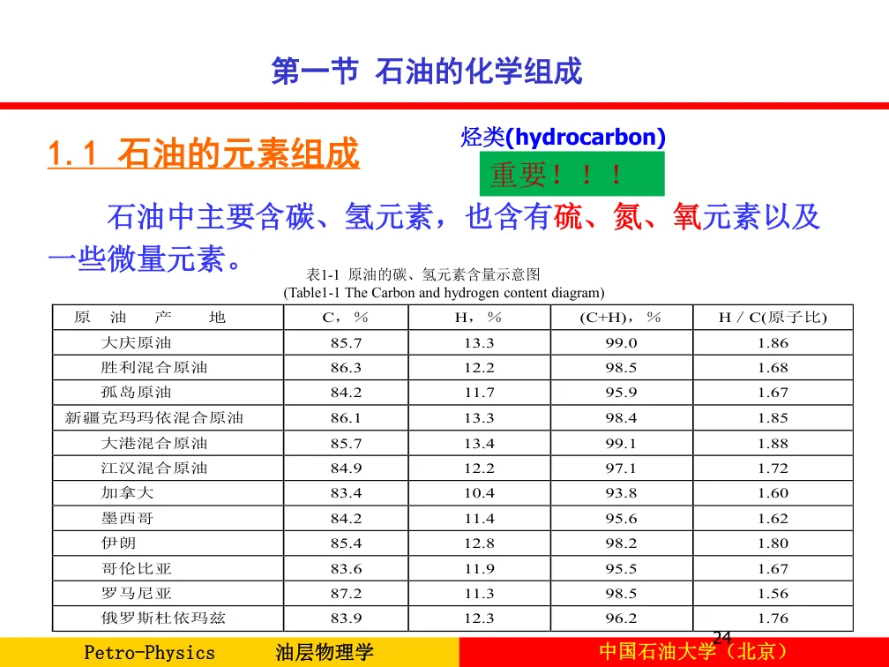
图上有什么：12 个国内外原油样的元素分析数据（5 列）：产地、C%、H%、(C+H)%、H/C 原子比。如大庆 85.7/13.3/99.0/1.86，孤岛 84.2/11.7/95.9/1.67，罗马尼亚 87.2/11.3/98.5/1.56。
怎么读：所有样品 C 落在 83~87%、H 落在 10~14%，两元素合计约 94~99%；H/C 原子比 1.56~1.88。H/C 越大，烃类越饱和、油越轻。
考点与易错：记区间不记个例——"石油以 C、H 为主（合计 95% 左右以上）"；H/C 原子比是衡量石油"轻重"的标尺，胶质沥青质多的重质油 H/C 低。
2. 表1-2 原油含硫量对比表（图片表）P25
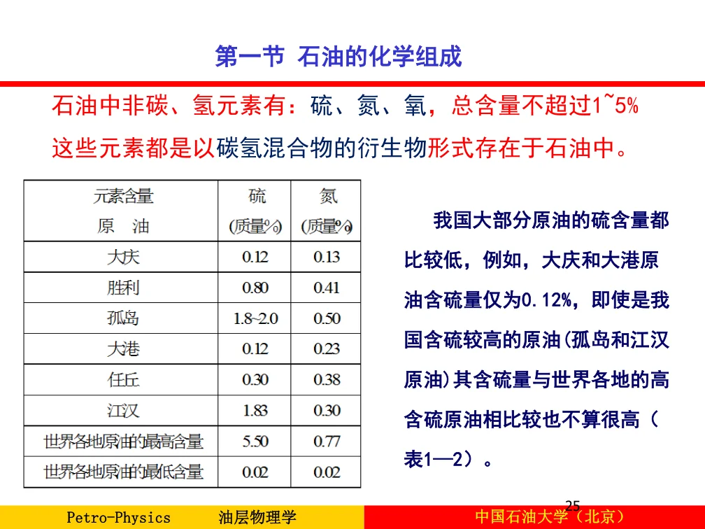
图上有什么：国内外原油含硫量对比表（以图片嵌入，表内数字不可复制）。
怎么读：结合本页正文——我国原油普遍低硫，大庆、大港含硫仅 0.12%；孤岛、江汉相对较高，属我国含硫较高的原油。
考点与易错：含硫量是质量百分数；为后面"低硫/含硫/高硫"三分类（0.5%、2% 界限）做铺垫。
3. 石油化合物两大类分类框图P26
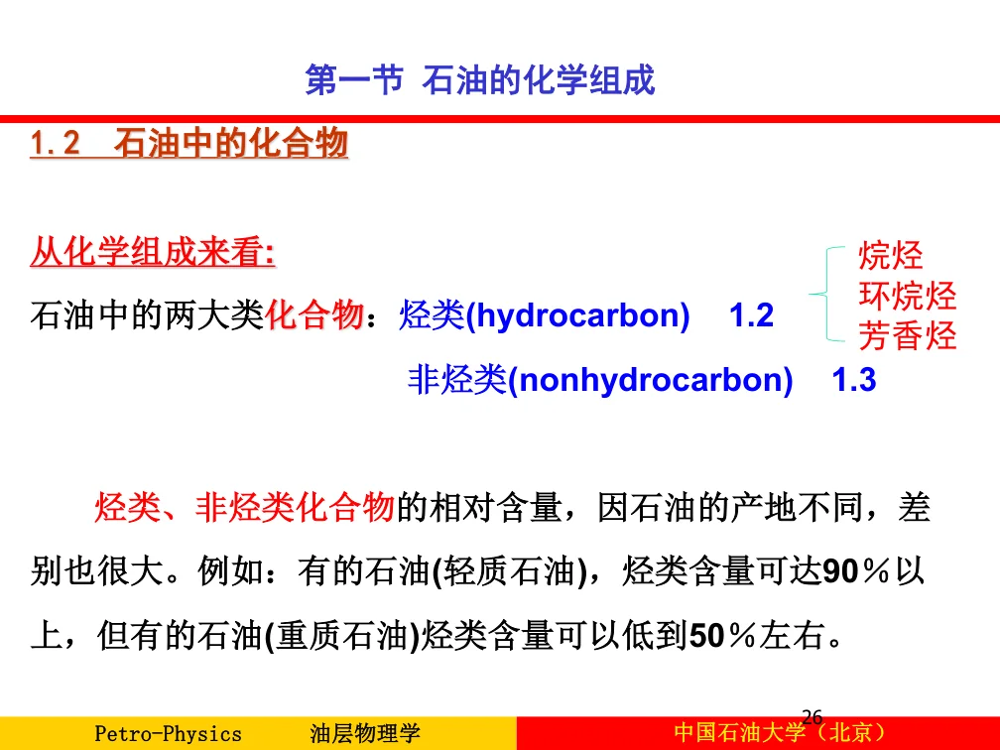
图上有什么：分支框图：石油中的化合物 → 烃类（烷烃、环烷烃、芳香烃）＋ 非烃类（含 S、N、O 的化合物）。
怎么读：轻质油烃类含量可达 90% 以上，重质油可低到 50% 左右，其余即非烃。
考点与易错：非烃化合物都是极性物质——这是后续学界面张力、吸附、乳化等现象的化学根源。
4. 三类烃分子结构图组（烷烃/环烷烃/芳香烃）P27–29重点
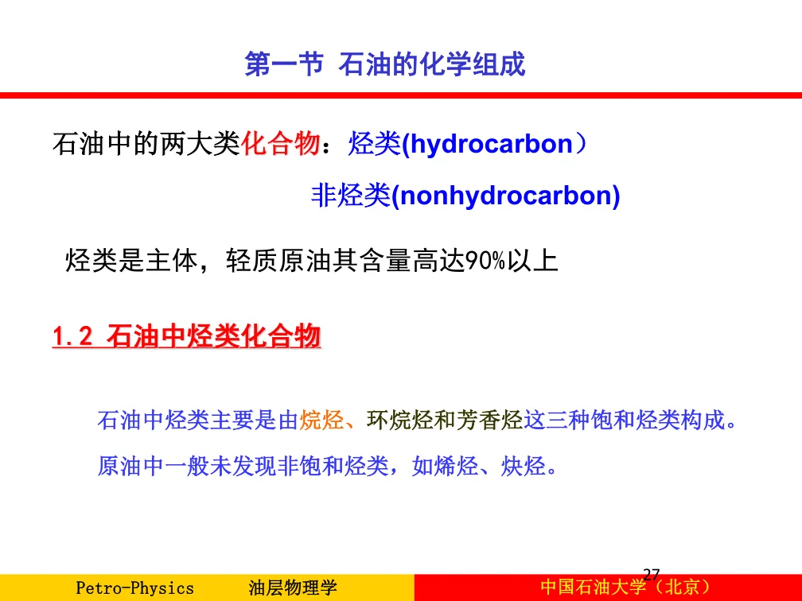
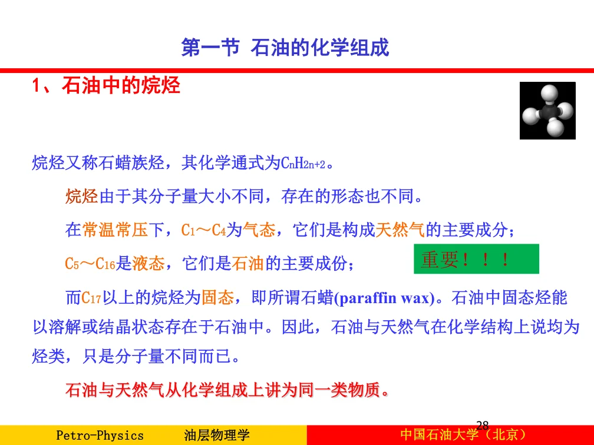
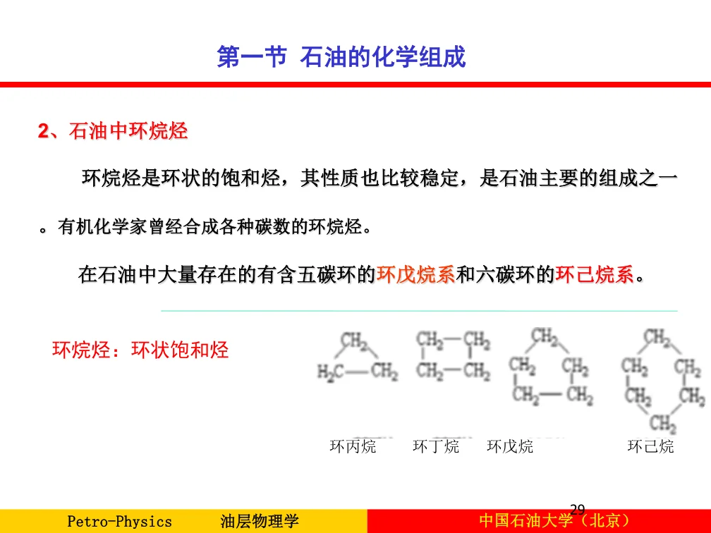
图上有什么：三类饱和烃的结构式/分子模型图，环烷烃一页标注了环丙烷、环丁烷、环戊烷、环己烷。
怎么读：烷烃通式 CnH2n+2；环烷烃是环状饱和烃，石油中大量存在五碳环（环戊烷系）和六碳环（环己烷系）；芳香烃含苯环。
考点与易错：①碳数三分：C₁₋₄ 气（天然气主要成分）、C₅₋₁₆ 液（石油主要成分）、C₁₇₊ 固（石蜡）——必背；②原油中一般不含烯烃、炔烃等不饱和烃；③老师划线："石油与天然气在化学组成上是同一类物质"；④分子量范围：最小甲烷 16，最大沥青质可达几千；石蜡 C17–35、地蜡 C36–55（P33）。
5. 非烃化合物结构式图组（含 S/N/O 化合物）P31
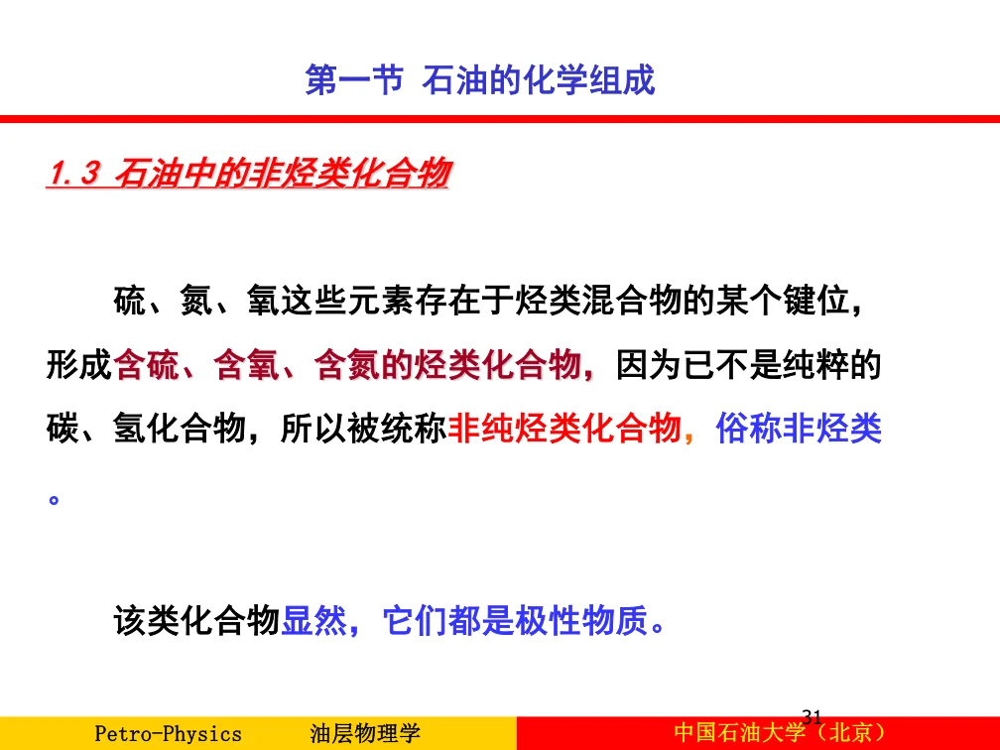
图上有什么：含硫、含氧、含氮化合物的示例结构式。
怎么读：S、N、O 以"杂原子"形式嵌在烃分子键位上，构成非烃化合物，全是极性物质。
考点与易错：与第 3 条呼应：极性来源→表面活性→影响界面性质。胶质的极性强即源于此。
6. 胶质、沥青质大分子示意图P32
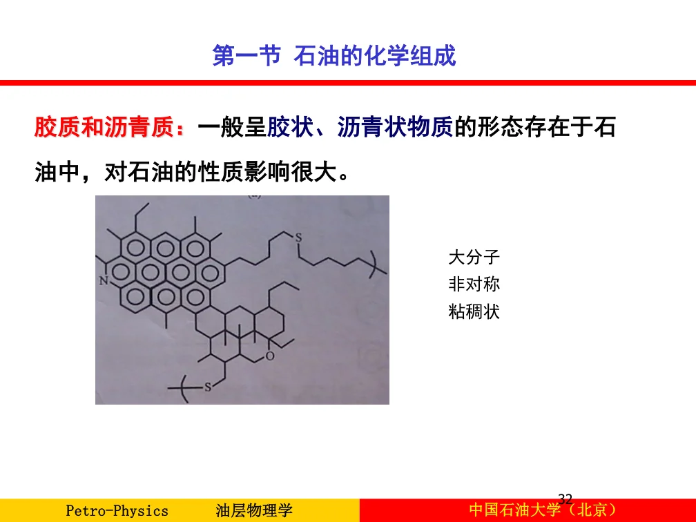
图上有什么：标注"大分子、非对称、粘稠状"的大分子结构示意。
怎么读：胶质、沥青质呈胶状/沥青状存在于石油中，分子大且不对称，是原油高密度、高粘度的物质基础。
考点与易错："对石油的性质影响很大"——具体落到表1-7：粘度与胶质沥青质含量正相关。
7. 牛顿内摩擦（平板速度梯度）示意图P39重点
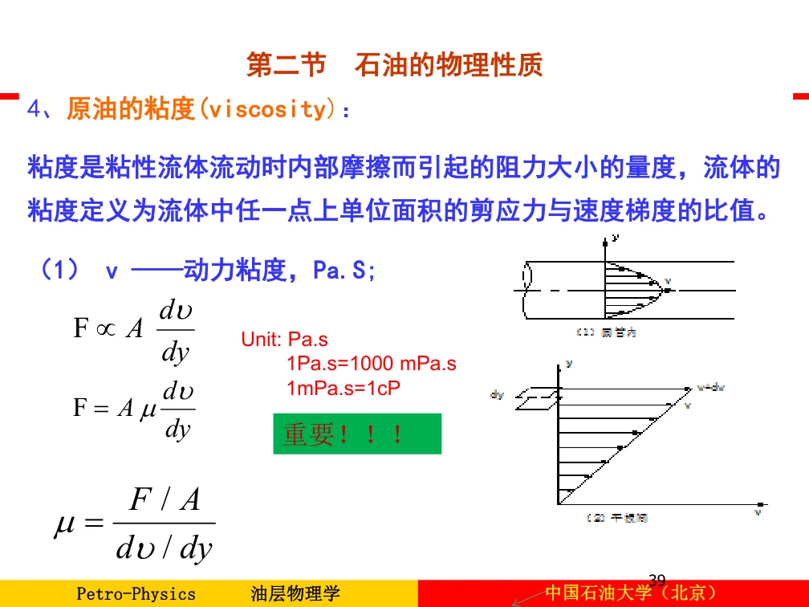
图上有什么：两平行平板间流体的速度梯度示意，配牛顿粘性定律 F/A = μ·dv/dy。
怎么读：粘度=单位面积上剪应力与速度梯度之比；单位 Pa·s，换算 1 Pa·s=1000 mPa·s，1 mPa·s=1 cP。
考点与易错：①定义式与单位换算是计算题底工；②说粘度必须注明温度；③动力粘度 μ 与运动粘度 ν=μ/ρ 别混。
8. 表1-7 我国一些油田的地面原油性质大表P41重点
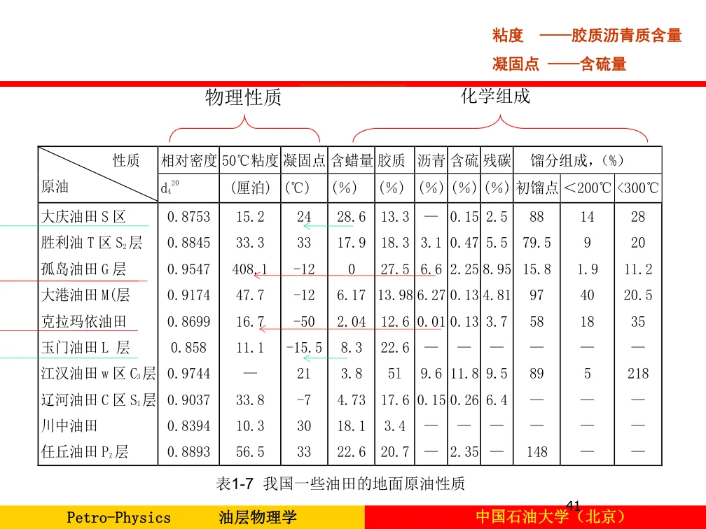
图上有什么：10 个油田 × 11 项性质的完整数据表：相对密度 d₄²⁰、50℃ 粘度、凝固点、含蜡量、胶质、沥青、含硫、残碳、馏分组成（初馏点、<200℃、<300℃）。如孤岛：0.9547 / 408.1 mPa·s / −12℃ / 胶质 27.5%；大庆 S 区：0.8753 / 15.2 / 24℃ / 含蜡 28.6%。
怎么读：横向看单油田、纵向找规律：粘度 ↔ 胶质沥青质同向（孤岛最粘、胶质最高）；凝固点 ↔ 含蜡量同向（大庆含蜡 28.6% → 凝固点 24℃；克拉玛依含蜡 2.04% → 凝固点低至 −50℃）；孤岛、江汉含硫较高（呼应表1-2）。
考点与易错：核心结论"石油物理性质的差异是其化学组成不同的反映"；考试常给两个油田数据，让你解释性质差异的原因——用"组成决定性质"的因果链作答。
9. 油气藏四级分类树状框图P51重点
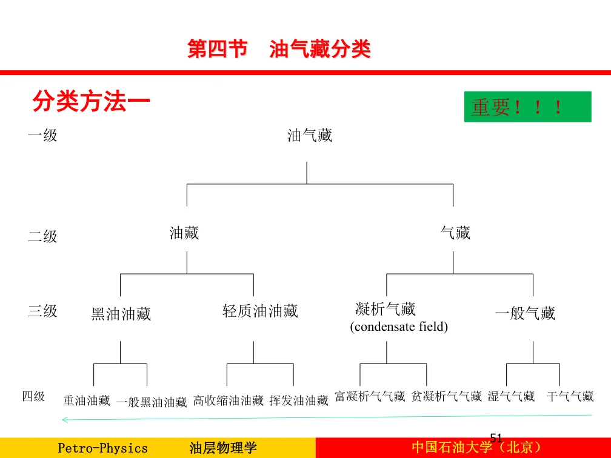
图上有什么：四级树：油气藏 →（油藏、气藏）→（黑油油藏、轻质油油藏｜凝析气藏、一般气藏）→ 八个末级（重质油油藏、一般黑油油藏、高收缩油油藏、挥发油油藏｜富凝析气气藏、贫凝析气气藏、湿气气藏、干气气藏）。
怎么读：先按储集主体分油/气两大支，再逐级按流体性质细分；"轻质油油藏"＝高收缩油/挥发油（P48 按相态分类呼应）。
考点与易错：八个末级名称及归属要默写；油/气分支的判别依据在第三章相图（P110–117），前后呼应着记。
第二章 天然气的高压物理性质（P53–96）
本章是"图版章"：Z 图版、临界参数表、Bg 曲线、粘度分区图、含水量图版全在这。P64 有一幅无文字大幅配图（位于 Z 定义与对比状态定律之间，为一组 Z 随压力变化的示意曲线）。
10. 天然气矿藏分类框图P54
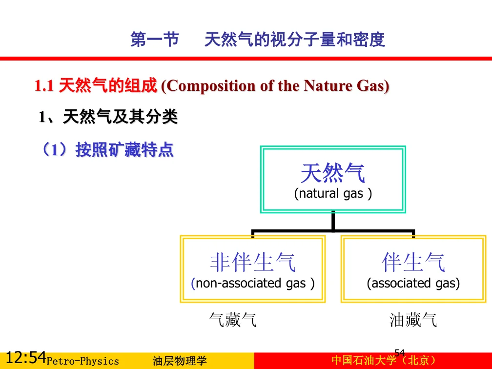
图上有什么：按矿藏特点的两级分类树：天然气 → 伴生气 / 非伴生气 →（气藏气、油藏气）。
怎么读：伴生气=与原油共存（气顶气、溶解气）；非伴生气=独立气藏（气藏气）。
考点与易错：下一页的干气/湿气（C₅⁺ 液体 13.5 cm³/标m³）与贫气/富气（C₃⁺ 94 cm³/标m³）界限数字在附录 B，别混用。
11. 天然气组成表示与换算示例表P57–58
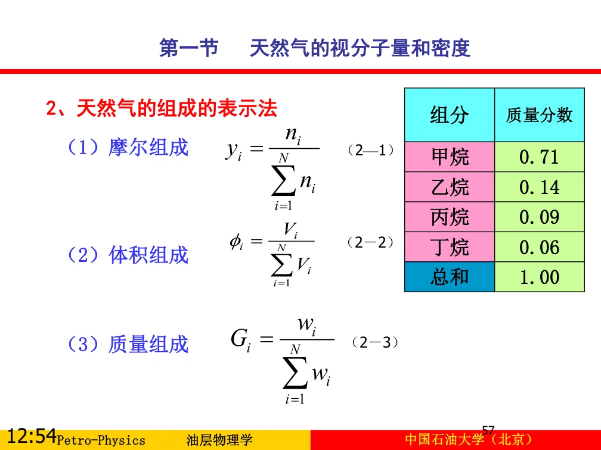
图上有什么：示例小表：甲烷 0.71、乙烷 0.14、丙烷 0.09、丁烷 0.06（质量分数，总和 1.00），用于演示三种组成及其换算。
怎么读：摩尔组成 yi=ni/n、体积组成 φi=Vi/V、质量组成 Gi=wi/G；质量→摩尔：yi=(Gi/Mi)/Σ(Gj/Mj)；体积组成=摩尔组成（标况 1 mol 气体 22.4 L）。
考点与易错：三组成换算是后面一切计算的第一步，"体积组成=摩尔组成"只对气体成立。
12. 图2-3 天然气压缩因子图版 Z=f(Pr,Tr)P67重点
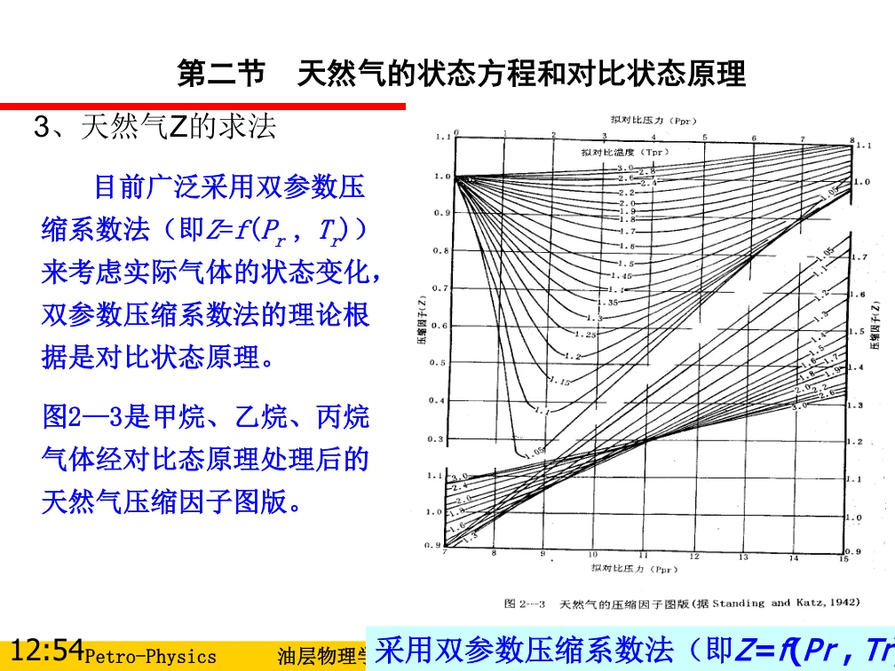
图上有什么：甲烷、乙烷、丙烷经对比态原理处理后的通用 Z 图版（据 Standing-Katz 1942）：横轴（视）对比压力 Ppr（0~15），纵轴 Z（0.3~1.1，右轴 1.2~1.7 为高压延伸段），曲线族以（视）对比温度 Tpr（约 1.0~3.0）为参变量。
怎么读：求 Z 四步走：组成 → 视临界参数 Ppc/Tpc（加权或图版法）→ 视对比参数 Ppr/Tpr → 查图读 Z。曲线形态：低压区 Z 随压力升高先降（分子引力主导，Z<1），过最低点后回升，高压下 Z>1（分子体积/排斥主导）；Tr 越低偏离 1 越显著。
考点与易错：①对比状态原理表述："相同对比状态下，各气体的 Z、粘度等内涵性质近似相同"——简答高频；②Z=V实际/V理想，是比值不是偏差量；③混合气必须用"视"参数（天然气没有真实临界点）。
13. 表2-3/2-4 烃类与非烃气体物性常数表P69重点
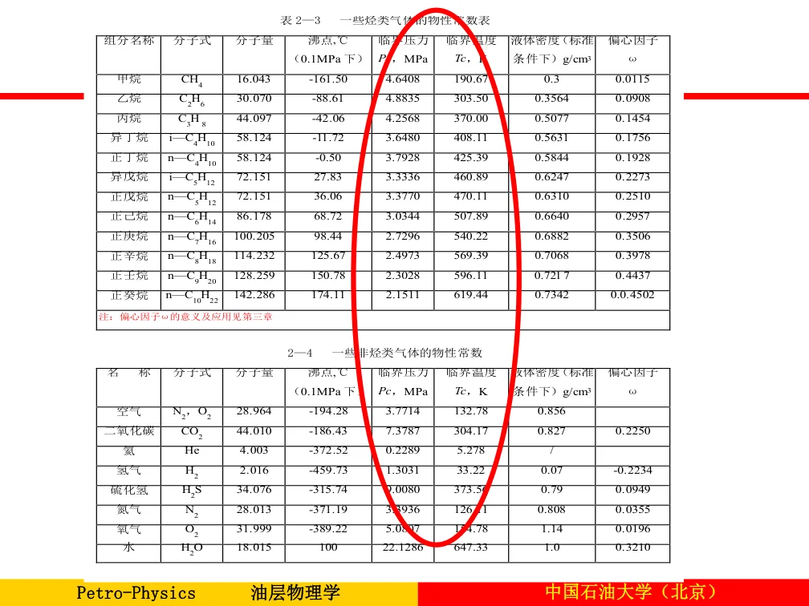
图上有什么：两张 8 列常数表（分子量、沸点、Pc、Tc、液体密度、偏心因子 ω）：表2-3 覆盖 C₁~C₁₀ 正构烷烃及 i/n-C₄、i/n-C₅；表2-4 覆盖空气、CO₂、He、H₂、H₂S、N₂、O₂、H₂O。
怎么读：同系物规律随碳数增加：分子量↑、沸点↑、Tc↑、Pc↓、ω↑。关键锚点值：CH₄ M=16.04、Pc=4.64 MPa、Tc=190.67 K；C₂H₆ 30.07/4.88/303.5；C₃H₈ 44.10/4.26/370.0；n-C₄ 58.12/3.79/425.4；CO₂ 44.01/7.38/304.17；空气 28.96≈29。
考点与易错：①算视临界参数的取数来源；②γg=M/29 的"29"就是空气分子量；③"偏心因子 ω 的意义及应用见第三章"——记住它衡量分子偏离球形/非中心力的程度即可。
14. 经验图版法：γg → 视临界参数图版P71
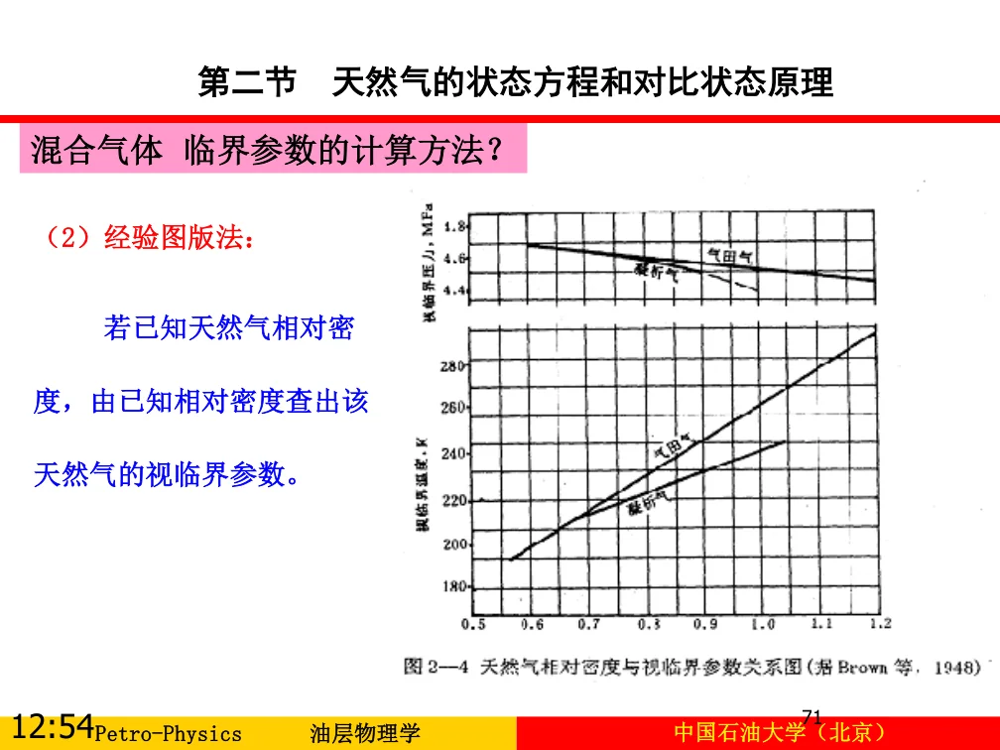
图上有什么：已知天然气相对密度 γg、直接查视临界温度 Tpc 与视临界压力 Ppc 的经验曲线图版。
怎么读：横轴 γg，两条曲线分别读 Tpc（K）与 Ppc（MPa）。适用于只知道相对密度、不知道组成的情况。
考点与易错：与加权法 Ppc=ΣyiPci 的适用场景区分：组成已知→加权法；只有 γg→图版法。两法结果略有差异，考试按题目给的条件选。
15. Wichert 方法非烃校正图版P73重点
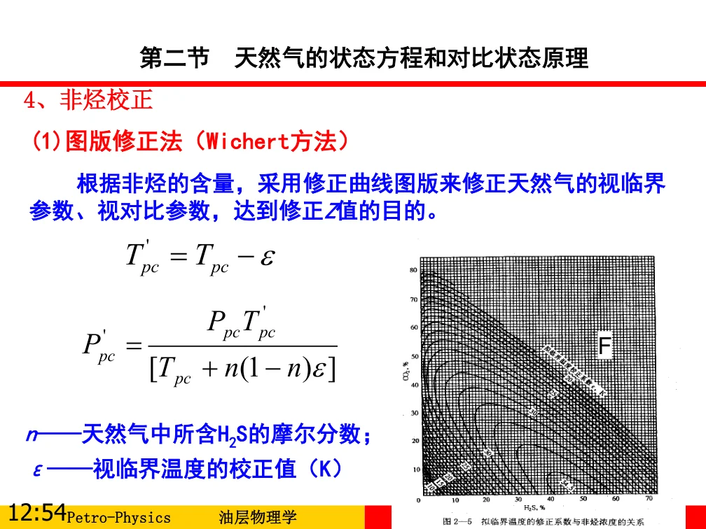
图上有什么：以 A（H₂S+CO₂ 摩尔分数之和）、B（H₂S 摩尔分数）为参数、查视临界温度校正值 ε 的曲线图版；配公式 T′pc = Tpc − ε、P′pc = Ppc·T′pc/[Tpc+n(1−n)ε]（n 为 H₂S 摩尔分数）。
怎么读：含非烃时先查/算 ε，校正视临界参数，再用校正后的视对比参数查 Z。经验公式版（Wichert-Aziz，式 2-18）：ε=120(A0.9−A1.6)+15(B0.5−B4)。
考点与易错：最常考的是免校正条件：非烃体积含量<5%（其中 N₂<2%、CO₂<1%）且 CH₄>50%，否则误差大于 3%；三种校正方法（图版修正/经验公式/Eilerts 加权，后者适用非烃>40%）名称对得上号即可。
16. 图2-6 某天然气气样 P–Bg 关系曲线P78
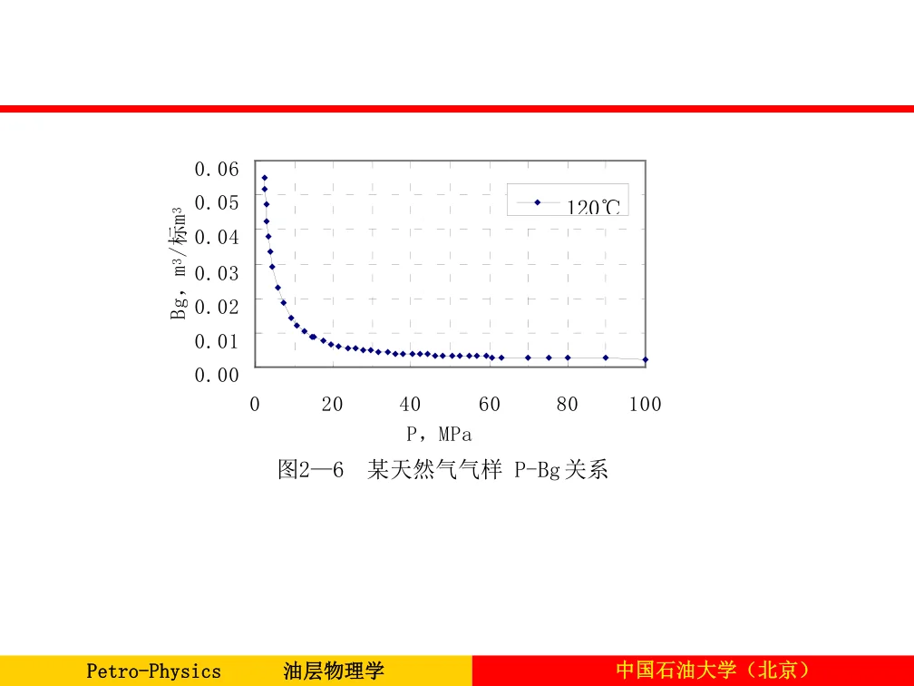
图上有什么：120℃ 等温线的 Bg–P 曲线：纵轴 Bg 0~0.06 m³/标m³，横轴 P 0~120 MPa。
怎么读：Bg 随压力增大而减小（近似双曲线），数量级 10⁻²~10⁻³——同一团气在地下的体积只有地面的百分之几。
考点与易错：计算题直接用公式 Bg=(273+t)/293 · PscZ/P；标况取 20℃、0.1 MPa；膨胀系数 Eg=1/Bg。别把 Bg 与原油 Bo（略大于 1）的量级搞混。
17. 图2-7 视对比压缩系数图版 Cpr=f(Ppr,Tpr)P81
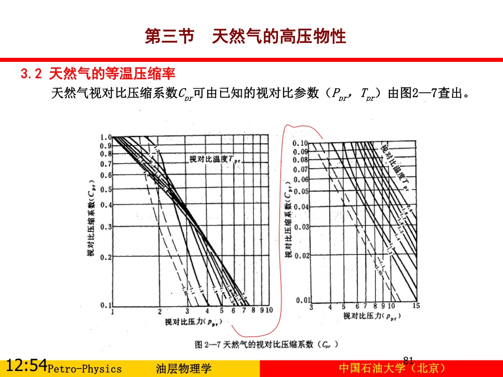
图上有什么：视对比压缩系数图版：横轴 Ppr、曲线族以 Tpr 为参变量、读 Cpr。
怎么读：查出 Cpr 后换算 Cg=(1/Ppc)[1/Ppr−(1/Z)(∂Z/∂Ppr)Tpr]；也可由定义式 Cg=−(1/V)(∂V/∂P)T 理解。
考点与易错：量纲 1/MPa；气体压缩系数比原油、地层水大得多（气体弹性强），这是气驱/弹性驱动能量的来源。
18. 图2-9 气体粘度的高压区/低压区划分图P82重点
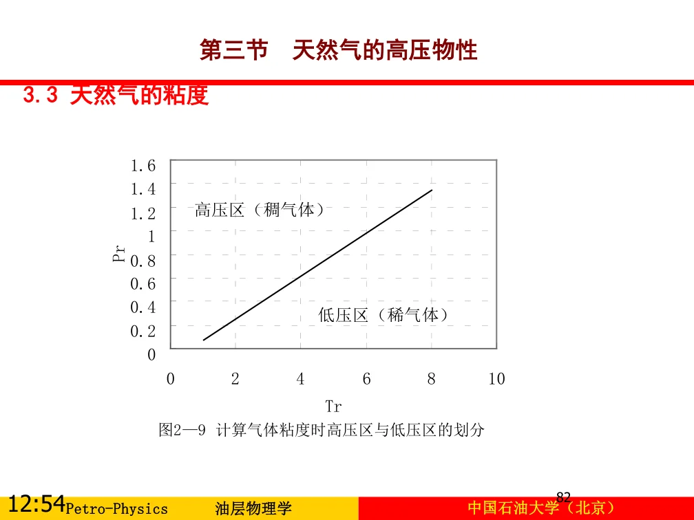
图上有什么：Pr–Tr 平面（横轴 0~10、纵轴 0~1.6）上一条分界曲线，把平面分成"低压区（稀气体）"与"高压区（稠气体）"两块。
怎么读：算出体系的 Pr、Tr，先定位落在哪个区，再套用该区的粘度规律。
考点与易错：两区规律完全相反，对照背：低压区——粘度与压力无关、随温度↑而↑、随分子量↑而↓（μ=ρυλ/3，分子动理学）；高压区——粘度随压力↑而↑、随温度↑而↓、随分子量↑而↑（像液体）。"为什么反"：机理从分子碰撞输运变为分子层间摩擦。
19. 低压气体粘度–温度曲线族 / 图2-10 大气压粘度图版P84、P86
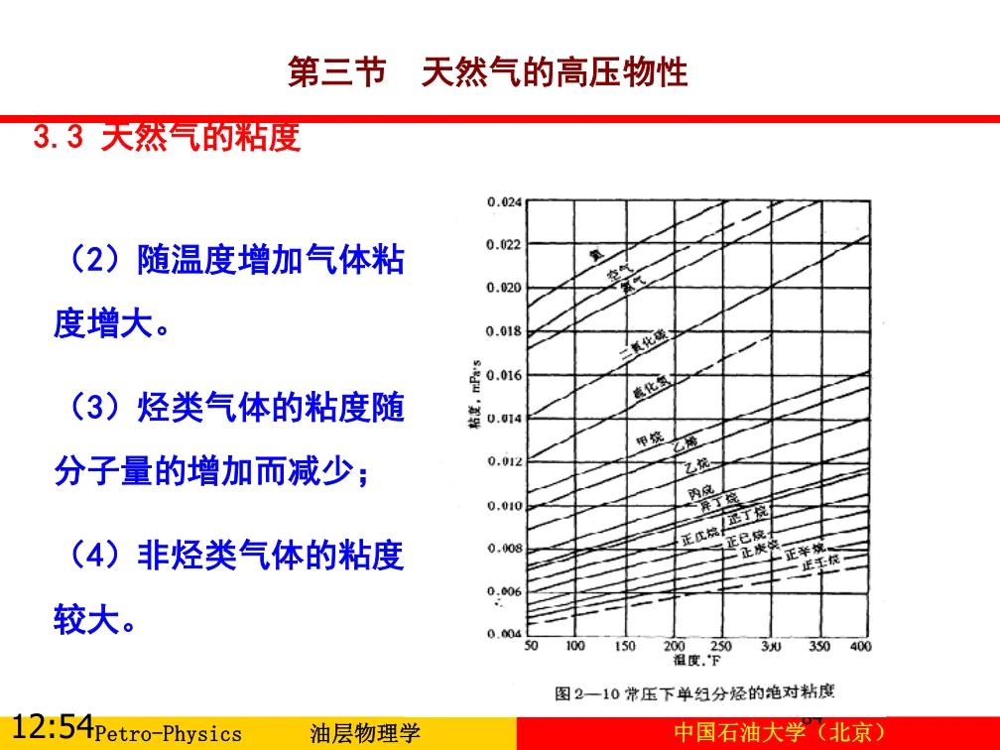
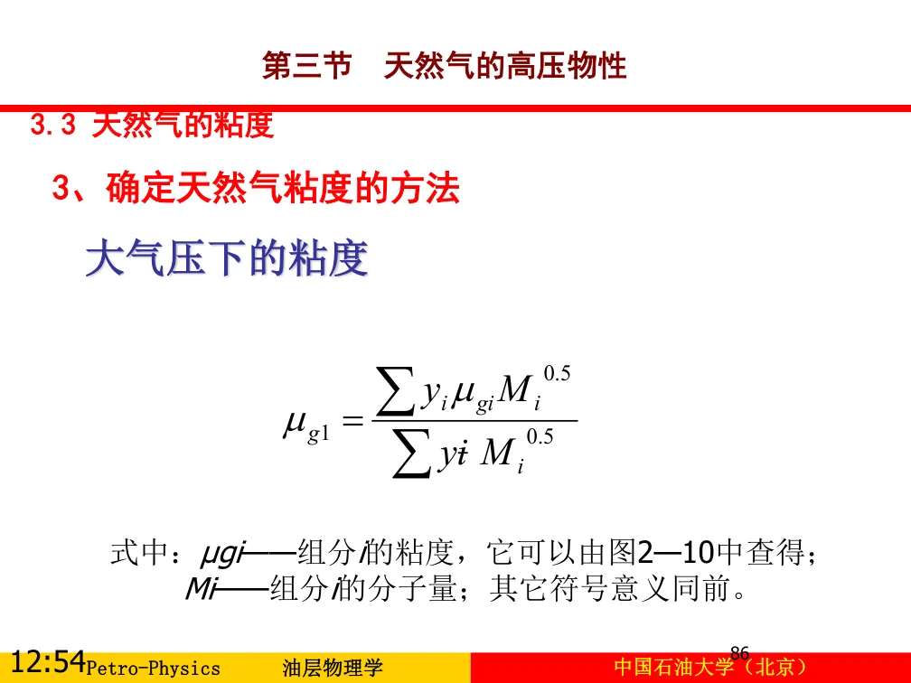
图上有什么：P84 一幅粘度–温度关系曲线图（不同分子量烃气与非烃气对比，据正文）；P86 为图2-10"大气压下单组分气体粘度"图版缩图，配混合规则 μg=ΣyiμgiMi0.5/ΣyiMi0.5。
怎么读：大气压下先查各组分 μgi，再按 yi·√Mi 加权混合；非烃气体（CO₂、H₂S、N₂）粘度偏大。
考点与易错：加权因子是 yi√Mi 不是简单 yi；求高压粘度=大气压粘度×粘度比（另一图版），"两步走"流程要会说。
20. 图2-13 Mcketta-Wehe 天然气含水量图版（露点图）P90
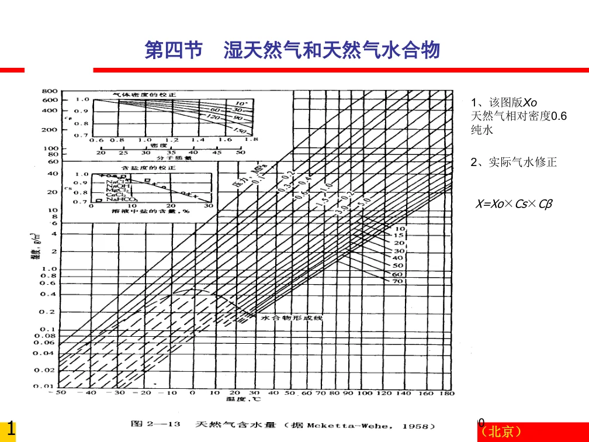
图上有什么：1958 年 Mcketta-Wehe 含水量图版（又称天然气露点图），占版面约 2/3；基图 Xo 对应 γg=0.6、纯水；实际值 X=Xo×Cs×Cβ（含盐、相对密度校正）。
怎么读：在温度–压力网格上读含水量；含水量随压力↑而↓、随温度↑而↑；含盐量↑→含水量↓；γg 越大→含水量越少。
考点与易错：四条规律（P、T、盐、相对密度）背下来即可；绝对湿度 X=Pvw/(RwT)、相对湿度 φ=Pvw/Psw（公式速查表 A）。
21. 水合物笼形结构示意图P92
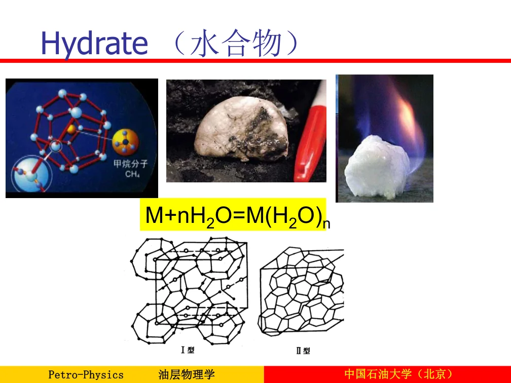
图上有什么：水合物结构示意与实物图组：水分子靠氢键构成主体笼形网络，气体分子充填在孔穴中；反应式 M+nH₂O=M(H₂O)n；下排为 I 型、II 型两种晶型结构。
怎么读：结晶状笼形化合物（包络物），俗称"可燃冰"。
考点与易错：三个工程意义（P93）：潜在资源、井筒/气嘴堵塞影响流动、地面储运问题。
22. 水合物生成条件相图P94重点
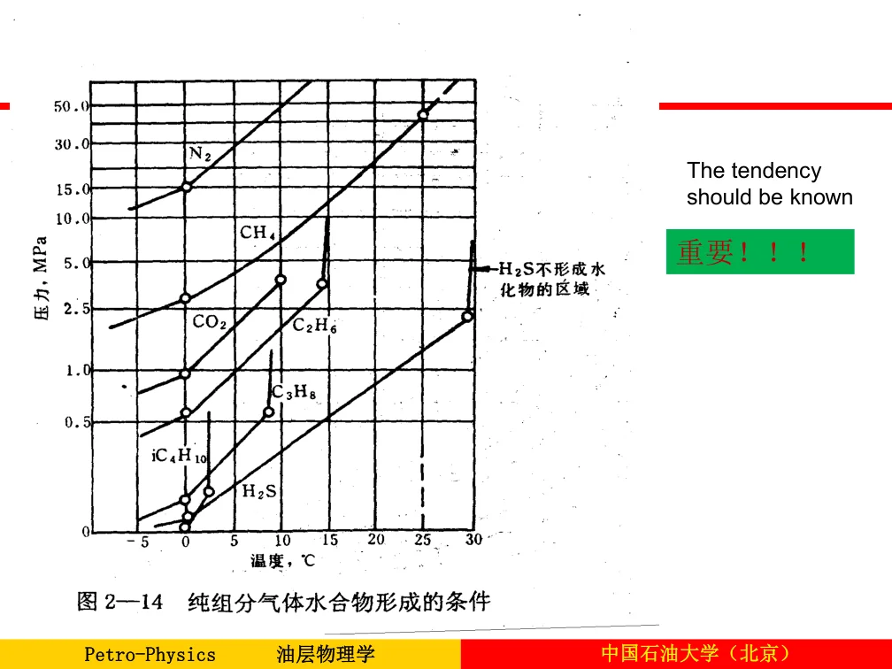
图上有什么：大幅 P–T 相界线图（图内文字不在文本层，据上下文与教材通用形态）：水合物生成平衡线 + 天然气包络线，标出易生成水合物的温压区。
怎么读：水合物在低温、高压一侧生成——温度低于生成曲线对应温度且压力足够高时出现；"The tendency should be known"（老师原话：趋势必须知道）。
考点与易错：判断给定井筒/节流条件会不会生成水合物；防治思路即破坏其生成条件（加热、降压、注抑制剂、脱水）。
第三章 油气藏烃类的相态和汽液平衡（P97–163）
本章是全课程图表密度最高的一章：所有相图共用一套"泡点线/露点线/临界点"语言，先看懂图 27（包络图），后面 28–32 全是它的变体。
23. 单组分体系 p–T 相图（乙烷）P103重点
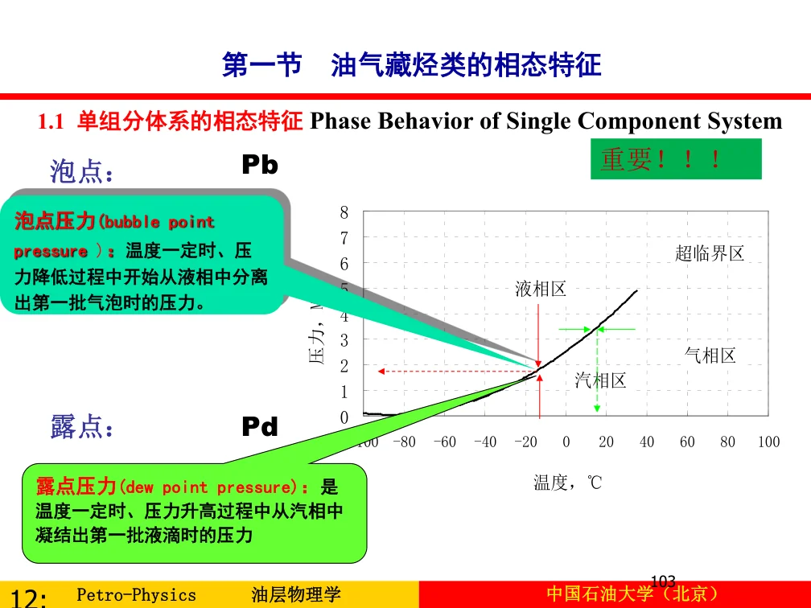
图上有什么：p–T 图上一条单调上升的饱和蒸汽压曲线：纵轴 0~8 MPa、横轴 −100~100 ℃；曲线左侧液相区、右侧汽相区、终点以上超临界区；线上标 Pb、Pd。
怎么读：单组分体系泡点线与露点线重合为同一条蒸汽压曲线——升温或降压跨过它就沸腾，反向则凝结。曲线终点是临界点，超过后单相无法再靠加压液化。
考点与易错：泡点/露点定义必背：泡点=恒温降压中第一批气泡出现的压力；露点=恒温升压中第一批液滴出现的压力。"单组分 Pb=Pd、多组分才分开"是判断题常客。
24. 双组分体系环形相图P104重点
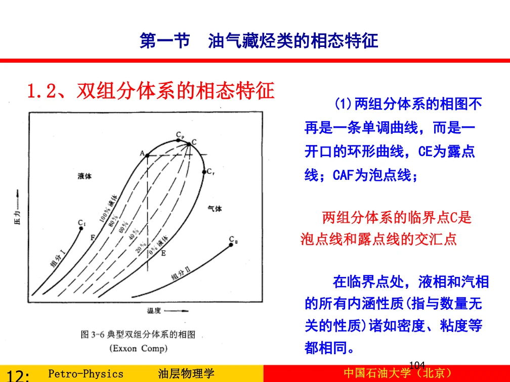
图上有什么：开口的环形包络线：CAF 为泡点线、CE 为露点线，两线交汇于临界点 C；环内为两相区。
怎么读：与单组分的本质区别——泡点线、露点线分离，出现两相区；临界点处汽液相的内涵性质（密度、粘度等与数量无关的性质）完全相同。
考点与易错：临界点不再是"最高温度/最高压力"点——环的右端另有临界凝析压力（最高点）与临界凝析温度（最右点），这一铺垫在下一张图正式展开。
25. 多组分烃类体系相包络图（本章母图）P106–107重点
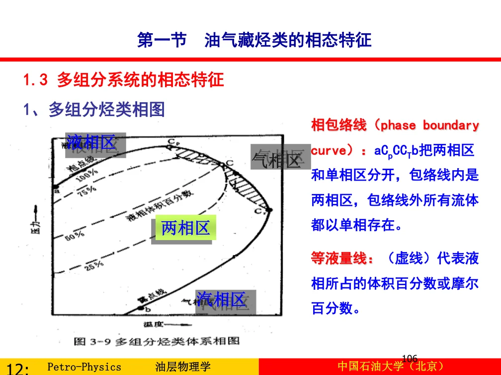
图上有什么：完整包络线 a—C—pC（泡点线）+C—T（露点线）：包络内两相区、外为单相区（液相/汽相/气相）；图内虚线为等液量线（液相体积或摩尔百分数）；三个特征点：C 临界点、pC 临界凝析压力（包络最高点）、T 临界凝析温度（包络最右点）。
怎么读：泡点线=液相 100% 线=饱和压力线（降到它出现第一批气泡）；露点线=汽相 100% 线（升压到它出现第一批液滴）；进入两相区后用等液量线读液量份额。
考点与易错：三个点各是各的：临界点 ≠ 最高压力点 ≠ 最高温度点；"饱和压力"专指泡点压力。这是后面所有相图题的母版，务必能把五个名字标注到图上。
26. 等温反凝析区（逆行凝析）图P108重点
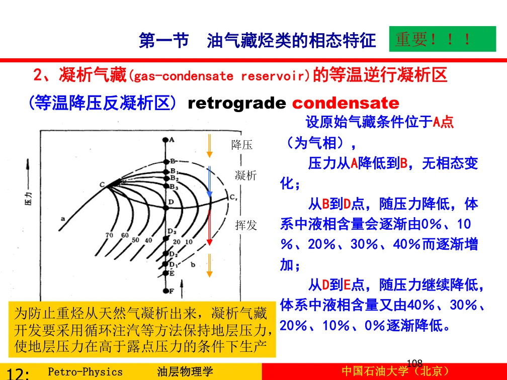
图上有什么：包络图上一条等温竖直降压路径 A→B→D→E，叠着等液量线族（10%~70%），沿降压路径 B→D 液量由 0 增至 40%，最大液量点在 D 附近；旁注"挥发/凝析、降压"。
怎么读：A→B 单相气无相变；B→D 降压反而凝析，液量 0→40% 增加；D→E 继续降压液量 40%→0 反而再蒸发；到 E 复为纯气。这种"压力降低反而析出液相"的反常行为即等温反凝析。
考点与易错：①反常段与最大反凝析液量点（D）要能指出；②开发对策必考——凝析气藏采用循环注气等方式保持地层压力高于露点压力生产，防止重烃在地层中凝析损失。
27. 等压降温反凝析区图P109
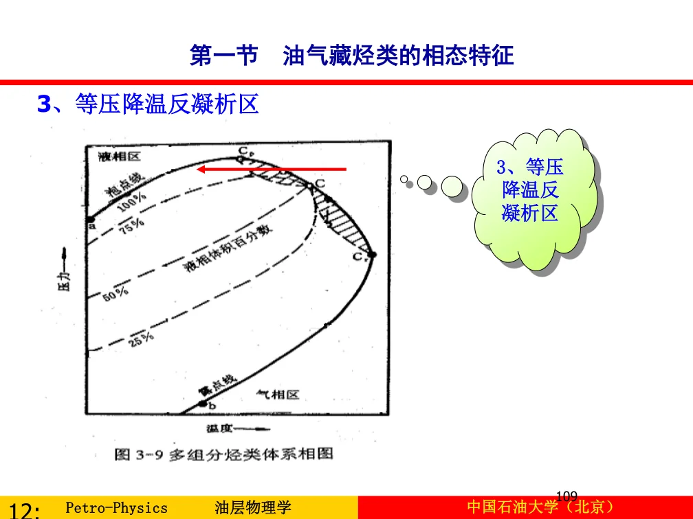
图上有什么：同一包络图上改作等压水平线，展示降温方向的反凝析区（配一张放大路径图）。
怎么读：与图 26 成对：竖线（等温降压）与横线（等压降温）各切出一块反常区。
考点与易错：考试问"两种反凝析"时，答"等温反凝析＋等压反凝析"并各配路径描述；等温反凝析是重点中的重点。
28. 油气藏类型判别相图（J/I/L/F/A 五点）P110–111重点
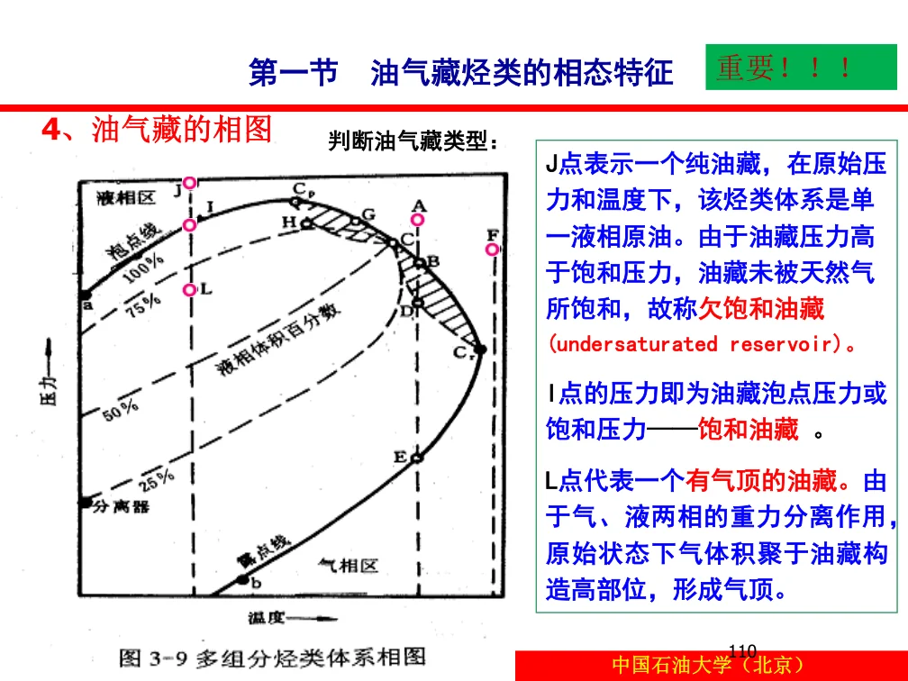
图上有什么：一张包络图上标 5 个地层条件点：J（欠饱和油藏）、I（泡点线上=饱和油藏）、L（跨泡点线=带气顶油藏）、F（气藏）、A（凝析气藏）。
怎么读：油类：地层温度低于临界温度——J 在泡点线上方（未饱和）、I 正好在泡点线上（P 为饱和压力）、L 跨线（构造高部位聚气成气顶）；气类：地层温度高于临界温度——F 全程不穿两相区，A 位于等温反凝析区上方（P 高于临界压力、T 介于 Tc 与临界凝析温度之间）。
考点与易错："判断油气藏类型"老师标了重要——判据两句话：先看地层温度相对临界温度的位置定油/气，再看地层压力相对包络线的位置定具体类型。
29. 五种油气藏的相图组（黑油/轻质油/凝析气/湿气/干气）P113–117重点
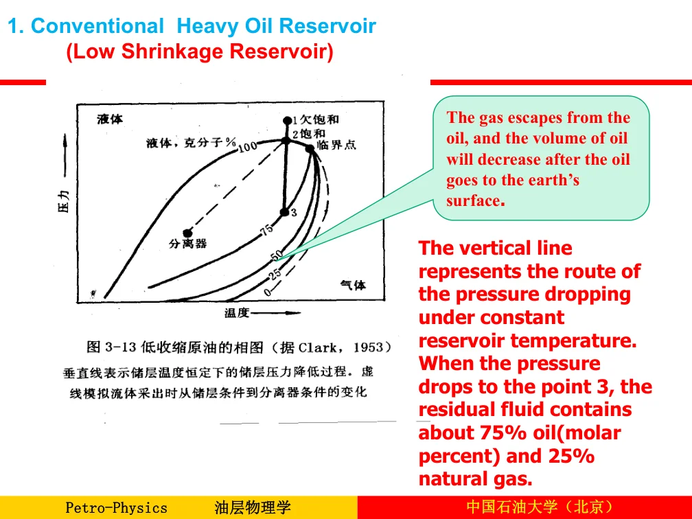
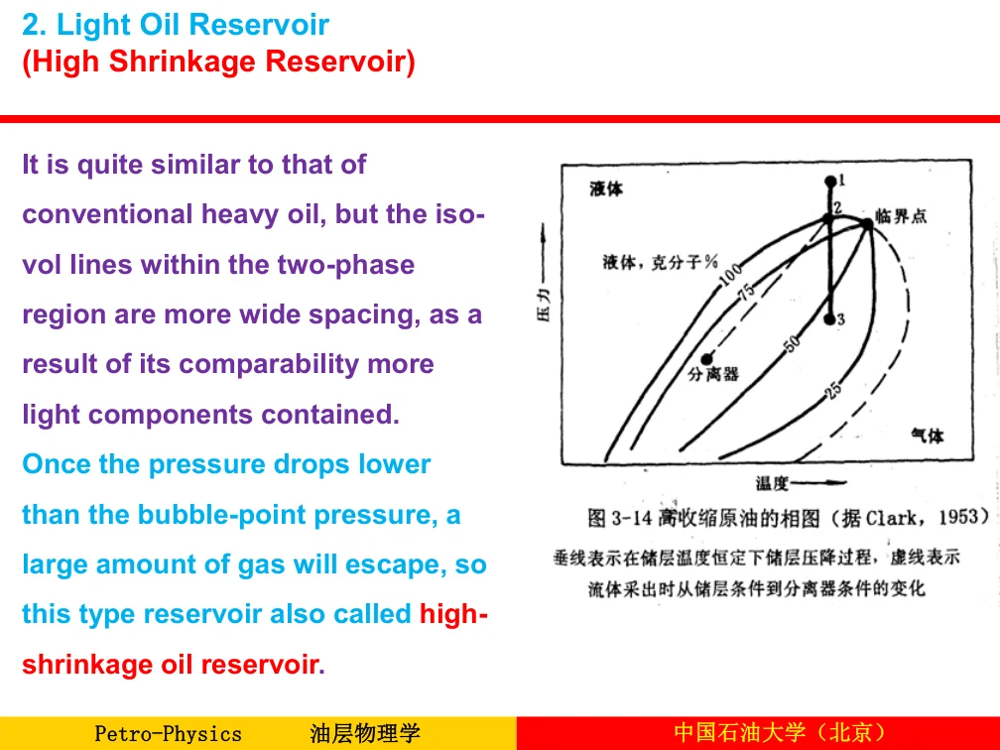
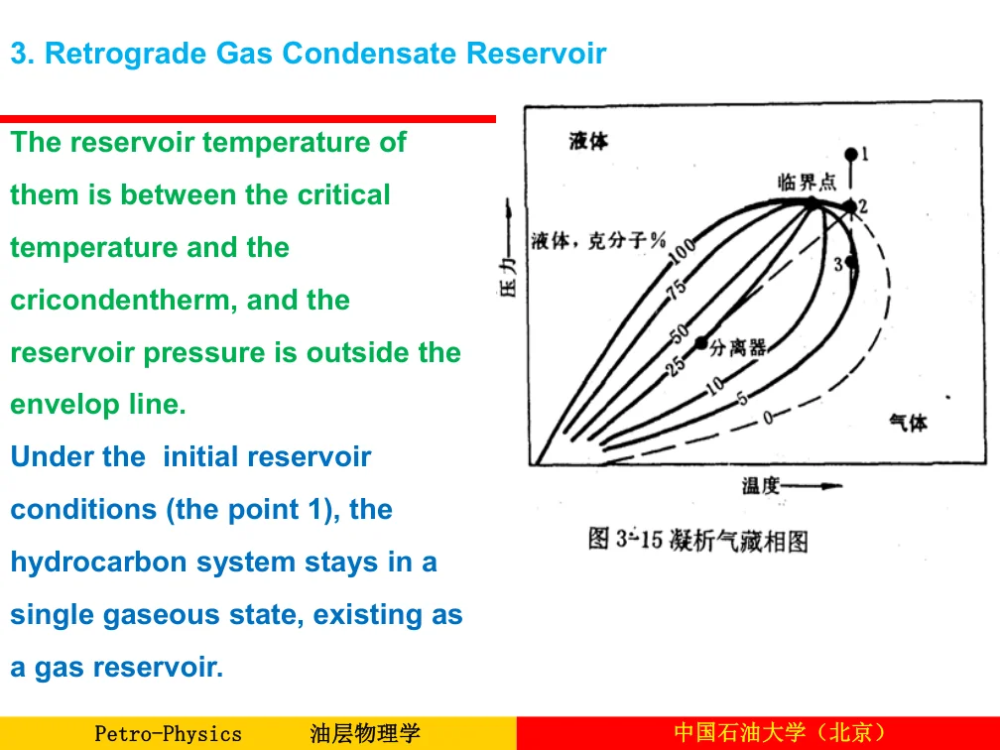
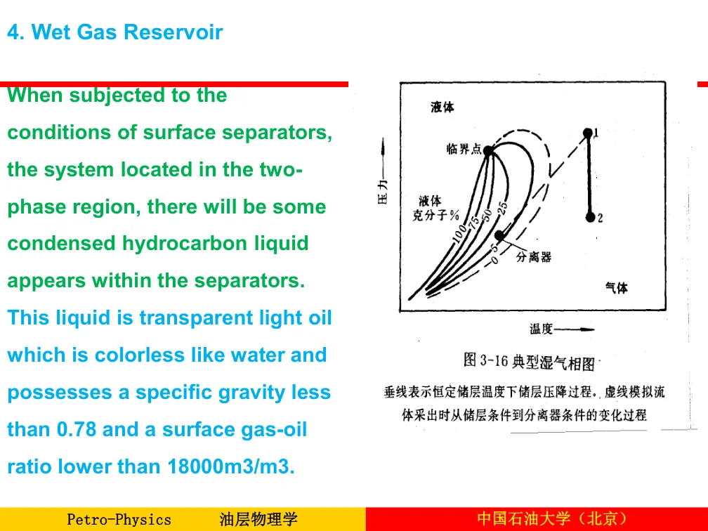
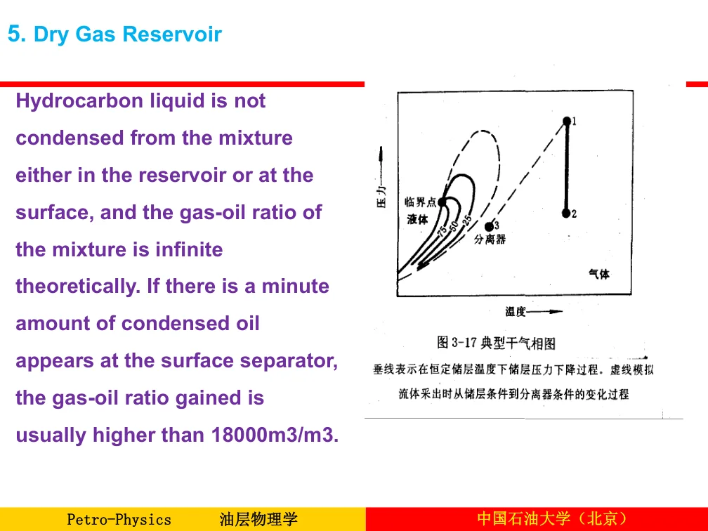
图上有什么：五张同构相图，各画一条等温降压开发线：常规重质油（低收缩/黑油）等液量线密集，降到点 3 时残余流体仍含约 75% 油（摩尔）；轻质油（高收缩）等液量线间距宽，过泡点后大量脱气；凝析气藏初始点 1 为单相气、降压进反凝析区；湿气藏地层内不进两相区、但分离器条件落入两相区（地面凝出 γ<0.78 的无色轻油，GOR<18000 m³/m³）；干气藏地层与地面都不凝析（GOR>18000，理论无穷大）。
怎么读：五张图横向对比三个要素：包络线胖瘦（轻组分越多越扁）、开发线与两相区的关系（地层内是否反凝析）、分离器是否落进两相区（地面有无凝析油）。
考点与易错：①命名规则（P112 英文小结）：按临界点在包络线上的相对位置与地层条件命名；流体分子量从气藏→凝析气藏→挥发油藏→油藏递增；②湿气 vs 凝析气的鉴别点：地层内是否反凝析；③GOR 18000 是湿/干气分界数字。
30. CO₂ 超临界相态图P118
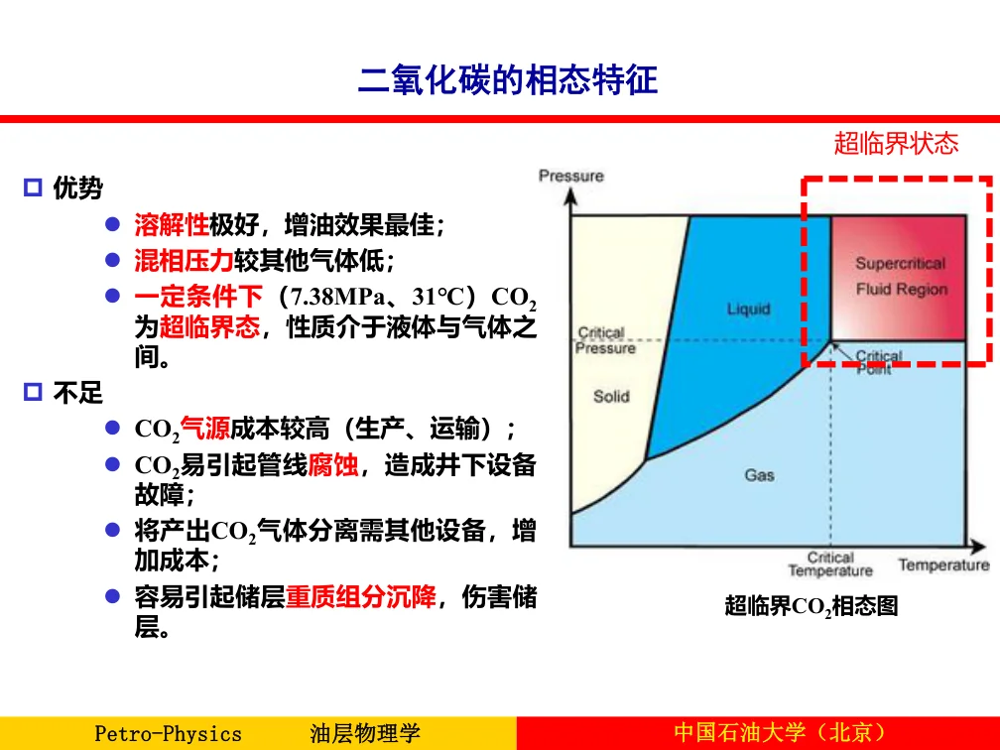
图上有什么：CO₂ 的 p–T 相图，标出临界点（31℃、7.38 MPa）与超临界区。
怎么读：超过临界温压后进入超临界态：密度似液体、粘度似气体、扩散能力强、溶解能力极好。
考点与易错：结合 PPT 列的优缺点记：优点=溶解性好增油效果佳、混相压力比其他气体低；缺点=气源成本高、易腐蚀管线设备、产出气分离需额外设备、易引起储层重质组分（沥青质）沉降伤害储层。
31. 表3-1~3-4 理想溶液相平衡计算例题组P126–131重点
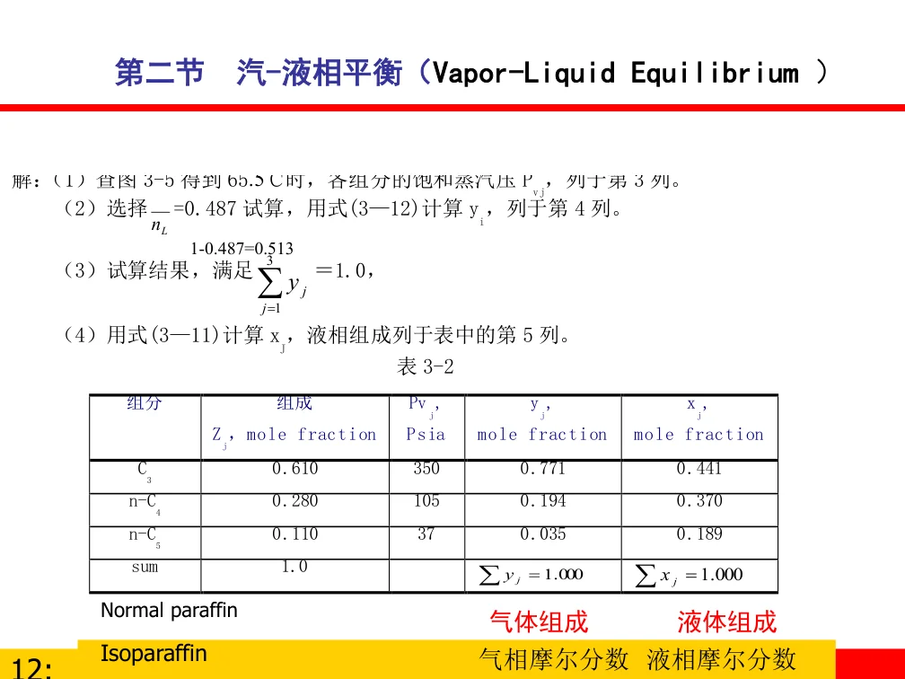
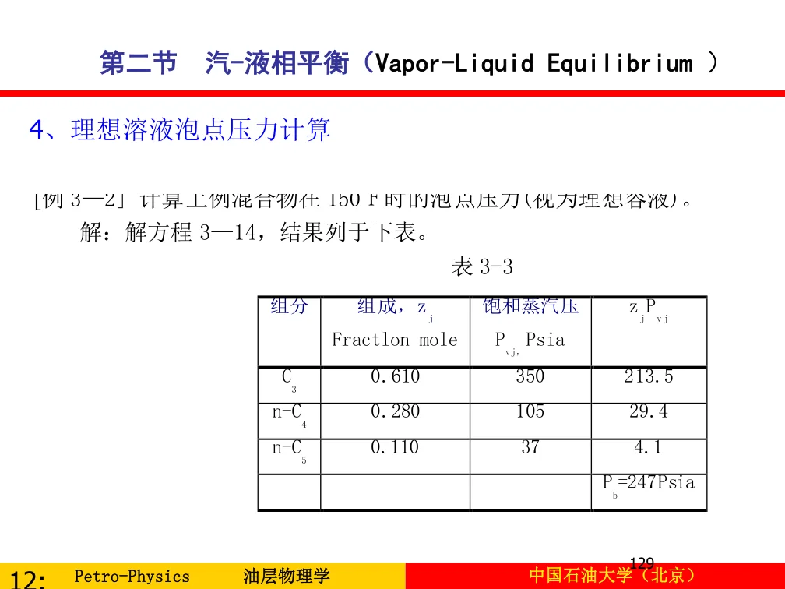
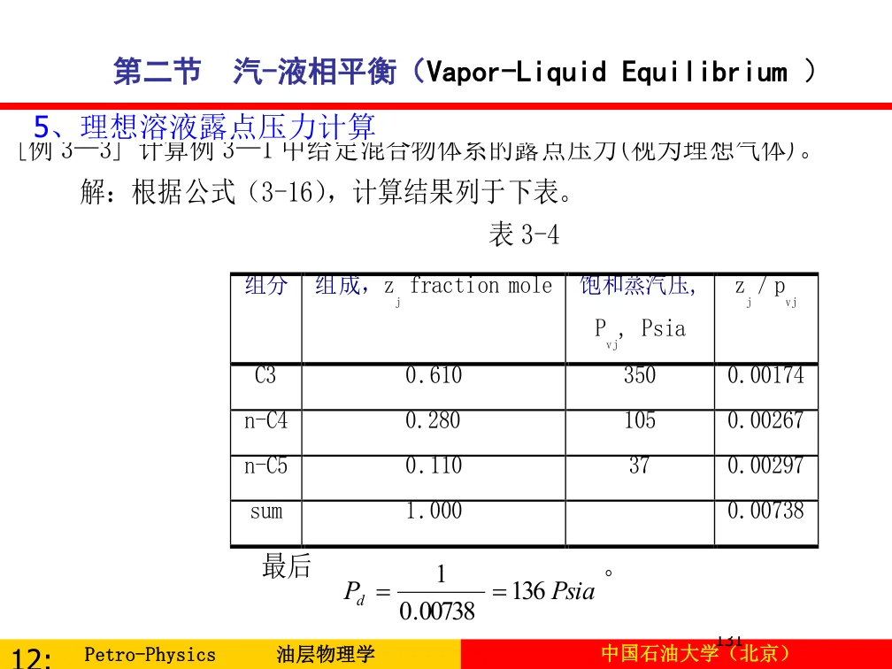
图上有什么：同一混合物（C₃ 0.610、n-C₄ 0.280、n-C₅ 0.110）的四张计算表：表3-1 组成；表3-2 闪蒸组成试算（65.5℃、200 Psia，取 nL=0.487 使 Σyj=1，得 yj=0.771/0.194/0.035，xj=0.441/0.370/0.189）；表3-3 泡点压力 Pb=ΣzjPvj=213.5+29.4+4.1=247 Psia；表3-4 露点压力 Pd=1/Σ(zj/Pvj)=1/0.00738=136 Psia。
怎么读：Pvj 从图 3-5（饱和蒸汽压图）按温度查取；试算流程五步：设 nL→算 yj→Σyj=1?→算 xj→求 nL、ng。
考点与易错：泡点是加权平均、露点是调和平均，公式形式绝不能混；结果验证 Pb(247)>Pd(136) 合理。这套数字是期末计算题的"标尺答案"。
32. 表3-5 真实溶液试算表（例3-4）P136
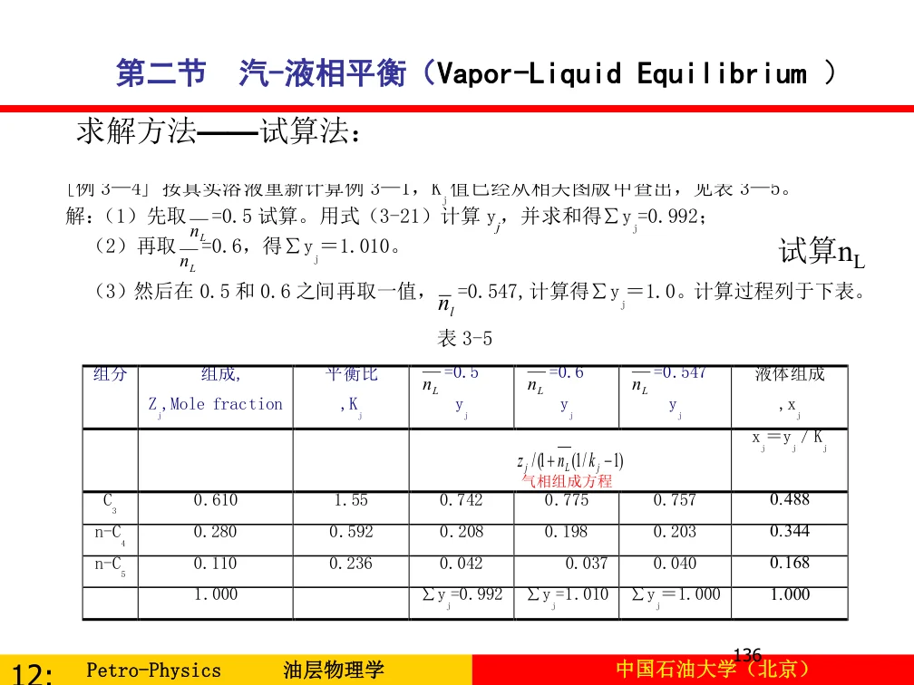
图上有什么：试算过程表，三个方案的 yj 并排：nL=0.5→Σyj=0.992；nL=0.6→Σyj=1.010；nL=0.547→Σyj=1.000（成立）；末列 xj=yj/Kj=0.488/0.344/0.168。
怎么读：与例3-1 的区别在于 Kj 不再是 Pvj/P，而是从图版查出的实际平衡比；试算思路不变——调 nL 至 Σyj=1。
考点与易错："真实溶液怎么改公式"——把 Pvj/P 换成 Kj（查图版），计算框架完全一样。
33. 例3-5 试算 K 值数据条P138
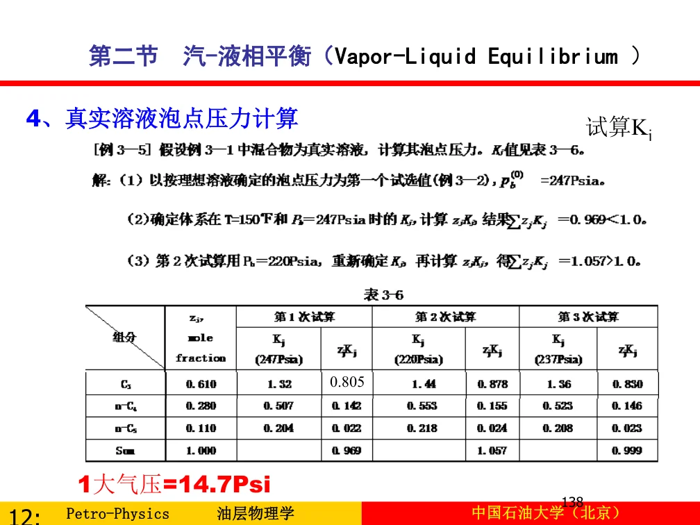
图上有什么：三幅横条图片拼成的数据截图（图版/数据表截条，图内文字不可复制），页面文字仅"试算 Kj""0.805""1 大气压=14.7 Psi"。
怎么读：例3-5 的配套数据——从 K 图版读取各试算压力下的 Kj，代入 ΣZjKj 判据。
考点与易错：单位换算细节：1 atm=14.7 psi；考试给英制数据别慌。
34. 图3-19 线性插值确定泡点压力P139
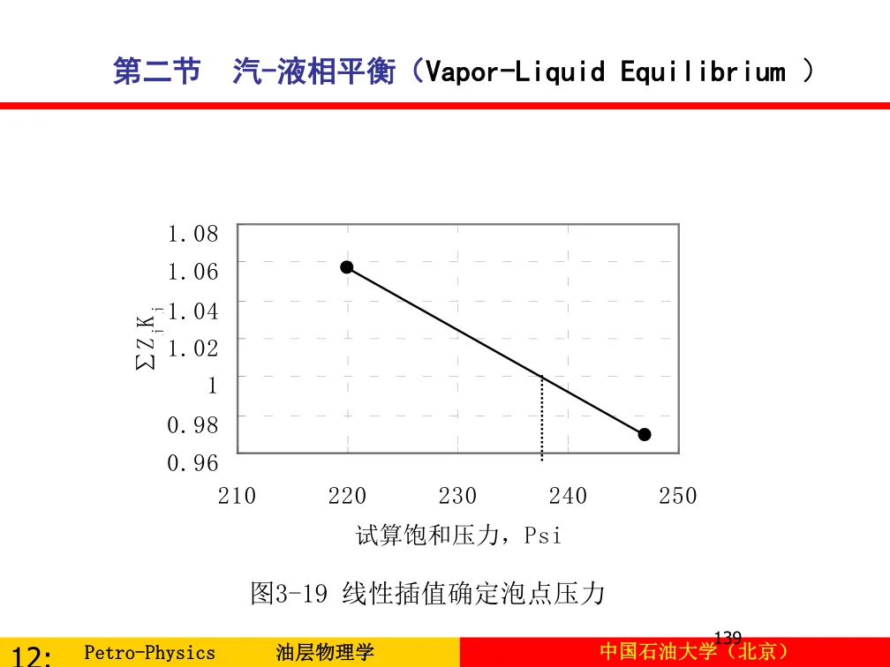
图上有什么：纵轴 ΣZjKj（0.96~1.08）对横轴试算饱和压力（210~250 Psi）的关系点，直线内插到 ΣZjKj=1。
怎么读：两次试算得两个点，连线与 ΣZjKj=1 水平线的交点横坐标即泡点压力。
考点与易错：计算题最后一步的规范表述："由两次试算结果线性内插"；ΣZjKj=1 是泡点判据、Σ(zj/Kj)=1 是露点判据，别写反。
35. 表3-7 露点压力计算表（例3-6）P141
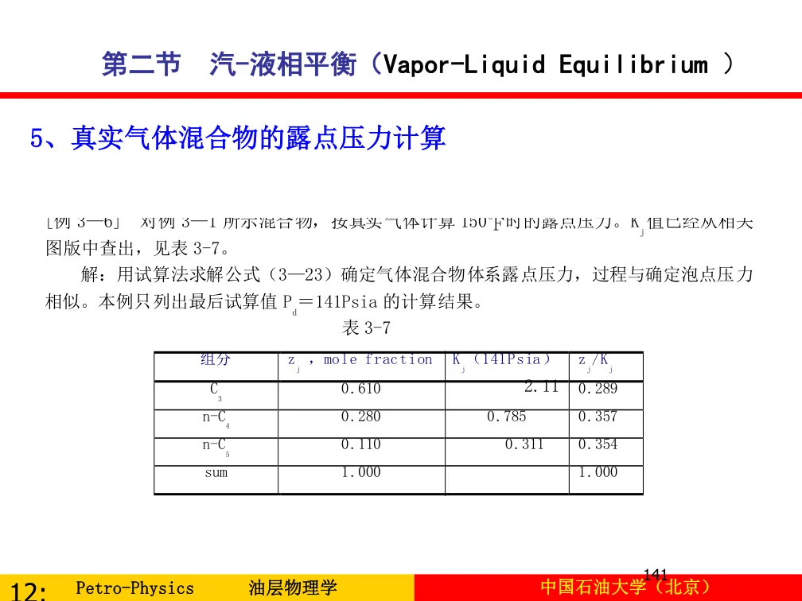
图上有什么：150℉、试算值 Pd=141 Psia 下的 Kj（2.11/0.785/0.311）与 zj/Kj（0.289/0.357/0.354），合计 Σ=1.000。
怎么读：露点试算只列最终成立的方案；判据 Σ(zj/Kj)=1 达成即 Pd=141 Psia。
考点与易错：同一混合物 Pb>Pd 的关系在真实体系里依然成立；露点时体系几乎全是气（ng=1）。
36. 图3-20 平衡比 Kj–P 等温曲线族P143–144重点
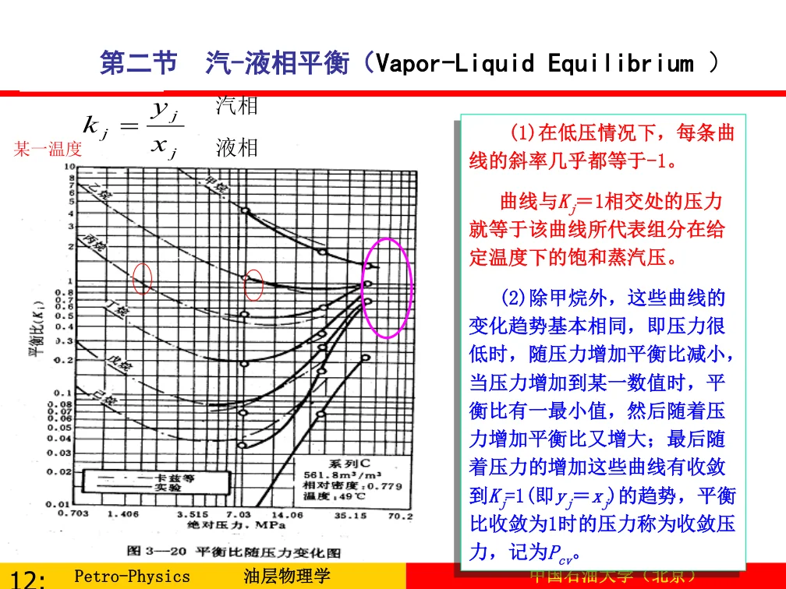
图上有什么：lg K–lg P 等温曲线族，图上分汽相/液相区，标 Kj=yj/xj 与"某一温度"；P144 复用同图讲收敛压力。
怎么读：每条曲线三段特征：①低压段斜率≈−1（Kj≈Pvj/P），与 Kj=1 的交点=该组分在此温度下的饱和蒸汽压；②中压段出现最小值（甲烷除外）；③高压段回升并趋于收敛到 Kj=1——收敛压力 Pcv。温度小于体系临界温度时实验做不出 K=1 点（先经泡/露点变单相），按趋势外推到 Kj=1 得"视收敛压力"，工程上统称收敛压力。
考点与易错："收敛压力三句话"（定义/与临界压力的关系：T=Tc 时即为临界压力/视收敛压力）是简答高频；甲烷无最小值是判断题坑。
37. 图3-22 NGAA K–P 图版示例（C₃，收敛压力 35 MPa）P145
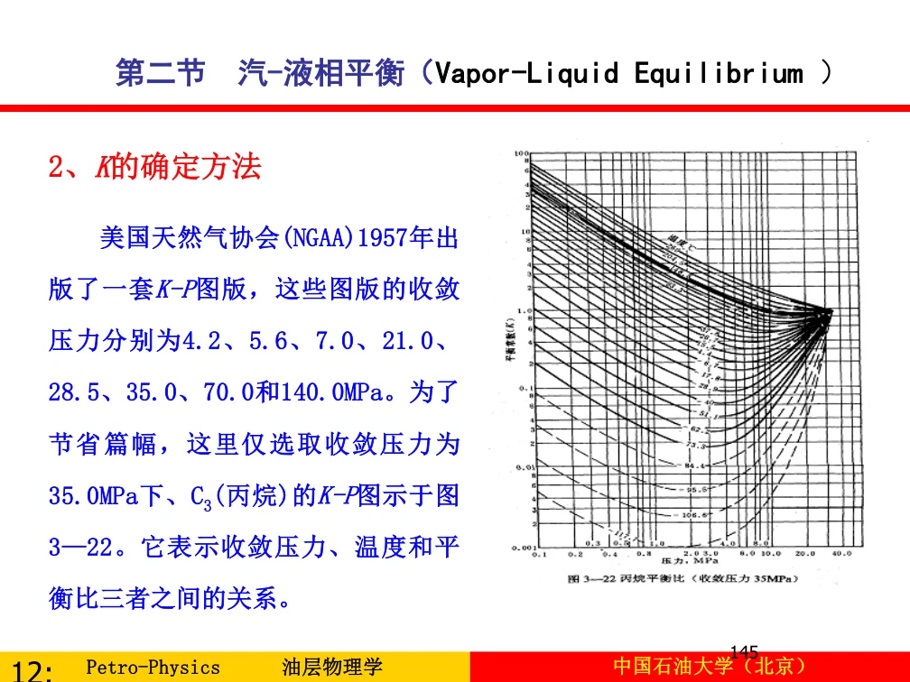
图上有什么：美国天然气协会 NGAA（1957）K–P 图版之一：收敛压力 35.0 MPa 下丙烷的 K–P 等温线族（右侧竖幅图版）。
怎么读：Kj=f(P，T，收敛压力)——查图三要素齐了才能读数；收敛压力全套分 8 档：4.2/5.6/7.0/21.0/28.5/35.0/70.0/140.0 MPa。
考点与易错：收敛压力不同→图版不同：组成越重（临界压力越低）选低收敛压力图版；考试给"组成已知"时按体系临界压力就近选档。
38. 闪蒸（接触脱气）PVT 筒降压序列图P148
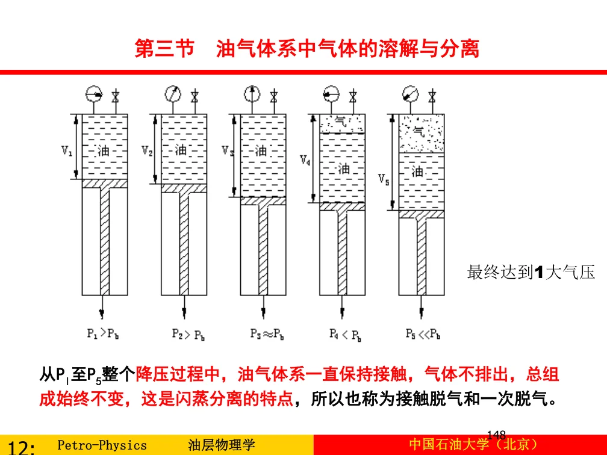
图上有什么：五只 PVT 筒示意：P₁>Pb → P₂>Pb → P₃≈Pb → P₄<Pb → P₅≪Pb（最终 1 大气压），气液始终共存筒内，体积 V₁→V₅ 依次标注。
怎么读：P₁→P₅ 全程油气保持接触、气体不排出、总组成不变——这就是闪蒸分离（=接触脱气=一次脱气）的定义特征。
考点与易错：三个名称指同一过程；判别口诀"组成变不变"：闪蒸不变，多级/微分都变。
39. 图3-25 接触脱气过程 P–V 关系图P149重点
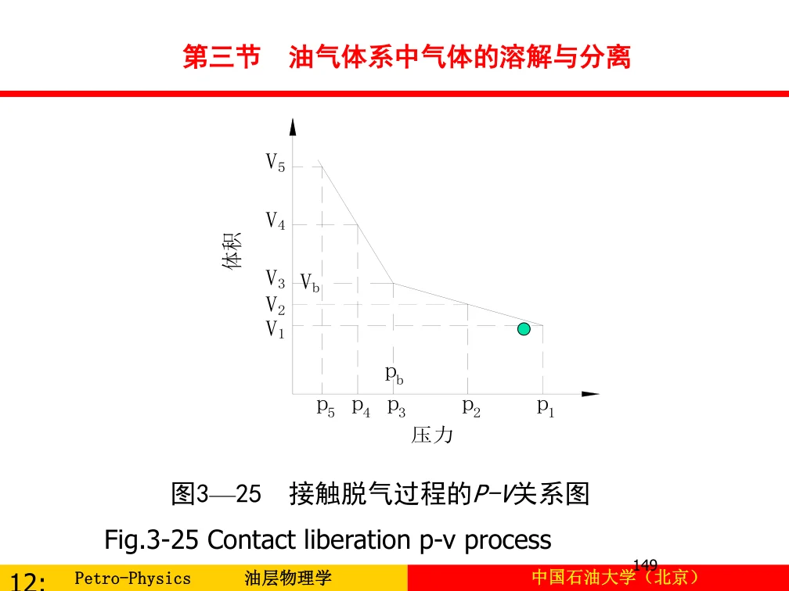
图上有什么：P–V 曲线，标出分级点 p₁~p₅、V₁~V₅ 与泡点 pb（对应体积 Vb）。
怎么读：曲线在 pb 处转折：上方（高压段）陡——液相压缩性小；下方（两相段）缓——气体膨胀主导。折点即泡点压力。
考点与易错："泡点压力怎么测"标准答案=PVT 筒恒组成膨胀实验中 P–V 关系折点（配合目测第一颗气泡）；这是实验课+简答双考点。
40. 图3-27 矿场多级脱气流程图（a 二级 / b 三级）P151重点
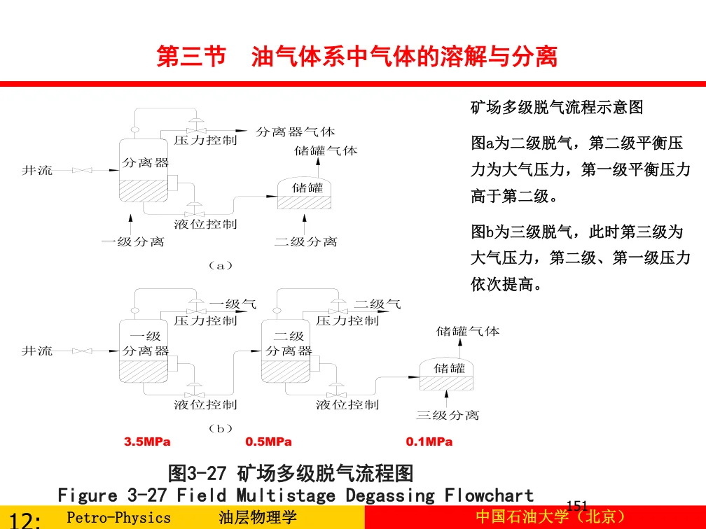
图上有什么：两幅流程图：(a) 二级脱气——一级分离器（3.5 MPa）→二级（0.5 MPa）→储罐（0.1 MPa）；(b) 三级脱气——三个分离器逐级降压后进储罐；每级配"压力控制＋液位控制"，各级分气分别引出（一级气、二级气、储罐气）。
怎么读：沿流程压力逐级降低、每级气液瞬时平衡后气走管线液走下级；矿场一般不超过三级。
考点与易错：多级脱气的好处=及时排走气体、减少轻质油被携带→地面获得的油多、气量少、气相对密度小；代价=设备多。典型压力 3.5/0.5/0.1 MPa 在附录 B。
41. 一次脱气与多级脱气对比表P153重点
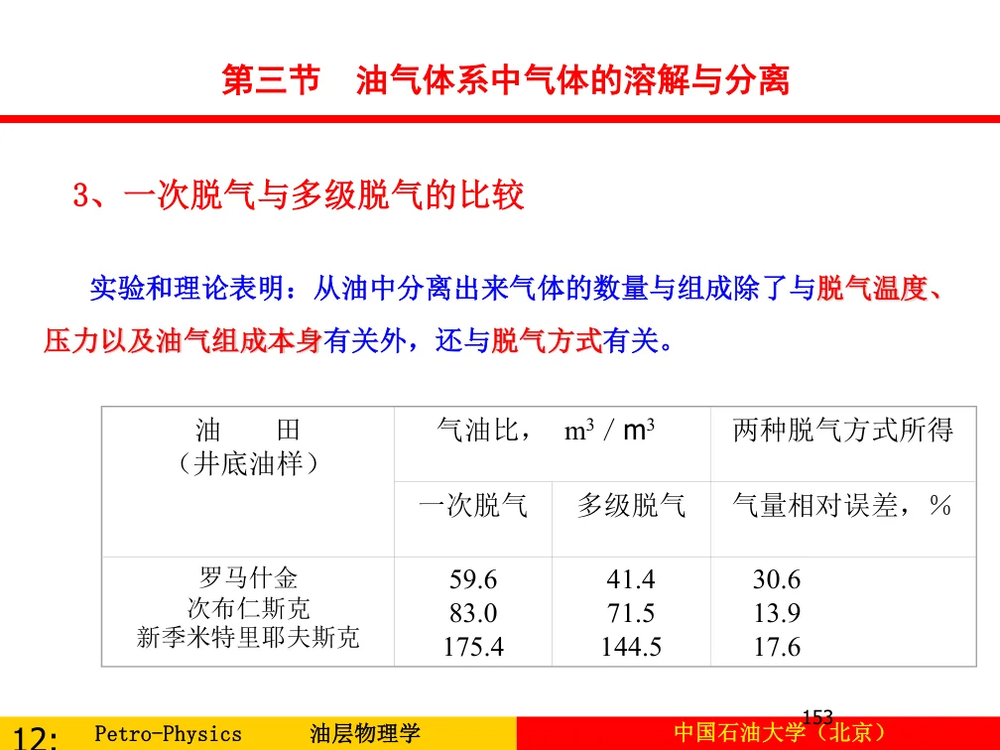
图上有什么：三个井底油样两种脱气方式的气油比对比：罗马什金 59.6 vs 41.4（相对误差 30.6%）；次布仁斯克 83.0 vs 71.5（13.9%）；新季米特里耶夫斯克 175.4 vs 144.5（17.6%），单位 m³/m³。
怎么读：一次脱气气油比一律更高（高 13.9%~30.6%）——因为油气始终接触，按平衡比重烃也进入气相，气量大且"重"（轻质油被带走）。
考点与易错：结论+机理（用 Kj=yj/xj 解释，P154 英文页原话）都考；矿场采用多级脱气的原因即此。
42. 图3-28 微分脱气过程示意图（a/b/c）P155
图上有什么：三个 PVT 筒状态：(a) 液体处于饱和状态 →(b) 退泵降压、气液共存 →(c) 进泵排出气体、剩余液体处于新的饱和压力；各筒标注液体/气体/摩尔数。
怎么读：每降一小级立刻把气体排走再继续降压——气体组成与液相组成时刻在变，这就是微分分离（差异分离）。
考点与易错：与闪蒸的对照（PVT 实验两种方式）：闪蒸=组成不变、气液始终接触；微分=每级排气、组成不断变化。地层内衰竭式开采近似微分脱气，地面分离器近似闪蒸。
43. 溶解度与温度关系曲线（Rs–P 等温线族）P157
图上有什么：不同温度下的溶解气油比–压力曲线族（图内标注不在文本层，据正文与教材通用形态）。
怎么读：温度↑→溶解气量↓，且压力越高时这种降低越显著；原因：温度↑使烃类气体的饱和蒸汽压↑，溶解能力下降。
考点与易错：Rs 影响因素四件套：压力（主导，Rs=αP）、温度、气体性质、原油性质——后两条见下面两图。
44. 气体相对溶解度倍数表P158
图上有什么：以甲烷溶解度=1 的倍数表：乙烷 5、丙烷 20、CO₂ 3.5、N₂ 0.25。
怎么读：溶解度排序：丙烷＞乙烷＞CO₂＞甲烷＞N₂。
考点与易错：重烃气比甲烷易溶、氮气最难溶——解释"天然气中重烃越多、Rsi 越高"。
45. 原油性质对溶解度的影响曲线P159
图上有什么：同一天然气在不同密度原油中的溶解度曲线族（据正文推断的对比图）。
怎么读：同样组成的天然气，在轻质油中的溶解度大于在重质油中的溶解度——轻质油轻烃组分多、极性胶质沥青质少。
考点与易错：轻质油藏 Rsi 高、Bo 大的根源（对照 P176 数据表：Rsi=580 的北海油田 Bo=1.78）。
46. 溶解曲线与脱气曲线的关系图（①②③三条线）P160重点
图上有什么：一张图三条曲线：①接触脱气曲线与接触溶解曲线（完全重合为一条）；②微分溶解曲线；③微分脱气曲线（②③不重合）；图上标注"微分分离、微分溶解、溶解气油比、生产气油比、闪蒸分离=接触溶解"。
怎么读：接触（闪蒸）过程可逆→两线重合；微分（差异）过程每级排气/进气、组成在变→不可逆→两线分离；低压段差别大、高压段差别小。
考点与易错："何时重合、何时不重合"就是附录 C 第 11 条的图形版；配合下面 47 条一起答。
47. 甲烷 vs 戊烷的微分溶解/脱气对比曲线P161–162
图上有什么：两张同构图：每张两条曲线（差异分离 differential liberation 与差异溶解 differential dissolution），分别画甲烷和戊烷。
怎么读：差异与组分挥发性有关：饱和蒸汽压大的甲烷两条曲线较接近；饱和蒸汽压小的戊烷两条曲线相差很大，且低压部分相差大、高压部分相差小（与图 46 的规律一致）。
考点与易错：答"为什么"的链条：饱和蒸汽压差→组分在气液间分配倾向不同→微分过程不可逆程度不同。
第四章 储层流体的高压物理性质（P164–204）
本章所有曲线图几乎都以 Pb 为分界点读图——先把"分水岭"画在脑中，再看每条曲线在两段的走向。
48. 溶解气油比 Rs–P 关系曲线P169重点
图上有什么：典型未饱和油藏的 Rs–P 曲线：P<Pb 段随压力升高 Rs 增大；P=Pb 处达最大值 Rsi（气体全部溶解）；P>Pb 段水平直线不变。
怎么读：水平段的含义——油已"吃饱"，压力再高也没有多余的气可溶；所以 P≥Pb 区间 Rs≡Rsi（原始溶解气油比）。
考点与易错：定义 Rsi=Vg/Vos（标 m³/m³，Vos 为脱气后地面油体积）；易错点：以为 P>Pb 后 Rs 继续增大——不对，是水平线。
49. 图4-3 地层油 Bo、Bt 与 P 的关系（含 Bt 曲线图）P171–172、P174重点
图上有什么：同一张图两条曲线：Bo 在 Pb 处最大（Bob）——P<Pb 段随 P↑ 而↑（溶解气越多体积越膨胀）、P>Pb 段随 P↑ 而↓（弹性压缩），原始压力 Pi 处的值记 Boi；Bt 只在 P<Pb 存在，随 P 降低一直增大，到 P=0.1 MPa 时 Bt=1+Rsi（最大）；图上另有"油层条件下不脱气 / 如果脱气"两条线的对比标注。
怎么读：以 Pb 为分水岭，两段机理完全不同：左侧"溶气膨胀"主导、右侧"压缩"主导；Bt=Bo+(Rsi−Rs)Bg 把析出气的地下体积也折算进来。
考点与易错：①Bo 最大值在 Pb 处（不是原始压力处）；②Bt 仅 P<Pb 存在，P≥Pb 时 Bt=Bob（老师批注"Where is Bt??"就是考这个）；③P=0.1 MPa 时 Bt=1+Rsi 必背。
50. 我国与国外油田 Rsi、Bo、Co 对比表P176
图上有什么：左右两表：我国 6 油田（Rsi 7.0~70.1 标m³/m³、Bo 1.09~1.22、Co (7.3~10.35)×10⁻⁴ MPa⁻¹），国外 6 油田（Rsi 1.1~580、Bo 1.05~1.78）。如大庆 P 层 48.2/1.13/7.7；北海埃克菲斯克 580/1.78；伊朗阿加贾里 190/1.42。
怎么读：Rsi 与 Bo 同向：溶解气越多，地下膨胀越厉害；我国陆相油田 Rsi 普遍偏低、Bo 多在 1.1 左右。
考点与易错：数据印象题（附录 B 末条）；Co 数量级 10⁻⁴ MPa⁻¹ 别记成 10⁻³。
51. 图4-5 原油粘度与温度关系（半对数）P178重点
图上有什么：半对数坐标：纵轴对数粘度 0.1~10000 mPa·s，横轴温度 0~300 ℃；三条曲线：水、相对密度 0.8762 原油、相对密度 0.9861 原油。
怎么读：三条曲线都随温度单调下降（半对数坐标下近直线）；密度越大（0.9861 那条）曲线越高、粘度越大；有的原油升温 10℃ 粘度约降一半（对温度极敏感）。
考点与易错："粘度对温度敏感"是稠油热采的物性依据；说粘度必须带温度（呼应第一章 P39）。
52. 压力对地层原油粘度的影响曲线（μ–P）P179重点
图上有什么：μ–P 曲线以 Pb 为界分两段（图内标注不可见，据正文"以饱和压力为界，不同区间段影响不同"）。
怎么读：P>Pb 段：降压→弹性膨胀→粘度↓；P<Pb 段：降压→脱气→液相变"重"→粘度随压力降低反而↑。即 μ 在 Pb 处取得最小值，曲线呈"V 字"。
考点与易错："粘度最小点在 Pb处"是判断题陷阱；与 Bo 在 Pb 处最大、Rs 在 Pb 处最大放一起对照记忆。
53. 典型未饱和油藏高压物性参数随 P 变化汇总图P180重点
图上有什么：图4-7"全家福"：五条曲线——原油相对密度 ρo、体积系数 Bo、气油比 GOR（即 Rs）、气体相对密度 ρg、原油粘度 μo——都以图中标 A 的虚线（泡点）为转折；老师批注"Where is Bt??"。
怎么读：逐条复述规律，全部以 Pb 为界；"Where is Bt??"的答案——P≥Pb 区间没有独立的两相体积系数（Bt=Bob），所以图上 Pb 右侧找不到 Bt 曲线。
考点与易错：综合分析题高发区：给你一条无标注曲线+压力轴，判断它是哪个参数——抓"在 Pb 处的形态"（最大/最小/水平/转折）逐一排除。
54. 表1-12 地层中常见离子的化合当量表P184重点
图上有什么：双栏离子表（阳离子/阴离子各 8 种）及化合当量：Ca²⁺ 20、Mg²⁺ 12.2、Na⁺ 23、Cl⁻ 35.3、SO₄²⁻ 48、HCO₃⁻ 61、CO₃²⁻ 30 等；附算例：Cl⁻ 7896 mg/L ÷ 35.3 = 225.6 毫克当量/升。
怎么读：化合当量=原子量/离子价数；毫克当量浓度=离子浓度(mg/L)÷化合当量。
考点与易错：这是苏林判别的前置计算；老师标"重要！！！"——考试必须先换算成毫克当量浓度再判水型。
55. 表1-14 苏林水型判别表P187重点
图上有什么：四行判别表（成因系数→水型→环境）：
| 当量比条件 | 水型 | 环境 |
|---|---|---|
| (Na⁺−Cl⁻)/SO₄²⁻ < 1 | 硫酸钠型 Na₂SO₄ | 大陆冲刷环境（地面水） |
| Na⁺/Cl⁻ > 1 且 (Na⁺−Cl⁻)/SO₄²⁻ > 1 | 重碳酸钠型 NaHCO₃ | 大陆沉积环境（含油良好标志） |
| (Na⁺−Cl⁻)/Mg²⁺ < 1 | 氯化镁型 MgCl₂ | 海洋沉积环境（海水） |
| Na⁺/Cl⁻ < 1 且 (Na⁺−Cl⁻)/Mg²⁺ > 1 | 氯化钙型 CaCl₂ | 深层封闭环境（气出水/含油气良好） |
怎么读：两步走：先用 Na⁺/Cl⁻ 当量比分两大支（>1 走硫酸钠/重碳酸钠支，<1 走氯化镁/氯化钙支），再算成因系数定具体水型。
考点与易错：判别表+四种水型的环境意义都是简答原文；计算题必须用毫克当量浓度（附录 C 第 12 条的坑）；例题 Example 1-1 与作业 HW1.23 老师点名。
56. 表1-13 我国和外国油田地层水化学成分与水型表P188
图上有什么：7 个油田地层水全分析表（10 列）：总矿化度 178~95313 mg/L、六大离子浓度、水型。如胜利 M 层 17960 mg/L→CaCl₂；任丘 Pz 层 178 mg/L→MgCl₂；孤岛 M 层 3228→NaHCO₃；东德克萨斯 64725→CaCl₂；加奇萨兰 95313→CaCl₂；凡尔马斯 5643→NaHCO₃。
怎么读：横看单油田离子构成，纵看水型与矿化度的关系：深层封闭环境的 CaCl₂ 型水往往矿化度最高。
考点与易错：结合表 55 练"给分析数据判水型"（老师布置的 Example 1-1、HW1.23 就是这种题）。
57. 天然气在地层水中的溶解度图版P190
图上有什么：溶解度图版（页面右半大幅）＋校正关系 Rs′=Rs×C（C 为含盐校正系数）。
怎么读：天然气在水中的溶解度数量级远小于在油中；压力↑溶解度↑，矿化度↑溶解度↓。
考点与易错：油 vs 水的溶气能力对比是选择题常客（水难溶气）。
58. 图4-9 地层水压缩系数 Cw 与压力、温度、溶气量的关系P192
图上有什么：Cw 曲线族（横贯整页的宽幅图版）；校正关系 Cw′=Cw×C（溶气校正）。
怎么读：Cw 数量级约 (3.7~5)×10⁻⁴ MPa⁻¹；溶解气使 Cw 增大（查校正曲线）。
考点与易错："计算油藏弹性能量时，地层水的弹性相当重要"——水压驱动的物性依据；与 Cg（大得多）、Co（同量级偏大）比大小。
59. 地层水体积系数与温度、压力关系图P194
图上有什么：Bw 随 T、P（及溶气量）变化的关系图（族）。
怎么读：Bw 随温度↑而↑、随压力↑而↓；数值仅 1.0~1.07 左右——远小于 Bo。
考点与易错：别把"Bw 随温度增大"与"Bo"的规律弄混：Bo 随温度总体也是变化但主要受溶气控制；Bw 的两个方向（T↑、P↓）是 PPT 原文结论。
60. 地层水粘度图P195
图上有什么：μw–T 曲线（不同矿化度/压力条件）。
怎么读：三条结论：温度↑粘度大大降低；压力影响甚微；矿化度↑粘度↑。
考点与易错：与原油粘度对照：原油在 P<Pb 段对压力敏感（脱气变稠），水对压力几乎不敏感。
61. 图4-14 地层油高压物性分析流程示意图P197
图上有什么：多级框图：流体取样（分地面取样法/井下取样法两支）→ 样品质检（气油比检验、流体组分分析、分离器液体收缩率测定）→ PVT 实验（P–V 关系与泡点压力、接触脱气、差异脱气、粘度测定）→ 试井和取样数据评价。
怎么读：两条取样路线目的不同：井下样（保持地层条件）测泡点压力、压缩系数等；地面样配分离器数据求原始气油比、体积系数、密度。
考点与易错：流程题/实验课考点；与第三章"接触脱气、差异脱气"术语一一对应。
附录 E · 课件图表逐图详解（5-7章课件、8-10章课件 · 第五～十章）FIGURE-BY-FIGURE GUIDE（第 5～10 章 · 共 121 条）
体例与附录 D 相同：每条按 图上有什么 → 怎么读 → 考点与易错 三段展开，并内嵌课件原页截图（点击图片全屏放大、Esc 关闭）。页码为对应课件内的页码——第五章～第七章在 5-7章课件，第八章～第十章在 8-10章课件。表中条目已跳过纯装饰页（封面、章节结束页、纯照片页）；少数纯文字/纯公式页因含关键式或英文页仍予保留，并在条目内注明"（该页非图表）"。
第五章 储层多孔介质的孔隙性（5-7章课件 P2–76）
本章图表以"粒度/孔径分布曲线、镜下孔隙示意图、孔隙度影响因素曲线、理想圆球排列"为主，考试考"读图判分选与粗细""背三个理想孔隙度数值"。（本组 21 条）
62. 图 5-1 粒度组成分布曲线 · 图 5-2 粒度组成累计分布曲线（含筛析数据表）P7重点
图上有什么：全页分四块：左上筛析数据表（列为目、筛孔直径 mm、筛上质量 g、平均粒径 d̄ mm、质量百分比 %、累计百分比 %，合计 85.591 g）；右上红色直方图（横坐标平均粒度 mm 从 1.074 递减到 0.081，纵坐标质量百分比 %）；左下 图5—1 粒度组成分布曲线（横坐标颗粒直径 0.01~10 mm 对数刻度，纵坐标质量百分比 % 0~45）；右下 图5—2 粒度组成累计分布曲线（横坐标同前，纵坐标累计质量百分比 % 0~120）。
怎么读：按"表→直方图→分布曲线→累计曲线"的顺序读。分布曲线呈单峰，峰位在 0.345 mm 附近、约 42%，说明岩石以该粒级为主；累计曲线上取 50% 对应横坐标即中值粒径（图中红色箭头由中值位置下引到横轴读数）。
考点与易错：必背判读口诀——尖峰越高粒度越均匀、尖峰越靠右颗粒越粗；横坐标是对数刻度，不能按等间距读；累计曲线用于求中值粒径 Md=P50，两图分别对应表 5-1、5-2 两组数据，注意区分"质量百分比"与"累计百分比"纵坐标。
63. 图 5-8 胶结类型（根据刘宝珺，1980）P16
图上有什么：四列表格式框图：支撑性｜连接方式｜胶结类型｜颗粒接触性质。左列"杂基支撑"对应基底式（漂浮状，颗粒不接触）；"颗粒支撑"对应孔隙式（点接触）、接触式（线接触）、无胶结物式（凹凸接触、缝合接触）。框外左箭头标"杂基减少"，右箭头标"压实作用强度增大及压溶"。
怎么读：沿左右两个箭头对读一条演化链：杂基（胶结物）减少、压实作用增强 → 支撑方式由杂基支撑变为颗粒支撑 → 胶结类型由基底式→孔隙式→接触式→无胶结物式 → 颗粒接触由点接触→线接触→凹凸接触→缝合接触。
考点与易错：常考"胶结类型与颗粒接触关系的配对"；易错是把基底胶结与孔隙胶结的顺序记反——基底式胶结物含量最高、颗粒互不接触、孔隙度与渗透率最差；接触式胶结物最少。
64. 岩石孔隙系统示意图（孔隙与喉道）P19重点
图上有什么：右侧为本页主图"岩石孔隙系统示意图"，图下带图例：1 岩石颗粒（橙色不规则颗粒）、2 胶结物（斜线填充条块）、3 孔隙系统（黑色区域）。左侧为文字：岩石孔隙系统由孔隙和喉道两部分组成。
怎么读：沿黑色区域看连通形态——颗粒之间宽大的膨大部分是孔隙，把相邻孔隙连通的狭窄通道是喉道；左侧结论句要点：孔隙是流体储存于岩石中的基本储集空间，喉道的粗、细特征、分布及其几何形状是影响渗透能力的主要因素。
考点与易错：全章枢纽概念，必考"孔隙储集、喉道渗流"这一分工；答影响渗透率的因素应落到喉道；不要把"孔隙系统"只理解成孔隙，喉道是系统的一半。
65. 图 5-9 岩石孔隙类型（据 Meinzer，1942）P21重点
图上有什么：六幅黑白线条示意图 a~f，旁注"白孔""黑孔"（白色区域代表孔隙）。a 分选好、孔隙度高的沉积物中的孔隙；b 分选差、孔隙度低的沉积物中的孔隙；c 砾石沉积物，砾石本身也是多孔的，整个沉积物孔隙度高；d 沉积物分选较好，但颗粒间有胶结物沉积，孔隙度低；e 由溶蚀作用形成的多孔岩石；f 由断裂形成的有胶结物的多孔岩石。
怎么读：逐幅用三把尺子判断——分选性（a 好、b 差）、胶结物充填（d 低）、次生成因（e 溶蚀、f 断裂）；结论是孔隙度高低由分选、胶结物含量与次生改造共同决定，a/c/e 高、b/d 低。
考点与易错：常考"哪一幅孔隙度高、为什么"；最易错的是 c——它的高孔隙度来自砾石内部的粒内孔，而非分选好，判断时要说明孔的位置。
66. 图 5-10 粒间孔隙（intergranular pore）P23重点
图上有什么：右侧为圆形镜下照片（黑孔），颗粒呈亮色骨架、粒间黑色区域为孔隙，引出线标注"颗粒""粒间孔隙"；左侧为行业标准的三级细分文字：1 粒间孔、1.1 原生粒间孔（孔隙中基本没有或少量填隙物）、1.2 剩余粒间孔（因碎屑颗粒压实变形和部分填隙，文字有截断）、1.3 溶蚀粒间孔。
怎么读：照片中"由颗粒围成的黑色区域"即粒间孔；结合 P24 正文，粒间孔是砂岩中最主要、最普遍的孔隙，其大小和形态由砂粒粒度、分选性、圆球度、接触方位、填充方式和压实程度决定，分布与沉积环境直接相关并随成岩后作用变化。
考点与易错：必背数字——以粒间孔为主的砂岩储集层孔隙大、喉道粗、连通性好，一般 φ>20%、K>100×10⁻³μm²；易错点是把"原生/剩余/溶蚀粒间孔"当成三种独立孔隙类型，它们都是粒间孔内部的次一级划分。
67. 粒内孔隙（原生、溶蚀与铸模孔）P25
图上有什么：右上为 Meinzner 图版中的 c 图（"c—砾石组成的沉积物，砾石本身也是多孔"），颗粒内部密布小点表示粒内孔；下方文字为粒内孔的三级细分：2.1 原生粒内孔（在母岩中形成，如喷发岩岩屑具有的气孔）、2.2 溶蚀粒内孔（颗粒内部被溶蚀形成，常呈蜂窝或串珠状）、2.3 铸模孔（颗粒完全或几乎完全被溶蚀，并保留着原来颗粒形态的孔隙空间）。
怎么读：先看图中"颗粒内部的点状孔"位置特征，再按成因链条读文字：原生（母岩带来）→溶蚀（内部溶解，蜂窝/串珠）→铸模（溶蚀彻底但保留外形），溶蚀强度依次增强。
考点与易错：高频易错是位置——粒内孔在颗粒内部、粒间孔由颗粒围成；"铸模孔"关键词是"保留原来颗粒形态"，答定义必须写出这一点。
68. 填隙物内孔 a）杂基内微孔隙——晶间孔P27
图上有什么：右侧为镜下示意图（半圆形视域，斜纹填充表示杂基），红色箭头从标题"晶间孔"指向图中杂基内部的细小孔隙，右上标"黑孔"；左侧文字说明杂基内微孔隙的成因、矿物种类与尺度。
怎么读：正文要点：杂基内微孔隙指杂基沉积物在风化时收缩形成的孔隙及粘土矿物重结晶的晶间孔隙，高岭土、绿泥石、云母及碳酸盐泥杂基均有此类孔隙；极为细小、宽度一般小于 0.2 μm，在高倍显微镜下才能清晰辨别。
考点与易错：常考"孔隙量多为何产能低"——该种孔隙总量虽然很多（有时能占岩石孔隙 50% 以上），但渗透能力极差，因喉道极细；0.2 μm 与 50% 两个数字必须记准，并注意它几乎在所有砂岩中都有分布。
69. 图 5-11 几种孔隙镜下示意图（晶体次生晶间孔）P28
图上有什么：右侧为镜下示意图，图注为"图5—11 几种孔隙镜下示意图（据王允诚图综合，1984）1—杂基内微孔隙 2—晶间孔隙"；左侧文字标题为"3）填充物内孔 b）晶体次生晶间孔"，红色箭头指向图中晶间孔区域。
怎么读：正文给因果链：该类孔隙主要由石英结晶次生加大充填原生孔隙后的残留孔隙 → 石英次生加大后明显降低孔隙空间，使孔隙变小、喉道变窄 → 造成岩石的渗透能力下降。
考点与易错：简答题常考"石英次生加大为什么降低渗透率"，答案必须落到"喉道变窄"；易错是与 P27 的杂基内微孔混为一谈——前者在硅质胶结物（石英）内，后者在杂基（粘土等）内。
70. 缝状孔隙 a）纹理及层理缝P30
图上有什么：左侧为镜下示意图（半圆形视域）：上部为斜纹条带与颗粒层相间的层理/纹理构造，中部为长条状排列的颗粒，红色箭头从标题"a）纹理及层理缝"指向层理之间的微缝隙。
怎么读：正文：在具有层理和纹理构造的砂岩中，由于不同砂层的岩性或颗粒排列方位的差异，沿纹理或层理常有微缝隙；结论句是"该类孔隙使岩石的渗透具有方向性"。
考点与易错：考"渗透各向异性"的成因时要答层理缝；易错是与 P31 的裂缝孔隙（地应力成因、可闭合）混答——层理缝是沉积成因、不随地应力闭合。
71. 图 5-12 应力裂缝孔隙（b）裂缝孔隙 fracture pore）P31重点
图上有什么：左侧镜下示意图中下方为网状微裂缝（标注"裂缝孔隙"，红色箭头由文字指向它）；右上角两张岩心/岩石照片显示贯穿性裂缝（其一可见裂缝面上矿物充填与黑色缝面）。
怎么读：正文给六条关键信息：微裂缝呈细小片状、缝面弯曲、绕过颗粒边界，排列方式受地应力影响；裂缝宽度一般平行于最小地应力方向；砂岩中缝宽为零点几微米到几十微米；裂缝孔隙在岩石总孔隙中所占份额很少（一般<5%），但能极大改善渗透性；地应力显著变化（沿裂缝垂直方向变大）时裂缝闭合、地层渗透能力急剧下降。
考点与易错：高频分析题：裂缝"孔隙度贡献小、渗透率贡献大"；以及应力敏感性——有效应力增大→裂缝闭合→渗透率急剧下降（与 P49 呼应）；不要错答成裂缝增大了总孔隙度。
72. 图 5-13 孔隙体积分布曲线P34
图上有什么：左下为分布曲线：纵坐标"孔隙大小分布（ΔVi/Vp）%" 0~40，横坐标"孔隙半径(r) μm"，刻度为 1.2、2.8、6.7、9.0、13.5、18.0、21.6、27.0、54.0（非等间距）；右侧文字给出"岩石孔隙组成""孔隙体积累积分布曲线"等定义。
怎么读：曲线为高窄单峰，峰位在 13.5 μm 附近（约 33%），右侧在 27~54 μm 有一段低而宽的平台（约 5%）；峰越高窄说明孔隙大小越集中、分选越好，峰值半径代表主要孔径。
考点与易错：与粒度组成分布曲线判读思路完全相同（峰值→主孔径，峰宽→分选）；易错是把横坐标当等间距读，以及把纵坐标 ΔVi/Vp 误写成绝对孔隙体积。
73. 图 5-14 孔隙体积累积分布曲线P35
图上有什么：纵坐标"孔隙大小累积（ΣΔVi/Vp）%" 0~100，横坐标"孔隙半径(r) μm"，刻度与图5-13 相同（1.2、2.8、6.7、9.0、13.5、18.0、21.6、27.0、54.0）；曲线自左下方陡升，在 27 μm 附近趋于平缓后以虚线延伸至 54 μm。
怎么读：先看陡升段（9~18 μm 区间贡献了大部分孔隙体积），再看尾部平台（大孔虽大但体积份额很小）；累积曲线取 50% 对应半径即中值孔喉半径。
考点与易错：常与毛管压力曲线对照考（本章未展开，进入后续章节）；口诀"分布曲线看峰值、累积曲线看中值"；易错是把累积曲线当成分布曲线去读峰值。
74. 表 5-9 砂岩储层按孔隙度分级P46重点
图上有什么：两列表格：左列"孔隙度%"、右列"评价"——25~20 极好｜20~15 好｜15~10 中等｜10~5 差｜5~0 无价值；表上方三句正文：砂岩储层的孔隙度介于 5%~25%，碳酸盐岩基质的孔隙度一般小于 5%，一般认为孔隙度小于 5% 的砂岩储层没有开采价值。
怎么读：倒着记更省力：5% 无价值→10% 差→15% 中等→20% 好→25% 极好；再用"砂岩 5%~25%、碳酸盐岩基质<5%"给两端定界。
考点与易错：分级界限是必背数字（简答、判断、填空都出）；易错结论——碳酸盐岩基质孔隙度小于 5% 并不等于没有产能，其裂缝与溶洞可显著改善储渗（承接第二节）。
75. Porosity of dual-porosity medium rock（双重介质岩石孔隙度）P48重点
图上有什么：（该页非图表）英文页（中国石油大学校徽）：Bulk volume of rock = fracture volume + matrix volume；Total pore volume = fracture volume + initial pore volume；Total porosity = fracture porosity + initial porosity；公式 φt=φp+φf；红色横条 They all are based on bulk volume of rock。
怎么读：先把三个体积分清楚（岩石总体积、裂缝体积、基质体积），再写孔隙体积（裂缝体积＋原生孔隙体积），最后得总孔隙度＝基质（原生）孔隙度＋裂缝（次生）孔隙度；中文对应页 P47 给的是双重介质示意图（基质体积 1−φ、孔隙度 φf 与 φp）。
考点与易错：必考公式 φt=φp+φf 与红条那句话——"都以岩石总体积为基准"，不能把裂缝孔隙度按裂缝体积或孔隙体积为基准相加；建议本页以文字要点收录（公式已进公式表）。
76. 裂缝孔隙度的定量界限与应力敏感性P49重点
图上有什么：（该页非图表）英文页，虚线框内三行判据：φt<10%，φf<0.1φt；φt>10%，φf<0.04φt；Only when φt<5%，φf is considered。正文英文论述：多数情况下裂缝孔隙度小于基质孔隙度，但对致密压实岩石（φt<5%）裂缝对储集特别是油气渗流意义重大；下方红框为中文补充。
怎么读：读两条线和一个阈值：φt=10% 是 φf 上限从 0.1φt 降到 0.04φt 的分界，φt=5% 是"是否单独考虑 φf"的阈值；红框结论是 φf 受地层有效应力影响显著——有效应力增大，φf 变小，导致地层渗透性变差。
考点与易错：数字易混（0.1φt 与 0.04φt 对应的分界线是 10% 而不是 5%）；"有效应力↑→φf↓→渗透性变差"是应力敏感类题目的标准答句；建议本页以文字要点收录。
77. 图 5-24 砂岩的孔隙度与埋深的关系（据 Mayer-Curr，1978）P54重点
图上有什么：纵坐标"最大埋藏深度（上覆岩层厚度）m"，自 1000 向下增至 6000；横坐标"孔隙度 %" 0~40；三条曲线由左至右分布（图注小字为 ①泥质砂岩（含云母）②侏罗-白垩纪石英砂岩③第三纪石英砂岩，小字清晰度有限，据图面辨认）。
怎么读：沿深度向下读：三条曲线整体向左偏移，即孔隙度随埋深增大而降低；同一深度下不同曲线的孔隙度不同，反映岩石时代与成分（石英含量、泥质）的差异。
考点与易错：结论必背"孔隙度随埋深（压实作用）增大而减小"，机理要写足：颗粒排列更加紧密、颗粒间发生非弹性的不可逆移动→孔隙度急剧下降；到达最大紧密限度后颗粒在接触点上局部压溶、溶解矿物（如石英）在孔隙内再结晶→孔隙度继续降低，严重时孔隙消失、地层没有渗透性。
78. Factors influencing porosity（1）Grain size and packing（排列方式对孔隙度的影响）P56重点
图上有什么：页面右上绿色"Significant!"标签；右侧两幅等大圆球堆积示意图，标注"等大圆球立方体排列 φ≈47.46%"与"等大圆球斜方六面体排列 φ≈25.96%"，图题"排列方式对孔隙度的影响"；左侧为最疏松排列的推导：Vb=(2r)³=8r³，每个单元含 8 个 1/8 球（合计体积 Vs=(4/3)πr³），φ=(Vb−Vs)/Vb×100%=47.6%。
怎么读：先读推导得到孔隙度上限 47.6%，再对比右图两种排列的数值（47.46% 与 25.96%），得出该页核心结论——孔隙度由排列方式（堆积方式）决定。
考点与易错：必考计算：等径圆球立方体排列 φ=47.6%；易错在三处——Vb 要用 (2r)³（把半径当直径就全错）、单元球体积是 8 个 1/8 球而非 8 个整球、该结论是理想模型（真实岩石还要看分选与充填，见 P51）。
79. 三种理想排列方式与孔隙度通式（Cubic / Hexagonal / Rhombohedral Packing）P57重点
图上有什么：三幅圆球排列剖面图及公式：A Cubic Packing，θ=90°，Vb=D³，Vg=πD³/6，φ=D³(1−π/6)/D³=0.476=47.6%；B Hexagonal Packing，θ=60°，Vb=D²·D·sinθ=0.866D³，φ=0.395=39.5%；C Rhombohedral Packing，θ=45°，Vb=D³/√2，φ=0.259=25.9%。左下方通式 φ=1−π/(6sinθ)；两条红条：Porosity is independent of grain size, dependent of packing patterns 与 Is grain size has no effect on porosity?????
怎么读：先用通式 φ=1−π/(6sinθ) 把三种 θ（90°、60°、45°）各算一遍，与图上的 47.6%、39.5%、25.9% 逐一对应，再读红条结论句：孔隙度与粒径无关、只与排列方式有关。
考点与易错：三个数值与通式必须会推（填空/计算常考）；易错是"θ 越大孔隙度越大"要记牢（90°>60°>45° 对应 47.6%>39.5%>25.9%）；另外该页红条以反问句提示——理想模型下粒径无影响，但真实岩石中颗粒越细分选越差孔隙度越小，两者不矛盾。
80. What's the porosity?（网球堆积思考题页）P58
图上有什么：（该页非图表）一张照片：地面（瓷砖）上若干网球堆成锥形，中间空隙里嵌着一颗较小的白色球；页题只有一句 What's the porosity?
怎么读：这是课堂提问页，实物演示"大颗粒堆积＋小颗粒充填"的孔隙变化：中间小球正好卡在大球之间的空隙里，对应 P51"小颗粒碎屑充填大颗粒间的孔隙和喉道，会降低孔隙度和渗透率"。
考点与易错：结合 P56–57 作答：理想等径球的孔隙度只与排列方式有关，而实际堆积中加入不同粒径颗粒（分选变差）会使孔隙度变小；易错是凭直觉答"小球填满孔隙度为零"，实际只会显著降低而不会降为零。
81. 图 5-28 蒸馏抽提法 / 图 5-29 常压干馏法实验装置P66
图上有什么：左图（蒸馏抽提法实验装置，图5—28）：自下而上为加热炉＋圆底溶剂烧瓶、中部岩心室（内放岩心）、上部冷凝管与抽提计量管的玻璃仪器流程；右图（常压干馏法实验装置，图5—29）：立式电加热筒，标注"电源线""待水""循环水"，下部为冷凝与计量管。
怎么读：两套装置都是"加热岩心→把水（和油）蒸出或抽提出→冷凝计量体积→换算饱和度"：蒸馏抽提法用溶剂抽提＋冷凝回流，常压干馏法用加热干馏＋冷凝收集，区别在介质是溶剂还是加热干馏。
考点与易错：考方法与原理，不考装置细节；注意分类归属——常压干馏法、蒸馏抽提法、色谱法属常规岩心分析，由相对渗透率曲线或毛管压力曲线确定油水饱和度属专项岩心分析（P65）；易错是把两类方法混为一类。
82. Key points（第五章小结）P75
图上有什么：（该页非图表）英文小结清单，按四块列出：Pore structure of reservoir rock（Concept of pore、(Cumulative) distribution curve of pore size、Parameters of pore structure）；Porosity of reservoir rock（Concept of porosity、Pore types (by size, effective)、Several concepts of porosity, φz>φe>φff, difference）；Factors affecting porosity、Measurement of porosity（Difference of determination results）、Representative elementary volume；Compressibility of reservoir rock（Concept of Cf、C*, physical meaning of C*、Oil volume displaced by elastic energy of formation）；Saturation of reservoir fluid in the rock。
怎么读：把这页当复习清单逐条自测：孔隙结构（概念/分布曲线/参数）→孔隙度（概念/分类/大小关系/影响因素/测量与结果差异/代表性单元体积）→压缩性（Cf 与 C* 的概念、物理意义、弹性驱油量）→流体饱和度。
考点与易错：符号对应关系要记牢：φz≈绝对（总）孔隙度、φe 有效孔隙度、φff≈流动孔隙度，C* 即综合弹性压缩系数 Ct；"Representative elementary volume（代表性单元体积）"与"测量结果的差异"是课件列出但中文页未展开的条目，建议本页以文字要点收录，避免遗漏。
第六章 储层岩石的流体渗透性（5-7章课件 P77–152）
本章图表以"达西装置、滑脱效应曲线族、K 与分选/泥质/覆压关系曲线、粘土晶层结构、敏感性评价曲线"为主，滑脱曲线与敏感性曲线是必考图。（本组 25 条）
83. 图 6—1 达西实验的实验装置P78重点
图上有什么：左侧文字：渗流（渗滤）＝流体通过孔隙介质的流动、管流、渗流现象，以及"1.1 达西实验及达西定律 1856 年达西实验"；右侧为立式装置：砂柱（长 L）上端进水、下端出水，柱侧接三根测压管标 h₁、h₂、h₃，底部为盛水容器与出水管。
怎么读：水自砂柱上端流入、下端流出形成一维渗流；三根测压管的水头差反映沿程压力降落；改变流量可得一系列（Q，ΔP）数据，作图为过原点直线。
考点与易错：1856 年、砂柱一维渗流是全章起点；注意测压管读的是水头高度而非压力读数，"渗流≠管流"；出口须保持在砂柱底面位置，避免额外背压影响 ΔP。
84. 表 储集层按渗透率分级（油藏）P83重点
图上有什么：表头"储集层按渗透率分级（油藏）"，两列：等级｜渗透率（mD 与 10⁻³μm² 双单位）。四行：高渗透 >500；中渗透 500~50；低渗透 50~10；特低渗透 <10。页首注明依据我国石油工业标准 SY/T6169-1995。
怎么读：由大到小按 500、50、10 mD 三个界限分四档；读表时注意单位列同时给出 mD 与 10⁻³μm²（数值相同）。
考点与易错：必背数字，常考填空/选择；最易错记的是"特低渗透"的界限（<10mD，不是 1mD）与"低渗透"区间的上下限（50~10）。回答分类题时要写出标准号归属。
85. 页 液体在毛管中的流动特性（滑脱成因②）P91
图上有什么：英文页"② Genesis of slip phenomenon"下两条要点：液体是粘性流体流动；分子间粘滞阻力 F粘（液-管壁）＞F粘（液-液）。下方示意图"孔道中液体流动"：棕黄色液体柱在管内，红色速度箭头自管中心向管壁依次缩短。
怎么读：先读阻力比较：壁面阻力大于液体内部阻力→管壁处液膜被"抓住"不动→速度剖面呈中快壁零的抛物线形。
考点与易错：本页是滑脱效应的"对照物"，后面气体速度剖面为直线（壁面速度不为零）；写出"F粘（液-管壁）＞F粘（液-液）"是解释液测渗透率偏低、壁面形成液膜的逻辑起点。
86. 图 不同气体在不同平均压力下的气测渗透率（据 Klinkenberg）P96重点
图上有什么：折线图：纵轴"渗透率 Ka，10⁻³μm²"（0~1200），横轴"1/p̄"（平均压力倒数，0~16，每 2 一格，图上轴标 MPa）；三条直线分别标 He（绿）、空气（蓝）、CO₂（红）；右下角有局部放大插图（横轴约 2~8、纵轴约 30~150）。
怎么读：三条直线均随 1/p̄ 增大（平均压力减小）而上升，斜率 He＞空气＞CO₂；将各线外推到 1/p̄＝0（p̄→∞），三条线交于同一点，该截距即与气体种类无关的 K∞。
考点与易错：高频读图题，考"气测为何大于液测、如何校正"：用 Ka＝K∞(1＋b/p̄)，He 分子最小、滑脱系数 b 最大，故线最陡；读数时勿忘纵轴量级 10⁻³μm²、横轴是平均压力倒数，平均压力取 (p₁＋p₂)/2。
87. 图 6—8 渗透率与颗粒分选系数的关系P99
图上有什么：双对数图：纵轴"渗透率，μm²"（1~1000），横轴 φi＝−log₂di（对数粒径，0~4）；多条近于平行的下降直线按分选系数 So 分族标注（图面可辨如 So 0~0.34、0.5~1、1.5 等）；右侧附表 d,mm—对数（1→0.0、0.5→1.0、0.2→2.3、0.1→3.3）；绿框给出 So＝P25/P75；图题"图 6—8 渗透率与颗粒分选系数的关系（据 Beard 等，1973）"。
怎么读：横轴向右为颗粒变细；同一 φi 下 So 越小的曲线越靠上，即分选越好渗透率越高；整体上颗粒变细渗透率下降。
考点与易错：So＝P25/P75 与 φi＝−log₂di 要记牢；"粒度越细"与"分选越差"是两条独立规律，不可合答；查图需先由粒径 d 换算对数粒径再定位曲线族。
88. 图 6—9 渗透率、孔隙度、粒径的关系P100
图上有什么：半对数图：纵轴渗透率（对数格 1~1000），横轴孔隙度 %（0~32 以上）；共 5 条曲线，左上方黄底标"粗粒"、右下方标"细粒"；图题"图 6—9 渗透率、孔隙度、粒径的关系（C.V.Chilingarian and K.N.Woll，1964）"，图例 1—粗的和很粗的颗粒；2—粗的和中等的颗粒；3—细颗粒（后续项被页面下沿截断）。
怎么读：同一曲线（同一粒径级别）孔隙度增大渗透率增大；不同曲线相比，同一孔隙度下粗颗粒的渗透率比细颗粒高出约 1~2 个数量级。
考点与易错：核心结论"孔隙度相同，渗透率可以相差极大"——渗透率主要受孔喉尺寸与连通性控制，不能凭孔隙度判断渗透能力；图例只有 1、2、3 类名可辨，其余据正文。
89. 图 6—11 压实作用对渗透率的影响P102
图上有什么：曲线图：纵轴"地层压力下的渗透率/常规压力下的渗透率"（即 Kp/Ki，0~1.00），横轴"压力/psi"（0~18000，每 3000 一格）；5 条曲线编号 (1)~(5)，图内小表列出对应岩心渗透率 3.86、4.08、4.52、4.33、6.32（×10⁻³μm²）。
怎么读：随压力增大各曲线均下降；(1)（起始渗透率最低，3.86）降幅最大，可降至约 0.4；(5)（6.32）最平缓。正文结论：有效覆压超过一定值（例如 20MPa）后渗透率急剧下降，泥质砂岩更明显。
考点与易错：记住"Kp/Ki 随有效覆压增大而减小"与 20MPa 这一界限；注意纵轴是比值（无量纲）而非渗透率本身；低渗岩心对应力更敏感，是应力敏感的直观依据。
90. 图 6—12 渗透率、孔隙度、胶结形式的关系P103
图上有什么：散点图：纵轴"渗透率（10⁻³μm²）"（对数 0.01~1000），横轴"孔隙度/%"（5~35）；散点按胶结（接触）形式分成三种符号（图例字较小，据图面可辨为分散式、薄膜式、搭桥式）；图中有三条红色箭头分别指向三个点群；图题"图 6—12 渗透率、孔隙度、胶结形式的关系"。
怎么读：全部散点沿"孔隙度增大→渗透率增大"的带状分布；同一孔隙度下不同胶结形式的点落在带的上、下方，相差可达 1~2 个数量级。
考点与易错：结论"胶结物质的沉淀和胶结作用使孔隙通道变小、孔喉比增加、粗糙度增大，因而渗透率降低"；本图与图 6—9 都在说明同一件事——孔隙度不能唯一决定渗透率。
91. 图 6—13 渗透率与泥质含量的关系P104
图上有什么：双纵轴曲线图：左纵轴"泥质含量，%"（0~100）、右纵轴"孔隙度，%"（0~30），横轴"渗透率，md"（0~140）；两条曲线各带一个方向箭头；图题"图 6—13 渗透率与泥质含量的关系"。
怎么读：横轴渗透率由 0 增大到 140md 的过程中，泥质含量由约 90% 陡降到约 10%，孔隙度由约 5% 升到约 25%，两条曲线都在渗透率 20md 附近转折后趋平。
考点与易错：结论"胶结物含量增大，使渗透率降低"；读图第一步必须看清箭头指向哪一根纵轴——双纵轴图最易把两条曲线"张冠李戴"。
92. 图 6—14 空气压水法渗透率测定仪P106
图上有什么：仪器示意图：上部为 V 形漏斗式岩心夹持器（1，内放岩心，箭头表示自上加压），下接细长流量管（2）插入水池（4），侧旁有抽空球（3）；管身标注 h1、h2、hc、he 等水位刻度；图题"图 6—14 空气压水法渗透率测定仪 1-岩心夹持器 2-流量管 3-抽空球 4-水池"。
怎么读：气体自上而下穿过岩心，把流量管中的水柱压下一定高度，水柱高度（h 差）即气体流量的体积计量；待流动稳定后，读两端压力与出口流量代入 Kg 公式。
考点与易错：本法称"流量管气测渗透率法"或"空气压水法测渗透率"，仪器两部分＝岩心夹持器＋插于水池内的流量管；因属气测，所得为 Ka，须作滑脱校正后才等于岩石渗透率。
93. 图 6—20 多层并联的总渗透率（平面径向渗流）P110重点
图上有什么：右上方示意图：半径向渗流平面，中心为井（Rw）、外边界 Re，井周分 h₁、h₂、h₃、h₄ 四层，各层流量 Q₁、Q₂、Q₃ 汇入井筒，标注 Pw、Pe；下方绿底公式 K＝(K₁h₁＋K₂h₂＋K₃h₃)/(h₁＋h₂＋h₃)＝ΣKihi/Σhi；图题"图 6—20 多层并联的总渗透率（平面径向渗流）"。
怎么读：各层压差相同（并联），流量相加；总渗透率是各层按厚度（Kh 形式）的加权平均，与层数与层序无关。
考点与易错：计算题高频：并联用"厚度加权"，串联才用"倒数加权"，切勿对调；课件特别指出"并联时直线渗流与平面径向流计算公式相同"——即平面径向的并联总渗透率仍用同一厚度加权式，不要再套 ln 公式。
94. 串联地层总渗透率（平面径向渗流）P112
图上有什么：上方为径向串联示意图：围绕井筒由内向外三个染色环带，标出 Rw、R₁、R₂、Re、h、Pw、Pe 与流量 Q（右侧箭头）；下方为总渗透率公式 K̄＝ln(Re/Rw)/[(1/K₁)ln(R₁/Rw)＋(1/K₂)ln(R₂/R₁)＋(1/K₃)ln(Re/R₂)]＝ln(Re/Rw)/Σ[(1/Ki)ln(Ri/Ri−1)]。
怎么读：串联＝流量相等、压差相加；把直线串联式中的层长 Li 换成对数项 ln(Ri/Ri−1)，总体对数项为 ln(Re/Rw)，即可直接类比。
考点与易错：与直线串联 K̄＝ΣLi/Σ(Li/Ki) 配对记忆；注意下标约定 R₀＝Rw、Rn＝Re；串联时低渗带（如污染带）对整个地层的渗透率起控制作用。
95. 图 6—24 溶孔的描述（5.3 溶孔的渗透率计算）P117重点
图上有什么：右上绿框"重要！！！"；立体示意图：一段圆柱形岩样（长 L、断面 A），内部沿轴向平行分布 N 个半径 r 的小圆柱形溶孔；公式 φh＝Nπr²L/(AL)＝Nπr²/A；右侧黄底 φhA＝Nπr²；图题"图 6—24 溶孔的描述"；图下注 φh—溶孔性岩石的孔隙度、r—溶孔半径 cm、L—长度 cm、N—断面上溶孔的根数、A—溶孔型岩样断面面积 cm²。
怎么读：把溶孔简化为等直径直圆柱孔，孔隙度＝溶孔总体积/岩样总体积＝Nπr²L/(AL)，长度 L 约去，得 φh＝Nπr²/A，等价形式 φhA＝Nπr²。
考点与易错：老师标"重要！！！"：务必与裂缝孔隙度 φf＝nb 对照记忆（平板缝 vs 圆柱孔）；单位陷阱——本式 r 用 cm 得小数孔隙度，而求 Kh＝φhr²/8 时 r 必须用 μm。
96. 图 6—25 平行毛管束模型P120重点
图上有什么：左右两幅对比图：(a) 实际岩石——不规则颗粒堆积、孔道弯曲变径（斜线填充），标 L、A；(b) 理想模型——等直径平行直毛管束（右箭头表示流动方向），同样标 L、A；图题"图 6—25 平行毛管束模型"。
怎么读：(a)→(b) 是"从真实到理想"的抽象：保留断面尺寸、孔道根数 n 与半径 r，忽略孔道的迂曲、变径与连通复杂性。
考点与易错：该模型是后面 φ＝nπr²、S＝2φ/r、K＝φr²/8 的唯一几何基础；最易错的追问是"模型忽略了什么"——答：迂曲度、变径与孔喉比，故后来又引入 ζ 与 τ 修正。
97. 图 6—30 粘土矿物的晶体、晶片结构（硅氧四面体）P128
图上有什么：左上图例"● 硅、○ 氧"；三幅图：a 单个硅氧四面体（中心黑球＋四个白球）、b 硅氧四面体片（多个四面体共用底面氧连成平面网，标"硅氧四面体晶片（T）"）、右侧 Tetrahedron 三维四面体骨架网；图题"图 6—30 粘土矿物的晶体、晶片结构 a-单个硅氧四面体；b-硅氧四面体片（Sheet）"。
怎么读：先看单个四面体：Si⁴⁺ 居中、4 个 O²⁻ 等距配置（其中 3 个氧构成一个平面，顶端氧在另一平面）；再看晶片：相邻四面体共用底面三个氧在二维平面无限延展，顶端氧不与邻片相连。
考点与易错：符号 T＝四面体片、O＝八面体片，是描述高岭石（1:1 型）与蒙皂石（TOT 型）结构的钥匙；常考"为何叫四面体"（3 个氧一个平面＋顶端氧共四个面）与"顶端氧为何不联结"。
98. 图 6—30 粘土矿物的晶体、晶片结构（铝氧八面体）P129
图上有什么：图 6—30 续：c 单个铝氧（或氢氧）八面体、d 铝氧（或氢氧）八面体片；图例"● 铝、○ 氧或氢氧、● 硅"；左下黄底文字"八面体以共棱方式相连，八面体中的 O²⁻ 离子只被两个阳离子所共用，这种八面体称为二八面体"；页角"八面体 octahedron"。
怎么读：Al³⁺ 居中、O²⁻（HO⁻）围成八个面为八面体；晶片＝上下两层离子错开、中间配置一个铝（或镁）离子，上下层 O²⁻ 与相邻共用，二维无限延展，符号 O；共棱连接、氧被两个阳离子共用→二八面体。
考点与易错：符号 O 与二八面体判别（氧被 2 个阳离子共用）必记；与 P128 的 T 片合成"T＋O"才能读高岭石（1:1）与蒙皂石（TOT）的晶层构造。
99. 图 6—31 高岭石的晶层构造示意图P130
图上有什么：左侧高岭石晶层立体图（上为四面体片、下为八面体片，右侧用括号标 T 与 O），下方注"范德华力是分子间力，和分子间距有关。氢键则是原子间力，靠的是电荷的吸引作用"；图题"图 6—31 高岭石的晶层构造示意图"；右侧正文说明 1:1 层型、三斜晶系、上下两面组成不同、层间电荷为零无阳离子。
怎么读：先认 T＋O 叠成一单元晶层（1:1 型），再看单元晶层上表面全为氢氧根、下表面全为氧→层间无阳离子、电荷为零→水不易进入晶层之间→高岭石为非膨胀性粘土。
考点与易错：结论"高岭石是比较稳定的非膨胀性粘土矿物，一般不易水化"必记；它的危害主要来自微粒脱落运移（速敏）而非膨胀；注意区分范德华力（分子间力）与氢键（原子间力）。
100. 蒙皂石（蒙脱石）晶层结构（TOT 型）P131
图上有什么：左侧英文立体结构图"STRUCTURE OF MONTMORILLONITE（MODIFIED FROM GRIM 1962）"，图例 O、OH、Si/Al、Al/Fe/Mg，并标出"EXCHANGEABLE CATIONS"（可交换阳离子）与"n H₂O"（层间水分子）；右侧文字：蒙皂石、伊利石类由两片四面体晶片夹一片 Al-O-OH 八面体晶片构成单元结构（TOT 型），层内高价阳离子（Al³⁺、Si⁴⁺）能被低价阳离子（Mg²⁺、Ca²⁺、Na⁺等）部分置换。
怎么读：按"T—O—T"三片一层读结构；注意层间画出的可交换阳离子与 n 个水分子——这正是蒙皂石能吸水膨胀的位置；同晶置换（如 Al³⁺ 被 Mg²⁺ 置换）造成正电荷亏损。
考点与易错：TOT 型与高岭石 1:1 型的对比是必背区分；"同晶置换→层间可交换阳离子＋层间水→膨胀性"是水敏性的根本原因；伊利石同属 TOT 型但膨胀性弱于蒙皂石。
101. 图 6—36 粘土膨胀仪P136
图上有什么：仪器示意图：上部小漏斗（标直径 3.5、刻度）内装棕红色粘土，旁注"粘土 200目-0.074mm 约 0.1g"；漏斗下接半渗透隔板并连通细长微量计量管（长 30cm、外径 0.5）；图题"图 6—36 粘土膨胀仪（据洪世铎，1981）"。
怎么读：隔板下面装测试液体（例如水）、上面垫滤纸，取约 0.1g 粘土放滤纸上；粘土吸水后，吸液程度由计量管读出，粘土膨胀体积由带刻度的漏斗读出。
考点与易错：记住仪器组成"半渗透隔板漏斗＋微量计量管"与试样规格（约 0.1g、200 目−0.074mm）；该仪器测得的膨胀体积正是"膨润度"定义的分子，两页需连起来记。
102. 图 6—35 粘土膨胀与水质、时间的关系P137重点
图上有什么：曲线图：纵轴"膨润度，%"（0~7），横轴"时间，min"（0、10、30、60、120、1440<24h>，非等距）；实线＝钠粘土、虚线＝钙粘土，各含"淡水中""海水中"两条；右上绿框"重要！！！"；右上红框列出两条规律；图题"图 6—35 粘土膨胀与水质、时间的关系"。
怎么读：四条曲线都随时间先快后缓；同类溶液比较钠粘土＞钙粘土，同种粘土比较淡水中＞海水中；淡水中钠粘土 24h 膨润度约 6%，海水中约 2.5%（据图）。
考点与易错："膨润度＝粘土膨胀的体积占原始体积的百分数"为老师标"重要！！！"的定义，必考；核心结论"通常淡水使粘土膨胀最厉害"解释了为什么注入淡水会伤害水敏地层、注水必须控制矿化度。
103. 图 6—37 石膏的脱水特性P138
图上有什么：曲线图：纵轴"除去结晶水，%"（0~70），横轴"加热时间，h"（0~50）；四条曲线分别标 64℃、74℃、81℃、100℃；图题"图 6—37 石膏的脱水特性"；右侧三条文字说明温度与脱水速度的关系。
怎么读：同一温度下随时间除去结晶水百分比上升，温度越高曲线越陡——100℃ 曲线几小时内急升到近 70%，81℃ 次之，74℃ 居中，64℃ 曲线 50h 才升至 40% 上下（据图）。
考点与易错：考点在应用：常规岩心分析与特殊岩心分析中，岩心洗油、烘干时必须考虑石膏的脱水特性，否则测得的孔隙度、渗透率出现偏差；界限"64℃ 开始析出、超过 80~100℃ 很快"要记住。
104. 敏感性评价实验流程示意图P143
图上有什么：流程示意图（虚线框为恒温箱 8）：1-泵；2-1 地层水、2-2 次地层水、2-3 无离子水三支中间容器（红色箭头标出）；3-过滤器；4-压力表；5-六通阀；6-岩心夹持器（内蓝灰色岩心）；7-围压泵；右端接刻度计量管。
怎么读：按"泵→中间容器→过滤器→六通阀→岩心夹持器"顺序读；通过六通阀切换 2-1／2-2／2-3 三种不同矿化度流体依次驱替岩心，即可模拟矿化度逐级下降的伤害过程。
考点与易错：记三种流体顺序"地层水→次地层水→无离子水"，这正是水敏指数 IW＝(KL−KW)/KL 实验的由来；围压泵（7）保证侧向密封，恒温箱（8）模拟地层温度。
105. 图 6-39 速敏评价实验曲线P146重点
图上有什么：曲线图：纵轴"K/KL，%"（50~110），横轴"流量，m³/min"（0~5）；两条曲线①（有微粒冲出）、②（无微粒冲出）；Qc 箭头标出临界流速位置（约 2.2 处）；左侧给出 DKV＝(KL−KLmin)/KL 及符号说明、黄底"临界流速"；右下表 6—4 速敏性引起的渗透率的伤害程度（强、中等偏强、中等偏弱、弱、无五档）。
怎么读：沿横轴加大流量，K/KL 在低流量段基本保持 100% 左右，过某流量后突然下降，突降点即临界流速 Qc；曲线①下降后回升（微粒被冲出），曲线②下降后不再回升（微粒在喉道堆集形成桥堵）。
考点与易错：速敏本质是地层微粒（<37μm）运移→桥堵；必须会写伤害率公式并对照表 6—4 定级（强 DKV≥0.70；无 DKV≤0.05）；注意横轴图注为 m³/min 而正文用 cm³/min（≤6cm³/min），答题以题给单位为准。
106. 表 6-6 水敏性强度分级（附水敏指数定义式）P148重点
图上有什么：水敏指数定义式 IW = (KL − KW)/KL（6—75），式中 KW 为去离子水的渗透率、KL 为岩样未发生水化膨胀等物理化学作用时的液体渗透率（通常取标准盐水或地层水渗透率），单位 10⁻³μm²；下表"表6—6 水敏性强度分级"两列给出七级判据：无水敏 IW≤0.05｜弱水敏 0.05<IW≤0.30｜中等偏弱水敏 0.30<IW≤0.50｜中等偏强水敏 0.50<IW<0.70｜强水敏 0.70≤IW<0.90｜极强水敏 IW≥0.90。
怎么读：先算指数再查表：用同一岩样分别测"标准盐水（或地层水）"与"去离子水"两个渗透率，两者差别越大 IW 越大，水敏越强。分母永远是 KL（未受水化影响的那一次）。
考点与易错：必背判据数字 0.05／0.30／0.50／0.70／0.90 与"分母是 KL"；易错：①把 KL、KW 的位置写反；②记住"注水开发要用与地层水配伍的水（次地层水→无离子水顺序评价）"这一工程结论；③同理速敏用 DKV=(KL−KLmin)/KL，注意两者形式相同、含义不同。
107. 图 6-40 盐敏评价实验曲线P149
图上有什么：曲线图：纵轴"K/Kws，%"（0~120），横轴"流体矿化度，mg/L"由左向右递减（10000→0，即高矿化度在左、低矿化度在右）；曲线在高矿化度段平缓、约 2000mg/L 以下明显下降，并用虚线标出 C（临界矿化度）；图题"图 6-40 盐敏评价实验曲线（据沈平平，1995）"。
怎么读：从左（高矿化度）向右（低矿化度）读：K/Kws 先维持约 100%，低于临界矿化度 C 后快速下降；把曲线开始明显下降对应的矿化度定为临界盐度。
考点与易错：盐敏性只对水敏性地层存在，机理是"含盐度下降→粘土矿物晶层扩张增大、膨胀增加→渗透率下降"；临界矿化度是确定注入水矿化度下限的依据，与临界流速（速敏）成对记忆，勿混。
第八章 储层岩石中的界面现象（8-10章课件 P2–65）
本章图表以"分子力场与界面能示意、测定装置原理图、选择性润湿示意、前进角/后退角与润湿性分布示意"为主，判读重点是"θ 与润湿性、W 与采收率"两对关系。（本组 26 条）
108. 图8-1 液体相内及表面层分子力场示意图P5
图上有什么：示意图右侧标“气相”、下方标“液相”，用带斜纹的圆球表示分子并画出液面；液面处标出分子a，并画出内部某分子各方向受力箭头相互抵消、而分子a所受合力箭头垂直指向液相内部。
怎么读：先看液相内部——周围同类分子力对称，分子力场处于相对平衡；再看表面层分子a——上侧气相分子作用远弱，合力指向水相内部并与表面垂直，故分子a有向水相内部运动的趋势，宏观上水相表面有自动缩小的趋势。
考点与易错：本图是“为什么会有自由界面能”的推理起点，常考“表面层分子受力不对称→表面自动缩小”这条链；易错是把合力方向说成沿表面方向——它垂直于表面、指向液相内部。
109. 图8-2 两相界面的厚度及界面能分布P9
图上有什么：横轴为穿过界面的位置，上下分别标“第二相”“第一相”；中间用斜线填充的楔形示意界面层及其厚度 h；外侧两条竖直虚线标出界面层边界，纵轴侧标 u₂、u₁ 与斜楔中线的 u，表示两相与过渡层中能量的大小。
怎么读：从图上读出“界面不是一个几何面，而是有厚度的过渡层”；在过渡层中分子都具有自由界面能、只是大小不同，分子的热力学性质逐渐过渡且连续变化，最终趋向某一单相，水与空气接触的表面层厚度至少有几个分子层厚。
考点与易错：对应自由界面能的第 (3) 条性质，简答题常考“界面是具有厚度的界面层”；易错是认为界面为零厚度（因而把界面能误解为面上某个点的量）。
110. 图8-3 做功与气液表面形成示意图P13
图上有什么：示意图左侧为斜纹填充的液相，纵向标注液面长度 l；右侧画出沿液面方向的拉力 F 与箭头，下方标出位移 △x，示意液面被拉大 △x 而形成新表面。
怎么读：由于表面层分子力的不对称作用，其能量比相内分子能量高，故增加体系新表面积相当于把更多分子从相内移到表层，必须克服相内分子吸引力做功，这种作功的能量就转化为新生界面的界面能——σ 在数值上即形成单位新表面积所需的功。
考点与易错：常与 P6“把水内部分子举升到水面必须做功”合并考，答题要点是“增大表面积＝把分子搬到表层＝做功＝界面能增加”；注意不要把这份功与变温热量混谈。
111. 表 8-1 某些物质与空气、水的界面张力值P15
图上有什么：三列表：物质｜与空气接触时的表面张力 mN/m（20℃）｜与水接触时的界面张力 mN/m（20℃）。数据：水银 484.0／375｜水 72.8／—｜苯 28.9／35.0｜变压器油 39.1／45.1｜杜依玛兹石油 27.2／30.3｜正己烷 18.4／51.1｜正辛烷 21.8／50.8｜甲苯 28.4／—｜乙醚 17.0／10.7｜四氯化碳 26.9／45.0｜二硫化碳 33.5／—｜二氯甲烷 28.5／—｜二氯乙烷 32.5／—｜乙醇 22.3／—。
怎么读：①竖着比大小：水银 484.0 远大于水 72.8，再往下是有机液体的 17~39 —— 极性越强、分子间作用越强，表面张力越大；②横着比同一物质的"与空气"和"与水"两列：多数有机液体（苯、正己烷、四氯化碳）与水接触的界面张力大于与空气接触的表面张力，呼应"液-液 > 气-液"。
考点与易错：常考"为什么四氯化碳可以用来提取岩心中的石油"——它与原油极性差小、界面张力低、易混溶；易错：把"表面张力（对空气）"和"界面张力（对水）"两列混着引用，答题时须写清对象；数值只需记数量级（水约 72 mN/m、有机液体约 20~40 mN/m、水银约 480 mN/m）。
112. 表 8-2 国内外部分油田的油水界面张力值P16
图上有什么：三列表：油田（原油）名称｜油水界面张力 mN/m｜测定条件。数据：杜依玛兹 30.2（地面）｜罗马什金 25.6（地面）｜老格罗兹内 Ⅱ/Ⅲ 26.0（地面）｜得克萨斯 34 个油田 13.6~34.3（地面）｜胜利油田 23~31（70℃）｜辽河油田 9~24（45℃~85℃）｜大庆油田 30~36（地下）｜长庆油田 28.6（51℃）｜任丘油田 40（地面）。
怎么读：整表落在 9~40 mN/m 区间——远小于水的表面张力 72.8 mN/m；同一油田给区间是因为界面张力随温度、压力变化（辽河 45~85℃ 的宽区间即温度范围所致）；大庆 30~36 是地下（地层条件）值，任丘 40 是地面值，读表要连"测定条件"一列一起看。
考点与易错：记结论"油水界面张力数量级为几十 mN/m"；易错：①只看数值不看条件列，把地面值与地下值混用；②误以为油水界面张力与水-空气表面张力同量级（72.8 是对空气、不是对油）。工程意义：界面张力越低，毛管阻力越小、驱油效率越高，这正是三次采油加表面活性剂的原因。
113. 界面张力测定方法及适用范围表（无表号）P17
图上有什么：四列表格（方法｜适用范围｜界面张力 mN/m｜备注）：吊片法／较高的界面张力／1~10²；悬滴法／中等的界面张力／10⁻¹~10²；旋转液滴法／低界面张力或超低界面张力／10⁻¹~10⁻³／备注“如微乳液和油(或水)”。表下为吊片法的原理文字说明。
怎么读：按被测体系界面张力的大小选方法：常规油水体系（数十 mN/m）用吊片法；中等的用悬滴法；微乳液类低/超低界面张力体系必须用旋转液滴法，因为低界面张力下吊片受力太小、读数不可靠。
考点与易错：三条区间与方法一一对应是常考选择/简答点；最常见错误是用吊片法去测超低界面张力体系，或把悬滴法与旋转液滴法的适用区间记反。
114. 图8-10 吊片法测界面张力原理图P18
图上有什么：左侧为仪器结构图并给出编号说明 1~13：1-扭力钢丝、2-横梁、3-吊板、4-试样皿、5-铁芯、6-差动传感器、7-放大器、8-记录仪、9-上下驱动旋钮、10-制动器旋钮、11-扭力旋钮、12-砝码增减旋钮、13-砝码；右侧为吊板浸入试样皿的剖面示意（图上标约 30 mm 与约 10 mm 两个液层高度，并以 A、B 标记两相）；右上角给出计算公式。
怎么读：调节升降装置使试样皿内油-水界面刚好与玻璃吊片底端接触，此时固相吊片同时与两液相接触而出现固-液、液-液界面张力，其作用结果是向下拉动玻璃片；记录拉力 R 与砝码大小 Y，按 σ = R + (Y×10−3×980)/L = R + 0.49Y 计算界面张力。
考点与易错：考“为什么要让界面刚好与吊片底端接触”（此时才产生向下的界面张力拉动作用），以及公式中系数 0.49 的来源为 ×10⁻³ 与 ×980 的换算；各量单位课件未逐一标注，按实验讲义理解（界面张力取 mN/m）。
115. 图8-9 悬滴法测界面张力原理图P19
图上有什么：图 (a) 为注射器针头插入盛油（或空气）容器、针端形成水滴的剖面，标注“水”“油(或空气)”与针头；图 (b) 为悬滴放大图，标出颈部直径 d₁ 与液滴最大直径 d；图左给出公式 σ = Δρgd2/H；图注写明 a—密度关系 ρo < ρw（直针头）、b—测量 d 和 d₁。
怎么读：悬滴法界面张力仪由注射器、针头和光学摄像装置组成；据液体粘度选针头（普通液体 0.7 mm，粘稠液 1.5~2.0 mm），拍照量取 d、d₁ 后代入公式求界面张力，H 为由液滴形状确定的因子（课件未给其定义式）。
考点与易错：高频细节题：0.7 mm 与 1.5~2.0 mm 的选择依据是“液体粘度”；公式中 Δρ 为两相密度差、不要漏乘重力加速度 g，d 取液滴最大直径而非颈径。
116. 图8-15 等温下的比吸附和表面张力曲线P26
图上有什么：横轴为表面活性物质浓度 C（向右增大），左侧并列两条纵轴分别标“比吸附 G”“表面张力 σ”；曲线 G 上升后趋于水平，曲线 σ 单调下降后趋于平缓，G 曲线右端标“吸附饱和”。
怎么读：随浓度增大，比吸附 G 由零快速增大并逐渐饱和，所得 G–C 曲线称比吸附等温线；表面张力 σ 随浓度增大而下降并趋于平缓，所得 σ–C 曲线称表面张力等温线。
考点与易错：常考“由图说名称、说趋势”：G 趋于饱和说明界面层已被占满，再增浓度表面张力也不再明显下降；易错点是把两条曲线所属的纵轴对应关系说反（G 上升、σ 下降）。
117. 图8-17 液体对固体表面的选择性润湿P34
图上有什么：两幅液滴在固体表面上的剖面图，均标注“气”“液”“固”与接触角 θ：(a) 液滴迅速铺开、呈扁平状：(b) 液滴不散开、呈近球形；图题为“液体对固体表面的选择性润湿”，页脚标“气-油，油-水”。
怎么读：先看液滴铺开程度，再量三相接触点处、液滴一侧的接触角 θ：θ 小（液滴铺开）说明液体润湿固体表面（如水在玻璃板上）；θ 大（液滴不散开）说明不润湿（如水银）。页脚“气-油，油-水”提示同一原理可用于气-油、油-水体系。
考点与易错：θ 必须量在三相接触点液滴一侧（易错：量成固-气侧的补角）；本图是引出“用接触角表示润湿程度”的直接图证。
118. 图8-18 油水对固体表面的选择性润湿P35重点
图上有什么：两行共六幅示意图，分 (a)(b)(c) 三组，图左侧注明“2-油；1-水；3-岩石”，右上蓝底标出“如何表示润湿的程度呢？”；各图给出油、水与岩石的相对位置，并画出接触角 θ 的不同量法；图题为“油水对固体表面的选择性润湿”。
怎么读：比较各组图中油、水与岩石的接触状态与 θ 的大小：同一油、水、岩石三相体系，因油水与固体接触的先后次序/方向不同，测得接触角不同，由此引出表示润湿程度的参数——接触角或附着功。
考点与易错：本图是接触角 θ 与附着功 W 的关系式（P36–37）与“静润湿滞后”（P43）的共同铺垫图；易错是只记图形不记结论——接触角可因接触次序不同而变，这正是后面滞后现象的来源。
119. 图8-21 选择性润湿与活性剂浓度的关系P40
图上有什么：纵轴为 cosθ，自上而下标 1（0°）、0（90°）、−1（180°），并在上部标“水湿”、下部标“油湿”；横轴为活性剂浓度 c；共四条曲线：曲线 1 缓慢下降但不穿过零线，曲线 2、3 由正值快速下降穿过零线变负，曲线 4 由负值上升穿过零线变正；右侧两次标“润湿反转”。
怎么读：判读关键是曲线是否跨过 cosθ=0（即 θ=90°）：曲线 2、3 由水湿变为油湿，曲线 4 由油湿变为水湿，均属润湿反转；曲线 1 只是润湿程度变化而无质的改变（图注：1—润湿性没有质的变化；2,3—水湿变为油湿；4—油湿变为水湿）。
考点与易错：正文“转化的程度既与固体表面性质和活性物质的性质有关，又和活性物质的浓度有关”正对应各曲线下降快慢的差别；易错是只看曲线高低而不看是否穿越 cosθ=0，从而把曲线 1 也判为润湿反转。
120. 图8-24 接触角与三相周界移动速度的关系（附动润湿滞后示意图）P44重点
图上有什么：上半为图8-24：横轴为三相周界移动速度 v/(cm·s⁻¹)（0~0.2），纵轴为接触角 θ/(°)（70~120），曲线在低速段约 82° 近水平，v 超过 0.1 后急剧上升至约 110°；下半为“动润湿滞后示意图”四小幅 (a)(b)(c)(d)：毛细孔道内油、水两相与增大角 θ₁、减小角 θ₂，箭头标“水驱油”，底部标“毛细管两端压差 ΔP↑ → v↑”；页面右侧绿底标“重要！！！”。
怎么读：先读曲线——移动速度越大接触角越大，说明三相周界移动迟缓造成滞后；再读示意图——水驱油时端部接触角由静止的 θ 增大为 θ₁（前进角），另一端对应减小角 θ₂，且压差 ΔP 越大移动速率 v 越高、滞后越严重。
考点与易错：老师标注“重要！！！”。必背结论链：“速度↑→动润湿滞后越严重→超过临界速度→发生润湿反转”；同时不要颠倒 θ₁（前进/增大角）与 θ₂（后退/减小角）的命名。
121. 图8-24 接触角与三相周界移动速度的关系（再次出现于前进角/后退角说明页）P45重点
图上有什么：页面顶部重排图8-24（横轴 v/(cm·s⁻¹) 0~0.2、纵轴 θ/(°) 70~120 的 θ–v 曲线）；其余为文字，说明亲水毛管孔道中油水界面静止平衡时接触角为 θ（θ<90°），水驱油时增大为 θ₁、油驱水时减小为 θ₂，故有 θ₁ > θ > θ₂。
怎么读：把曲线与文字对应读：静止/低速时 θ 接近平衡值，随速度增大 θ 明显偏离；记忆链为“静止 θ → 水驱油 θ₁（前进角/增大角）→ 油驱水 θ₂（后退角/减小角）”，图中曲线正是这一变化的定量表现。
考点与易错：图8-24 在 P44、P45 连续两页重复出现，说明它是本章考点图；易错是把“前进/后退”与“静润湿滞后”的“接触先后次序”混为一谈，两处考的是不同因素。
122. 前进角、后退角与移动速度（该页无图）P46
图上有什么：（该页非图表）全页文字：前进角、后退角的数值与润湿周界移动速度有关（正文引图8-25），运动速度越大动润湿滞后越严重，速度超过某一临界值后会发生润湿反转（正文引图8-26）。
怎么读：把结论串成因果链记忆：“速度↑→动润湿滞后严重→超过临界速度→润湿反转→不能很好利用水润湿作用，孔道壁上残留油膜”；由此说明静止或低速条件下水能很好润湿地层，而注水速度过大反而不利。
考点与易错：建议本页以文字要点收录；常考简答“为什么注水驱油速度不能过大”，采分点即本页因果链。注意本页正文所引“图8-25”的编号与 P47 实际图题（松弛时间）不符，出题以图面为准。
123. 图8-25 油水大理石系统的前进角与松弛时间的关系P47
图上有什么：横轴为松弛时间/h（0~4.0），纵轴为前进角 θ₁/(°)（20~160）；三条曲线：曲线 1（干净大理石）由约 90° 快速降到约 35° 后转平；曲线 2（在油中预浸 59 天）由约 110° 缓降至约 95°；曲线 3（用油酸处理）全程在约 155° 附近近水平。
怎么读：比较三条曲线的位置与斜率即可看出“表面被活性物质污染程度”的影响：干净大理石前进角小而松弛快（水湿明显）；油中预浸使前进角抬高、松弛变慢；油酸处理后前进角高达约 155° 且基本不松弛，即强油湿。
考点与易错：本图对应润湿滞后第三类因素——“与石油中表面活性物质在岩石表面上的吸附有关”；考点是“活性物质吸附使岩石转向油湿、使润湿角松弛变慢”。图面小字与曲线刻度属扫描图版，具体数值按趋势读、以“据正文/结合上下文”为准。
124. 图8-27 斑状润湿、图8-28 混合润湿P52
图上有什么：左图8-27 为孔隙剖面：同一孔隙内壁上交替标注“油湿表面”“水湿表面”，黑色油相与带斜纹的水相分布其间；右图8-28 中小孔隙内全为水（标“水湿表面”），大孔隙砂粒表面标“油湿表面”、油在其中呈连续通道；右上红框标“非均匀润湿”。
怎么读：先看壁面标注再看流体形态：同一岩样表面因矿物组成不同而局部润湿性不同、油湿/水湿表面无特定位置＝斑状润湿；大小不同孔道润湿性不同、小孔隙保持水湿不含油而大孔隙亲油、油连续形成渠道流动＝混合润湿。
考点与易错：两个定义极易混淆：斑状强调“同一表面矿物组成差异、位置无规律、油湿表面不一定连续”，混合强调“孔道大小差异＋油成渠道流动”；页脚“表面的粗糙程度，例如荷叶”提示粗糙度也是影响因素，别漏。
125. 润湿性对油水微观分布的影响（a–f，无图题）P53重点
图上有什么：左右两列各三幅孔隙剖面示意图，左列标“水湿”（a）（b）（c）、右列标“油湿”（d）（e）（f）；中部有水湿、油湿两个色块标签；图下文字给出分布形态：(a) 水环状、油迂回状；(b) 水、油均迂回状；(c) 水迂回状、油孤滴状；(d) 水迂回状、油环状；(e) 水、油均迂回状；(f) 水孤滴状、油迂回状；页面右上绿底标“重要！！！”。
怎么读：按列对比读：水湿时水沿壁面呈环状连续、油被分割成迂回状直至孤滴状；油湿时恰好相反，油成环状连续、水呈迂回状直至孤滴状。共同规律是润湿相贴壁并倾向连续、非润湿相被挤到孔隙中央且最终成孤立滴。
考点与易错：老师标注“重要！！！”。常考“由水湿到油湿叙述油水分布变化”；易错是把 (a)~(f) 的分布形态张冠李戴，答题先判定润湿相、再判断谁连续即可。
126. 图8-31 “渠道流态”示意图、图8-32 亲水岩石注水过程中的油水分布P54
图上有什么：上半为图8-31：两幅孔隙剖面“注水初期”“注水后期”，图例为湿相水（白）、非湿相油（黑）、砂粒（斜纹）；下半为图8-32：三幅圆孔剖面“驱替初期”“驱替中期”“驱替结束后”，图例为水（白）、油（黑）、砂粒。
怎么读：按时间顺序对比同一孔隙内油、水形态变化：注水初期油占大孔隙主体，注水后期油被压缩成窄条（渠道）但仍保持连续流动——这就是“渠道流态”（湿相驱非湿相）；图8-32 显示亲水岩石注水时水逐渐侵入并包围油，驱替结束后油被分割成孤立残油。
考点与易错：考点是“湿相驱非湿相时，非湿相可在孔隙中心形成连续渠道流动”，这是后续相对渗透率（非湿相连续流动仍贡献渗透率）的物理基础；最易错是把黑白图例搞反（黑＝油）。
127. 图8-33 亲水岩石水驱油是吸吮过程P55重点
图上有什么：三幅孔隙剖面示意：孔道内自上而下为油、水两相且油、水箭头方向相反，四周带斜纹表示砂粒，油相由连续状逐渐变细、破碎直至被水包围；图例为水（白）、油（黑）、砂粒（斜纹）；页面上方绿底标“重要！！！”，右侧红、蓝框分别标“亲油岩心水驱油”“亲水岩心水驱油”，并给定义“非润湿相驱出湿相＝驱替过程”“湿相驱出非湿相＝吸吮过程”。
怎么读：先记定义再判方向：水为润湿相时，水驱油＝湿相驱非湿相＝吸吮过程（图中油被自吸的水包围挤出）；油为润湿相时，水驱油＝非润湿相驱湿相＝驱替过程。同一“水驱油”动作因岩石润湿性不同而分属两个过程。
考点与易错：老师标注“重要！！！”。最大易错点是“吸吮/驱替”与“亲水/亲油”的对应关系答反，答题用“谁驱谁”判定：湿相驱非湿相＝吸吮。
128. 润湿性对采收率的影响（该页无图）P56
图上有什么：（该页非图表）全页文字：对一般均质润湿系统，水湿储层的采收率要比油湿储层高，并给出机理——亲水岩石因注入水自动吸入可减少粘滞引起的不同孔隙中液体流动速度的差异、克服粘性指进，使油水分布有利于水驱油、水波及范围较大、润湿作用能充分发挥；末句引出图8-36。
怎么读：把机理背成一条链：“亲水自吸 → 减弱粘性指进 → 水波及范围大 → 采收率高”；紧接着看 P57 图8-36 的定量对比（0.7 PV 时 57% 与 37%）。
考点与易错：建议本页以文字要点收录；常考简答“为什么水湿储层采收率高”，采分关键词为“注入水自动吸入”“克服粘性指进”“水波及范围较大、润湿作用充分发挥”。
129. 图8-36 岩石润湿性对注水油藏原油采收率的影响P57重点
图上有什么：横轴为原油采收率/%（0~70），纵轴为累计注入孔隙体积倍数 PV（0~1.0）；一组曲线按接触角 θ 分为 0°、47°、90°、138°、180°（0° 最靠右即采收率最高）；图左上注实验条件“5 点井网(80000 m²)”“水油比＝25”“μo=1.74 mPa·s”“μw=0.35 mPa·s”，并标有（强亲油）180°、（强亲水）0°；右侧红框写明“当注入水体积是孔隙体积 0.7 倍时，强亲油岩石采收率为 37%，强亲水岩石采收率为 57%”。
怎么读：作一条 PV=0.7 的水平线与各条曲线相交，交点横坐标即该润湿性下的原油采收率：θ 越小（越亲水）采收率越大，强亲水（0°）约 57%、强亲油（180°）约 37%，中间润湿介于两者之间。
考点与易错：必背数字“0.7 PV 时强亲水 57% / 强亲油 37%”；读图时注意横轴是采收率、纵轴是注入倍数，别把坐标轴读反；同时注意 37%/57% 是同一注入量下的对比值，不是最终采收率。
130. 图8-37 测量接触角原理图P59重点
图上有什么：左、中两幅装置剖面图：岩片（磨光平板）分别浸在水、油之中，由注油针、注水针滴出油滴/水滴，配“观测器”与光学系统拍照（中间还有一幅放大的液滴剖面）；右侧示意图标出接触角 θ 与液滴几何参数 h（高）、D（底宽）；页面右上角给出 SY/T 5153-1995 分级：0-75° 亲水、75-105° 中性、105-180° 亲油，中部绿底标“重要！！！”。
怎么读：读图顺序为“岩样加工成平板并磨光 → 浸入液体（油或水）→ 在光面上滴一滴直径约 1~2 mm 的液体 → 光学放大拍照 → 在照片上量出接触角”；θ 也可由 h、D 换算；若把平板倾斜还能测出前进角与后退角。
考点与易错：老师标注“重要！！！”。必背分级界限 0~75°/75~105°/105~180°（中性带以 90° 为中心 ±15°，不是简单以 90° 划分）；易错是漏记“倾斜平板可测前进角与后退角”和液滴直径 1~2 mm 这两个细节。
131. 图8-38 吊板法测量润湿角原理图P60
图上有什么：两幅吊板受力示意图：(a) 顶部标 f=φKg，岩样（岩板）悬于油、水两相之间，板侧标出接触角 θ，下方标 Lσowcosθ；(b) 顶部标 f₁=φ₂Kg，板侧标 θ₁，下方标 Lσowcosθ₁；图中区分岩样、油、水的位置关系。
怎么读：装置与测界面张力的吊板法大致相同，只是吊板改为待测岩石板：先用吊板法测出油水界面张力 σow，再用岩板测定其穿过空气-油-盐水界面时产生的力的变化 f，按关系式反算 cosθ 与 θ 值（Lσowcosθ 即界面张力沿板周的竖直分力）。
考点与易错：理解力与润湿性的对应“f 越大 → cosθ 越大 → θ 越小 → 越亲水”；(a)(b) 两个状态的对比可同时说明前进接触角与后退接触角，注意不要与图8-37 接触角法的装置混为一谈。
132. 图8-40 自吸驱替法测定岩石润湿性示意图（吸水排油、水湿指数）P62
图上有什么：页面上方给出水湿指数公式 IW = 自吸水排油量 / (自吸水排油量 + 水驱排油量)，旁注“IW 越大，润湿角越小”；中部黄框为“自吸-驱替法”步骤说明；下方为装置流程示意：左侧自吸仪（吸水排油，标“水吸入采出 5ml 油”），右侧夹持器（注水排油，标“水冲刷采出 1ml 油”），并标出“吸水排油”“注水排油”“水湿指数”。
怎么读：实验分两步：让饱和油（只含束缚水）的岩心自吸水，测出自吸水排油量；再把岩心放入夹持器内用水驱，测出水驱出油量。两者代入公式得 IW，IW 越大表示润湿角越小、岩石越亲水。
考点与易错：常考公式书写与“先自吸、后驱替”的实验顺序；易错是分母漏写其中一项、把自吸量与驱替量加混；装置示意图中的采出量数字属内部读数，按流程理解即可。
133. 油湿指数与自吸驱替法（吸油排水）P63
图上有什么：页面上方给出油湿指数公式 IO = 自吸油排水量 / (自吸油排水量 + 油驱排水量)；中部黄框说明“自吸-驱替法：测定时先进行吸油排水实验，让饱和水的岩心自吸油，测出自吸油排水量，再将岩心放入夹持器内用油驱，测出水驱出水量”；下方为装置流程示意（左侧自吸仪标“油吸入采出 1ml H₂O”，右侧油冲刷采出水量），并标“吸油排水”“注油排水”“油湿指数”。
怎么读：与 P62 对称读：岩心先饱和水，自吸油时记自吸油排水量，再用油驱记油驱排水量，代入 IO 公式；IO 越大表示岩石越亲油。IW 与 IO 配合作差即得 Amott 润湿指数 IA=IW−IO。
考点与易错：最易错之处是 IW 与 IO 公式中“吸水/吸油、水驱/油驱”的字眼互换，记忆口诀：水湿指数用“水”相关的两项，油湿指数用“油”相关的两项；图底引“图8-40”与 P62 为同一装置的两种用法。
第九章 毛管压力及毛管压力曲线（8-10章课件 P66–125）
本章图最多、最像"读图题题库"：从拉普拉斯曲面受力示意，到三类测定装置、再到六种理想化曲线与面积比法、J 函数、过渡带示意图，务必按"三段形态→三参数→四应用"的顺序过一遍。（本组 27 条）
134. 图9—2 水平毛细管水驱油示意图P71
图上有什么：左侧水槽标注"水(1)"，槽中插入毛细管并画出竖直、倾斜、水平三种放置方位（倾斜与竖直管用虚线表示）；水平管内标注"油(2)"，管端画出弯液面，图题为"图9—2 水平毛细管水驱油示意图"。
怎么读：竖直与倾斜管中液柱上升高度相同（只要 σ、r、cosθ、Δρ 不变），说明毛管力与管子方向无关；水平毛管中水槽的水被"吸出"并进入管内，在地层中水湿毛管的毛管力就是驱油的动力。
考点与易错：考"毛管力存在于任何方向放置的毛细管中"这一性质；易错是把 h=2σcosθ/(rΔρg) 误认为只对竖直管成立——倾斜时液柱高度不变（沿管方向的长度才变）。
135. 图9—3 曲面的附加压力P73重点
图上有什么：一个锥形曲面示意，标出两个主曲率半径 R1、R2；曲面顶点处画箭头 Pc 指向上方（与液面凹向一致），两侧箭头 σ 表示沿液面切向的表面张力；图题为"图9—3 曲面的附加压力"。
怎么读：任何简单曲面必然存在附加压力，方向与液面的凹向一致；大小由拉普拉斯方程 Pc = σ(1/R1 + 1/R2) 求得（忽略重力作用）。
考点与易错：此式是全章公式的总根源——球面令 R1=R2=r/cosθ 得 2σcosθ/r，柱面令一个半径为 ∞ 得 σ/r；易错是把附加压力方向记反，它指向凹面一侧（指向曲率中心）。
136. 图9—4 毛管半径与曲面曲率半径的关系P74
图上有什么：一根毛细管插入水槽，管内液面上升高度标为 h；管中心标出毛管半径 r 与弯液面曲率半径 R，以及从管壁量起的接触角 θ；右侧给出 cosθ=r/R、R=r/cosθ 和 Pc=2σ/R=2σcosθ/r。
怎么读：由几何关系 cosθ=r/R 把曲率半径 R 换成毛管半径 r，得球面毛管压力公式；结论是毛管压力与毛管半径成反比（半径越小毛管压力越大），两相界面张力越大、接触角越小，毛管力也越大。
考点与易错：R 与 r 的区别是高频易错点（R=r/cosθ，恒有 R≥r）；θ 应量自液面切线到管壁，亲水时 θ<90°；结论句要写全"σ 越大、θ 越小、r 越小 → Pc 越大"三要素。
137. 图9—5 亲水毛管中的弯曲界面——球面与柱面P75
图上有什么：一根水平圆柱毛管的剖面示意：管内左侧标"水"、右侧标"油"，油水交界处标注"球面"（弯液面），管壁内表面用箭头标注"柱面"；图题为"图9—5 亲水毛管中的弯曲界面——球面与柱面"。
怎么读：在亲水岩石孔道中，除油水弯曲面（球面）外，壁面与水接触还形成圆柱面——因为毛管表面为束缚水膜、毛管中心为油（或气），此油-水界面即为圆柱面。
考点与易错：要记住"同一孔道内球面与柱面共存"：球面 Pc=2σcosθ/r、柱面 Pcz=σ/r，二者相差 cosθ；本页是理解"水膜为什么能在孔壁上稳定存在"的关键图。
138. 图9—6 柱面的曲率及毛管力的方向P76
图上有什么：柱面剖面示意：左端截面标出 R2=r，右侧标 R1=∞（沿管轴方向为直线），右端小圆上画出指向管轴的箭头 σ；图下给出 Pcz=σ(1/∞+1/r)=σ/r，并注明"角标Z代表曲面为柱面，本章中毛管力无角标Z时，则指曲面为球面"。
怎么读：柱面一个主曲率半径为无穷大，故拉普拉斯方程只剩 σ/r 一项；毛管力 Pcz 指向管轴心，其作用使毛管中的水膜厚度增加。
考点与易错：符号规矩（无角标=球面、角标 Z=柱面）必须记牢；易错是把柱面力写成 2σcosθ/r，或把方向写成"背离管轴"。
139. 锥形毛管中的毛管力（无图题）P77
图上有什么：一段左粗右细的锥形毛管剖面（两壁为斜线，β 为壁面倾角）：左端标注曲率半径 R1、当地半径 r1 与接触角 θ，右端（细端）标注 R2、r2；黄色方框内给出 Pci=2σcos(θ±β)/ri，下方注"或粗端、或细端"。
怎么读：粗端曲率半径 R1=r1/cos(θ+β)、细端 R2=r2/cos(θ−β)，代入球面公式即得锥形毛管两端各自的毛管压力 Pci。
考点与易错：锥角 β 只在锥形（渐变）孔道出现，直圆柱孔道是 R=r/cosθ（无 β 项）；"±"取号必须与粗端（θ+β）、细端（θ−β）配套，考试常问"同一锥孔两端毛管力为何不等"——因为 ri 与 cos(θ±β) 都不同。
140. 图9—8 平行板间的弯曲液面P78
图上有什么：两条斜线代表的两块平行板（裂缝）剖面，板间距标为 W；两块板之间画出弯液面，并标出曲率半径 R1 与接触角 θ；右侧给出 R1=(W/2)/cosθ 与 Pcz=σ/R1=2σcosθ/W。
怎么读：裂缝中液面为柱面（沿缝长方向曲率半径无穷大），故毛管力由 σ/R1 给出，结果与缝宽 W 成反比——裂缝宽度越小，毛管压力越大。
考点与易错：圆管毛管力 2σcosθ/r 与裂缝毛管力 2σcosθ/W 形式相似但物理含义不同（一个是圆柱孔道、一个是平板缝）；裂缝性（碳酸盐岩）储层分析时常用此式，别直接套用圆管公式。
141. 图9—10 圆柱形毛管孔道中的液珠或气泡P79
图上有什么：一段水平圆柱孔道剖面，孔道半径标为 r；管中心有一截油柱（或气泡），其左右两端各画一个弯液面，接触角标为 θ、曲率半径标为 R，两端用相反方向的红色箭头表示毛管力方向；图题为"图9—10 圆柱形毛管孔道中的液珠或气泡"。
怎么读：油柱（气泡）静止时，两端弯液面的曲率半径 R 相同，两端毛管力大小相等、方向相反、相互抵消；但要让油柱运动，必须先克服这一对"自平衡"的毛管力——即第一种阻力效应。
考点与易错：要点是"两端对称、力相互抵消但不为零"；若孔道倾斜或两端半径不同（不对称），油柱就会被毛管力推动，这正是后面讨论"毛管力是动力还是阻力"的起点。
142. 图9—11 外加压差使弯液面变形P80
图上有什么：同一圆柱孔道（半径 r）中的油柱在压差作用下运动：左（前进）端弯液面被拉平、右（后退）端弯液面被压弯，两端分别标出接触角 θ、θ′ 与曲率半径 R、R′、R″，红色箭头表示压差推动方向；图题为"图9—11 外加压差使弯液面变形"。
怎么读：油柱欲运动时两端弯液面变形，曲率半径不再相等（R′≠R″），两端毛管力不再相等，其差值构成阻止油柱运动的附加阻力——第二种阻力效应（滞后效应）。
考点与易错：第二种阻力效应强调"运动造成弯液面曲率半径不等"；不要与润湿滞后混淆——后者是接触角（前进角/后退角）的变化，本图是曲率半径的差异。
143. 图 9—12 珠泡流动到孔道窄口时遇阻变形P81重点
图上有什么：一段孔壁粗糙（锯齿形）的孔道剖面，一个珠泡（油珠或气泡）正被挤过孔道窄口处：泡的左端标注较大的曲率半径 R′，右端（已进入窄口）标注较小的 R″，箭头表示流动方向；页面右侧标"贾敏效应"。
怎么读：珠泡通过窄口时发生变形，前端曲率半径变小 → 前端毛管力显著增大，后端（大孔隙一侧）毛管力较小，两端毛管力之差成为阻止珠泡通过孔道的附加阻力，即贾敏效应（第三种阻力效应）。
考点与易错：贾敏效应的物理实质是"Pc前端 − Pc后端 > 0"；易错是把贾敏效应只当成"气泡"现象——油珠、水滴同样产生，故课件说它包括液阻、气阻效应，且对油层中油水流动影响最大（P82–83）。
144. 图9—14 接触角滞后引起毛管滞后P84
图上有什么：a、b 两根毛细管（管半径标 r）：a 管标注"吸入"，湿相在下、非湿相在上、界面向上运动，液面接触角标注 θ1（"前进角"）；b 管标注"驱替"，非湿相向下驱替湿相，接触角标注 θ2（"后退角"）；右下箭头标"界面运动方向"，页首用红字给出 capillary hysteresis。
怎么读：同一根毛管、同样两相流体，吸入与驱替时接触角不同（θ1≠θ2），说明接触角滞后（即润湿滞后）导致毛管滞后，同一饱和度下两个方向的毛管力不相等。
考点与易错：必须记住"前进角永远大于后退角"，以及由它推出的结论"湿相驱非湿相的毛管力 ≠ 非湿相驱湿相的毛管力"；易错是把角名与运动方向配反（前进角出现在界面推进的前方）。
145. 图9—15 毛管直径突变引起毛管滞P85
图上有什么：a、b 两根毛管，管径在中间台阶式突变（上细下粗）：a 管"吸入"（界面向上运动），液面停在粗段、当地半径标 rp；b 管"驱替"（界面向下运动），液面停在细段、当地半径标 rt；右下箭头标"界面运动方向"。图题写作"图9—15毛管直径突变引起毛管滞"（课件原文如此）。
怎么读：吸入时液面处于大半径 rp（毛管力小），驱替时液面处于小半径 rt（毛管力大），同一孔道两个方向的毛管力不等，形成毛管滞后；页左侧"启示"再次强调两个方向的毛管力不相等。
考点与易错：读图先看箭头方向再定 rp/rt，考试常考"哪个半径对应哪条过程曲线"；孔道半径突变即孔-喉结构，是毛管滞后最重要的几何成因。
146. 图9—16 毛管直径渐变引起毛管滞后P86
图上有什么：a、b 两根毛管，管径沿管轴逐渐变粗（渐变、无台阶）：a 管"吸入"（界面上行），标注当地半径 rp 与接触角 θ、壁面倾角 β；b 管"驱替"（界面下行），标注 rt 与 θ、β；页右"启示"写两个方向毛管力不等，并留下"孔、喉？""型角的影响？"两个思考问题。
怎么读：管径渐变时液面所处位置的当地半径在吸入与驱替过程中不同（rp vs rt），毛管力随之不同；页边两问提示进一步思考渐变孔道中"孔"与"喉"的判别以及壁面型角 β 对毛管力的影响。
考点与易错：注意与图9—15 的区别——本图是"沿程渐变"（半径连续变化），图9—15 是"台阶突变"；两页结论一致（两个方向毛管力不等），9—15、9—16、9—17 三页应各能说出其成因。
147. 图9—17 实际岩石孔隙毛管滞后现象P87
图上有什么：a、b 两个形状极不规则的天然孔隙剖面（孔壁凹凸、大小孔交错）：a 管标"吸入"、界面上行，标注接触角 θ1；b 管标"驱替"、界面下行，标注 θ2；右下箭头标"界面运动方向"，右侧为"启示"文字。
怎么读：实际岩石孔隙中接触角滞后与孔径突变、渐变同时存在，两种效应叠加形成实际岩石的毛管滞后；图中 θ1 与 θ2 不等，直观说明同一孔隙吸入与驱替毛管力的差别。
考点与易错：三页启示合起来就是"毛管滞后"的总纲——简答题应写全"接触角（润湿）滞后＋毛管半径突变＋半径渐变（孔喉结构）"三类原因，只答一类会失分。
148. 图 9—18 典型毛管曲线P89
图上有什么：纵坐标"毛管压力(Pc)，mmHg"，刻度 0～500（每 100 一格）；横坐标"含水饱和度(Sw)，%"，刻度自左向右为 0、20、40、60、80、100；一条由实验点（小圆圈）连成的下降曲线，左侧低含水饱和度端陡降，中、后段平缓；图中还画出一条竖直虚线标出进汞（排驱）的起点位置。图题为"图 9—18 典型毛管曲线"。
怎么读：先确认坐标方向——本页湿相（水）饱和度自左向右递增；曲线自高毛管压力、低含水饱和度出发，随含水饱和度增大迅速下降、随后趋于平缓，说明毛管压力与湿相饱和度之间存在一一对应的函数关系，这就是毛管压力曲线的定义图。
考点与易错：本图考"曲线形状与定义"而非读具体数值；易错在横坐标方向——本章图9—30 的横坐标是非湿相（汞）饱和度且左大右小，读图前必须先看清楚是哪一种饱和度、向哪边递增。
149. 图 9—19 常压半渗透隔板仪原理图P90
图上有什么：装置剖面示意图——岩心置于半渗透隔板上（隔板只透水不透气），隔板下连带刻度的水柱量管（刻度 0、5、10、15）与标有 pc 的测压管，上端接口标注"抽真空"；页面右侧给出公式 Sw=(Vp−ΣVw)/Vp 与字样"非湿相赶走湿相"，右下角红字写"注气驱水 × ？？"。
怎么读：岩心饱和水后放在隔板上，通过改变水柱高度（即控制毛管压力 pc）逐级把水排出并计量排出体积 ΣVw，代入公式即得各级压力下的湿相饱和度 Sw，从而作出毛管压力曲线。
考点与易错：页面上"注气驱水 × ？？"是老师的思考提示——本法的驱替介质与压差控制方式需与"注气驱水"区分（靠水柱压差 pc 逐级建立平衡）；另注意 ΣVw 是累计排出的湿相体积。
150. 图 9—22 压汞仪原理示意图P91
图上有什么：压汞仪流程示意：上部为接高压氮气瓶管路与低压表、高压表，并有接真空泵、通大气的支路和 U 形压力计；中部为岩心室（有机玻璃窗口，含上窗口、下窗口）；下部为装有水银的压汞计量泵与刻度尺。
怎么读：高压氮气瓶加压、计量泵计量；随着压力升高汞被压入岩心，同时读出与各级压力平衡的进汞体积，从而得到毛管力 Pc 与岩样含汞饱和度的关系曲线。
考点与易错：关键前提是"汞不润湿岩石，汞为非润湿相"（页面红字），故压汞得到的是驱替（非湿相驱湿相）曲线；汞的 σHg=480 mN/m、θHg=140° 与油水/气水体系差别大，曲线必须换算（P95）后才能用于油藏。
151. 图 9—25 离心法原理图P93
图上有什么：离心机岩心盒剖面示意：岩心（岩样）长度标 H 置于岩心盒内，左端标 r1（岩心内端面至转轴距离）、中部标 r（岩心中部至转轴距离）、右端标 re（岩心外端面至转轴距离），外侧有挡板收集驱出流体，右上角标旋转角速度 ω；页面右上给出离心力公式 F=mω²r 与 Pc=0.05656Δρn²H(re−H/4)×10⁻⁸ MPa，下方列有各符号单位。
怎么读：把饱和湿相水的岩心放入油中（油驱水），由离心力造成相当于毛管压力的压差，转速 n 越高 Pc 越大；读出不同转速下驱出的水量即可换算成各级压力下的湿相饱和度，作出毛管压力曲线。
考点与易错：公式中各量的单位必须一起记（Pc—MPa、n—r/min、re—cm、Δρ—g/cm³、H—cm）；页面红字"将饱和湿相水的岩心放入油中——油驱水"是本图的实验方向，别写成"水驱油"。
152. 图9—30 毛管压力曲线的定量特征P100重点
图上有什么：纵坐标 Pc（×0.1 MPa）为对数刻度（0.01、1、10、100 等），右侧对应孔道半径轴 rc（μm：7.5、0.75、0.075，与左轴一一对应）；横坐标为汞（非湿相）饱和度 SHG（%），数值自左向右由 100 递减为 50、0；曲线上标出起点"1"、拐点"B"、平缓段端点"A"及平缓段倾角 α，并用虚线标出阈压 PT、饱和度中值压力 Pc50、最小湿相饱和度 Smin、平缓段饱和度区间 SAB 与最大孔道半径 rmax。
怎么读：先利用对数压力轴与右侧 rc 轴的对应关系把压力"翻译"成孔道半径；再沿曲线从最高压力端（左侧陡段）→中间平缓段（B 到 A）→低压端（右下缓段）依次读出三段特征；PT 由中间平缓段的延长线与非湿相饱和度为 0 一端的纵坐标轴交点求得（图中 PT 与 rmax≈7.5 μm 大致对应），Pc50 取饱和度为 50% 处的压力值，Smin 在最高压力（最大进汞）端读出。
考点与易错：三个定量参数（PT、Pc50、Smin）的"图上求法"必考；易错点：①本图横坐标是汞（非湿相）饱和度且左大右小，读图前必须确认方向；②PT 不是曲线起始压力，而是平缓段延长线与非湿相饱和度为 0 处纵轴的交点；③Pc50 对应的是 r50，只有孔隙大小分布接近正态时才能粗略视为平均孔道半径。
153. 图9—31 几种类型储层的毛管压力曲线定性特征P106重点
图上有什么：六个等大图框（两行三列），纵轴均为毛管压力 Pc、横轴均为湿相饱和度 Swet（均未标刻度）：a 左端陡升后接一段贴近框底的长平缓段；b 平缓段略高、右端微升；c 平缓段明显抬高并向右缓斜；d 自左上向右下弯曲、无平缓段；e 斜线更陡；f 为近乎 45° 的直线。图题下依次注：a 分选好、裂隙均匀粗歪度，b 分选好、裂隙均匀，c 分选好、裂隙均匀细歪度，d 分选不好、裂隙不均匀略粗歪度，e 分选不好、裂隙均匀略粗歪度，f 未分选、极不均匀。
怎么读：先看有无中间平缓段定分选性——有（a、b、c）则分选好、无（d、e、f）则分选差；再看平缓段高低定孔道大小，越低孔道越粗、物性越好；最后看曲线整体位置定歪度，靠左下方（大孔道多）为粗歪度，靠右上方为细歪度。
考点与易错：本图是"用曲线形态评价储集性能"的标准图，常考六种形态与分选性、歪度的对应及 a 最好、e 最差的排序；易错：①歪度方向记反（粗歪度在左下方、细歪度在右上方，原理见 P104）；②a 与 b 分选性相同、差别只在平缓段高低即孔道大小。图注中的"裂隙"即孔道（喉道）的均匀程度，按课件原文引用。
154. 图9—32 双重介质的毛管压力曲线定性特征P107
图上有什么：一幅书页扫描的黑白小图：纵轴标注"毛管压力 Pc"（箭头向上、无数字刻度），横轴标注"汞饱和度（SHg），%"且刻度由左端 100 递减到右端 0；曲线自左上向右下由陡变缓，中段出现明显的两级"台阶"（陡降—平缓—再降—再平缓）。
怎么读：两个平缓段对应两套孔隙系统：高压段的平台反映细小的基质孔隙，低压段的平台反映较大的裂缝（孔道）；曲线整体呈"双台阶"即双重介质的标志。据 P105 正文，本图即典型的双重孔隙介质压汞法毛管压力曲线。
考点与易错：常考"碳酸盐岩双重介质毛管压力曲线的形态特征"，答"出现两个平台（台阶），分别对应裂缝与基质两套孔隙系统"；易错有二：把单平台曲线误当双重介质；忽略横轴刻度反向（100 在左、0 在右）而把饱和度读反。本页为扫描图版，图内文字不能逐字辨认，数值以正文与页面标注为准。
155. 图9—33 饱和度变化方向的毛管压力曲线P109重点
图上有什么：左右两幅对照图。左图"亲水岩石"：横轴为含水饱和度 Sw（20~100%），纵轴为毛管压力 Pc（cmHg，0~40，正值）；右图"亲油岩石"：横轴为含油饱和度 So（20~100%），纵轴毛管压力取负号（0 在下、负值向上至 −40 cmHg）。两图各有两条标号曲线：1—驱替曲线、2—吸吮曲线，旁画指示走向的小箭头，并分别标注"油驱水""水驱油"；图下方两个弯液面小示意给出正负号约定——"极性大的指向极性小的为正"（水→油）、"极性小的指向极性大的为负"（油→水）。
怎么读：先在同一图上比较同一饱和度处两曲线的高低：驱替曲线（1）恒在吸吮曲线（2）上方，即驱替毛管压力大于吸吮毛管压力，两线围成滞后环；再看纵轴符号定润湿性——亲水岩石取正值、亲油岩石取负值。
考点与易错：本图是毛管滞后的标准图，常考"同一饱和度下两个过程毛管力为何不等"（润湿滞后，前进角＞后退角）；易错：①把"1、2"与驱替、吸吮对应记反；②忽略亲油岩石纵轴取负号的约定（P110 正文专门说明）；③两图横轴混淆——左图是 Sw、右图是 So。
156. 图9—34 离心法测得的毛管压力曲线（油湿）P111重点
图上有什么：页首标"油湿"，右上角有岩样盒（离心夹持器）小示意并标注油、水；主图为书页扫描的离心法毛管压力曲线：纵轴毛管压力 Pc（×10−1 MPa，刻度 0.7／0／−0.7，0 居中），横轴含水饱和度 Sw（%，0~100）；图内画虚线Ⅰ（油驱水）、曲线Ⅱ（水驱油）、曲线Ⅲ（再次油驱水），并以斜线标出 Aod（左上方区域）、Awd（右侧区域）两块面积，另注"油湿 log A1/A2 = −0.51"。
怎么读：按实验顺序读三条线：虚线Ⅰ是岩样完全饱和水后用油驱水测得（模拟油藏束缚水饱和度）→曲线Ⅱ是随后改用水驱油所得→曲线Ⅲ是紧接着再油驱水所得；再比面积——Aod 为曲线Ⅲ的下包面积、Awd 为曲线Ⅱ的下包面积，本图 Aod < Awd，即水驱油做功大，岩石亲油。
考点与易错：面积比法是高频简答：Aod > Awd 亲水、Aod < Awd 亲油、相等为中性润湿；图内 log A1/A2 = −0.51（比值＜1）可作旁证。易错：把 Aod、Awd 对应的曲线记反，或把"做功大"的含义说反——驱替某相越费力，说明岩石越亲该相。
157. 图9—35 离心法测得的毛管压力曲线（水湿）P112重点
图上有什么：页首标"水湿"，右上角岩样盒示意标注油、水；主图为书页扫描的离心法毛管压力曲线：纵轴 Pc（×10−1 MPa，刻度 0.7／0／−0.7），横轴 Sw（%，0~100）；图内画虚线Ⅰ（油驱水）、曲线Ⅱ（水驱油）、曲线Ⅲ（再次油驱水），并以斜线标出 Aod（左上方区域）、Awd（右侧区域）两块面积，另注"水湿 log A1/A2 = 0.79"。
怎么读：读线与图9—34 同序（Ⅰ油驱水→Ⅱ水驱油→Ⅲ再油驱水），但结论相反：本图 Aod > Awd，用油驱水所做的功大于用水驱油所做的功，说明水被岩石"抓"得更牢，故岩石亲水。
考点与易错：水湿、油湿两图必须成对记，面积大小关系与润湿性方向恰好相反；易错：把图9—34、图9—35 的结论互换，或只背结论而记不清 Aod、Awd 的定义（分别是曲线Ⅲ、曲线Ⅱ的下包面积）。两图同为扫描图版，面积分区据图面斜线区域与图注辨认。
158. J(Sw) 函数定义式（无图表）P120重点
图上有什么：（该页非图表）纯公式页，标题"三、确定油层的平均毛管压力 J(Sw) 函数"，式 J(Sw) = Pc/(σcosθ) · (K/φ)1/2，公式上方有绿色"重要！！！"条，故为考试明确标注的考点；下方文字说明它是基于因次分析推得的半经验无因次函数，后获试验证明，是毛管压力曲线的综合处理方法，并引布朗（Brown）等人的实际资料说明同一层内、同一岩石类型的 J(Sw) 函数符合性较好（图9—36）。
怎么读：三个自变量闭环记：J 由毛管压力项 Pc/(σcosθ) 与岩石物性项 (K/φ)1/2 组成，Sw 为参量；由于 J 无因次，同一层的不同岩样数据点可归并到同一条 J–Sw 曲线上。
考点与易错：常考 J(Sw) 的定义式默写、无因次性说明及用途——把同层不同岩样（不同 K、φ、σ、θ）的毛管压力曲线平均化，再反求某一岩样、某一润湿条件下的 Pc；易错是把 (K/φ)1/2 写成 K/φ 或将指数写成 1/3，且 σcosθ 只能在同种流体系统下互用，换流体系统必须重新换算。
159. 油水过渡带高度 h(Sw) 公式（无图表）P121重点
图上有什么：（该页非图表）纯公式页，标题"四、确定油(水)饱和度与油水过渡带高度之间变化关系（water-oil transition zone）"，式 h(Sw) = Pc(Sw)/[9.81(ρw − ρo)]，右侧有绿色"重要！！！"条；正文指出油藏中油水之间、油气之间不存在明显分界面，而是存在过渡带，毛管压力曲线的用途之一就是确定过渡带内流体饱和度的分布，并提示准确定厚度还须结合相对渗透率曲线、由束缚水饱和度确定水不能流动的高度（见图10—29）。
怎么读：读图顺序是"Pc–Sw 曲线 → 按 Sw 取该点毛管压力 → 除 9.81(ρw−ρo) 得距自由水面的高度"，即一个饱和度对应一个高度，逐点算出过渡带的饱和度剖面。
考点与易错：①公式中 9.81 是重力加速度量纲配套常数（Pc 用 kPa、ρ 用 g/cm³ 时高度单位取 m），ρw−ρo 是密度差，别丢也别用单一密度；②"过渡带"是饱和度渐变的区间而非一个面，自由水面以上饱和度随高度增加而降低；③过渡带厚度与水能否流动是两个问题——后者归第十章相对渗透率（图10—29）。
160. 压汞毛管压力回线三过程文字页（无图表）P123
图上有什么：（该页非图表）纯文字页，标题"五、用毛管压力回线法研究采收率"，逐条解读图9—38（该图见 P122，本页未重出）：毛管压力曲线含一次注入（曲线Ⅰ）、退出（曲线 W）和二次注入（曲线 R）；一次注入时压力由零升至最高、湿相饱和度由 100% 降至 Sminw（最小湿相饱和度），非湿相饱和度由 0 升至 Smaxnw。
怎么读：退汞阶段压力由最大降至零，但非湿相不会全部退出，部分汞因毛管力残留于岩石中，即残余汞饱和度 SR；一次注入与二次注入所得 Smin 相同，二次注入曲线 R 与退出曲线 W 围成闭合环即滞后环（R–W 环）。
考点与易错：建议本页以文字要点收录，配合 P122（压汞法术语：驱替=注入、吸入=退出；回线测定至少含压汞、退汞、重压汞三个过程）与采收率=采出原油体积/原始含油体积；易错在于把一次注入与退出的曲线符号（Ⅰ、W、R）张冠李戴，以及误以为退汞后汞能全部退出（残留即滞后环存在的实测依据）。
第十章 孔隙介质中多相渗流特性（8-10章课件 P126–202）
本章图表以"非活塞式驱油示意、典型油水/油气相渗曲线、影响因素曲线族、三相相渗图、测定装置与末端效应、应用示意图"为主，相渗曲线七要素与"两个水面"是考点。（本组 22 条）
161. 图10—1 活塞式驱油理想模型P128
图上有什么：页面标题为"一、非活塞式水驱油的现象及微观机理——1、水驱油的非活塞性——现象"；中部两组岩心管示意图（管内左段标"水"、右段标"油"，左端箭头表示注入方向），右侧标注"图10—1 活塞式驱油理想模型"；下方为纵轴含油饱和度 So、横轴长度 L 的饱和度分布曲线，左段保持 Soi 水平平台、到界面处陡降为 0，并标注"两区模型"。
怎么读：先看设想：油水具有明确接触面（分界面），水推动油前进，一次推进可将油全部驱出；再看 So–L 曲线，剖面上只有两个平台（油区 Soi、水区 0）和一个突变界面，这就是"两区模型"的含义。
考点与易错：活塞式模型是理想参照，用于对比真实水驱油的非活塞性（P129 四条机理）；易错是把理想模型当成实际过程，或忘了"两区模型"就是它的饱和度分布特征（只有一个油水界面、没有混合流动区）。
162. 图10—3 单根毛管内两相液流P131
图上有什么：标题"二、非活塞式水驱油微观机理的定量描述——2、互不连通的毛管孔道，两相液流"；图10—3 为一根水平毛管，左端压力 P₁、右端 P₂，管内左段为水（粘度 μ₁）、右段为油（粘度 μ₂），界面由 t=0 位置移到 t 位置；下方标出 Lt（水相段长）、x（界面位置）、L（毛管全长）；右侧给出 P₂′−P₁′ = Pc；页脚为水相流速与油相流速公式。
怎么读：按"分段＋界面衔接"读：水相段长 x、油相段长 L−x 分别应用泊稷叶流速公式，界面两侧压差之和等于总压差，而界面两侧的压差差 P₂′−P₁′ 正是毛管力 Pc（对亲水孔道是动力、亲油孔道是阻力）。
考点与易错：最易错的是漏掉界面处的毛管力压差，把总压差平均分摊给水、油两段；其次要注意 μ₁≠μ₂ 时两段流速不相等——正是这种速度差使油水界面参差不齐，形成非活塞式驱油。
163. 例10-4 相对渗透率计算页（无图题）P139
图上有什么：（该页非图表）纯文字与公式页：标题"一、相对渗透率的概念——3、相对渗透率"，正文为[例10-4]求例10-3 条件下的相对渗透率——水相 Krw = Kw/K = 0.225/0.375 = 0.60、油相 Kro = Ko/K = 0.045/0.375 = 0.12；并指出 Sw+So=100% 而 Kro+Krw=72% 却小于 100%，同一岩石相对渗透率之和总是小于 100%；末段比较饱和度比 70/30=2.33 倍与水油相对渗透率比 0.60/0.12=5 倍。页脚橙色条为"在其它饱和度下，相对渗透率是多少？实际岩石饱和度变化的范围？"
怎么读：两步走：先用达西公式算出的有效渗透率除以绝对渗透率得相对渗透率；再把"饱和度比 2.33 倍"与"相对渗透率比 5 倍"对照，体会相对渗透率不是饱和度的简单比例。
考点与易错：本页是"0.375 μm² → 相渗透率（0.225、0.045）→ 相对渗透率（0.60、0.12）"的计算链模板，期末计算题常照此出；易错处是把 Kro+Krw 写成 100%，以及把有量纲的相渗透率与无因次的相对渗透率混为一谈。建议本页以文字要点收录（附公式）。
164. 图10—9 典型油水相对渗透率曲线（A 区）P144重点
图上有什么：左侧为图10—9 典型油水相对渗透率曲线：纵轴相对渗透率 Kr（0~1，刻度 0.2 一档），横轴含水饱和度 Sw（%）；图中一条下降曲线标 Kro、一条上升曲线标 Krw，顶部标出 A、B、C 三个区域；另有 Swi（Sw=20%）与 Sor 两条竖直虚线、一条水平虚线和交点处的空心圆点标记。右侧正文讲 A 区为单相油流区。
怎么读：沿 Sw 由小到大读：A 区 Sw<Swi=20%，此时 Krw=0、Kro 略低于 1；Swi 虚线就是水的"起动点"，小于该饱和度水不能流动；把水平虚线与交点结合，即后面 P146 所说的 Kro+Krw 最小值位置。
考点与易错：本图是全章枢纽图，须能默画两条曲线、三个区域、四个特征点；Swi 有三个别名（束缚水、共存水、残余水饱和度）常考；易错是把"Kro 略低于 1"记成"等于 1"——即使在束缚水饱和度下，油相渗透率也不等于绝对渗透率。
165. 图10—9 典型油水相对渗透率曲线（B 区）P145
图上有什么：同一张图10—9，页面把 B 区标在图中部；纵轴相对渗透率、横轴含水饱和度（%），两条曲线 Kro（下降）与 Krw（上升）在 Sw≈60% 附近相交，交点 Kr≈0.2，两端 Swi、Sor 虚线仍在。右侧正文说明 B 区为油水同流区：随 Sw 增大，Krw 增加、Kro 下降。
怎么读：把"两条曲线的相对位置"与"微观分布"对应起来：交点左侧 Kro>Krw，说明油仍在大部分流通孔道中占优；交点右侧 Krw 反超，说明水已形成连续通道。读图顺序是"先看谁在上，再想为什么"。
考点与易错：高频简答——B 区初期为什么 Kro 仍大于 Krw：非润湿相（油）居于大孔道中央、流动阻力小，润湿相（水）占据小孔道和大孔道四壁、阻力大且流经路程长。只答"因为油多"不得分；也不要把它与 P146 的 Kro+Krw 最小值混为一谈。
166. B 区机理与 Kro+Krw 最小值（无图题）P146
图上有什么：（该页非图表）纯文字页，承接 B 区：随润湿饱和度增加，润湿相占据主要流动孔道使 Krw 迅速增加（从曲线陡缓可看出）、非润湿相 Kro 迅速减少；油流动中失去连续性成为油滴时出现液阻效应。末段强调油水同时流动时互相作用干扰、毛管效应引起的流动阻力明显，故 Kro+Krw 大大降低，并在两曲线交点处出现最小值（见图10—9 中的虚线）。
怎么读：按"现象→机理→定量特征"读：现象是两相 Kr 一升一降；机理是润湿相形成连通孔道、非湿相失连续性成油滴（液阻/贾敏效应）；定量特征是 Kro+Krw<1 且交点处最小。
考点与易错：建议本页以文字要点收录，是"为什么两相相对渗透率之和小于 1"的标准答案页——答题要落到毛管效应与贾敏效应造成的附加阻力上，而不是笼统写"相互影响"。
167. 图10—10 油气相对渗透率曲线P148重点
图上有什么：左侧为图10—10 油气相对渗透率曲线：纵轴相对渗透率 0~1（左右两侧各标出一组 0 与 1），横轴为饱和度，两端用方向相反的箭头分别标注含油饱和度 So 与含气饱和度 Sg（两者互补）；图内给出气（Gas）、油（Oil）两条曲线，并标出 Sor（左侧虚线）与 Sgc（右侧虚线）两个端点；顶部左右分别标注"非湿相"与"湿相"。右侧正文讲湿相-非湿相体系的共同特征。
怎么读：先定相——油气体系中油为润湿相、气为非湿相；再按"某相饱和度低于其最低饱和度时 Kr=0"读端点：So 降到 Sor 时 Kro=0，Sg 低于 Sgc 时 Krg=0；曲线总体趋势与油水系统的 Kro、Krw 完全一致。
考点与易错：本图是 P149"共同特征"三条的图证，也是常考"油气相渗曲线与油水相渗曲线异同"的答题依据；最易错的是认错相——油气体系里润湿相是油不是气，因此最低饱和度的关系为油（湿相）大于气（非湿相），与油水体系 Swi>Sor 一一对应。
168. 图10—11 不同类型介质的相对渗透率曲线P151
图上有什么：左侧插图为图10—11 不同类型介质的相对渗透率曲线（据 Amyx，1960，扫描图版）：纵轴相对渗透率 0~1.0，横轴含油饱和度 0~100%；图内"油""水"两类曲线各有若干条，图例为 1—毛细管、2—白云岩、3—未胶结砂岩、4—胶结砂岩。右侧正文强调流体饱和度分布及流动渠道直接与孔隙大小分布有关，故岩石孔隙的大小、几何形态及其组合特征直接影响相对渗透率曲线。
怎么读：按"介质类型→曲线形态"横向比较：不同介质的曲线陡缓、两相共渗区宽度与端点位置都不相同，说明孔隙结构是相渗曲线的岩石侧控制因素（具体端点数值据正文与 P152 结论，扫描图版内部数字无法逐字辨认）。
考点与易错：本页属"岩石物性影响"的引子，考试以 P152 的三条结论作答；易错是把相渗曲线当成只取决于流体的曲线——它首先是岩石孔隙结构（与润湿性）的函数。
169. 图10—12 孔隙大小及连通性对砂岩相对渗透率曲线的影响P152重点
图上有什么：上方并列三幅小图（a）（b）（c），均为相对渗透率（纵轴）—含水饱和度（横轴）坐标下的油、水两条曲线（扫描图版，轴标签字迹较小）；图下以红字标注"渗透率高"（左）与"渗透率低"（中、右）。正文说明这是莫根（Morgan，1970）用不同孔隙结构和渗透率的砂岩作出的油水相对渗透率曲线，并列出三条比较结论。
怎么读：三幅图对照读两个量——两相共渗区的宽度与曲线终点值：渗透率由高到低（a→c），两相共渗区逐渐变窄，Krw 的终点值逐渐降低；再与正文三条结论逐条对应。
考点与易错：简答高频：①高渗大孔——Swi 小、Sor 小、共渗区宽、Krw(Sor) 大；②孔隙小连通好——共存水饱和度高、两相流覆盖饱和度范围窄；③孔隙小连通不好——Kro 与 Krw 终点都小。易错点是记反第②条（"孔隙小"对应"共存水饱和度高"）以及把三条只答两条。
170. 图10—14 岩石润湿性对相对渗透率的影响P153重点
图上有什么：左侧为图10—14（水驱油时）岩石润湿性对相对渗透率的影响（Owen 和 Archer，1971）：纵轴相对渗透率 0~100%，横轴含水饱和度 0~100%；图内按接触角给出 5 组曲线，图例为 1—0°、2—47°、3—90°、4—138°、5—180°，曲线上标"油""水"；图上方左右分别标注"油湿""水湿"。右侧正文说明用天然岩心、在油水体系中加入不同浓度表面活性剂改变润湿性。
怎么读：以接触角 0°→180° 为顺序，把 5 组曲线按编号排出，重点看油相曲线族与两相曲线交点的移动方向：交点依次左移，说明岩石由水湿逐渐变为油湿（对应 P154 的 Kregg 判别）。
考点与易错：结论要背准——从强亲水（曲线1）到强亲油（曲线5），油相相对渗透率逐渐降低、水相相对渗透率逐渐升高、交点依次左移；易错是凭直觉答成"越亲油油相 Kr 越大"，以及把 θ=0° 当成亲油（θ 越小越亲水）。
171. 图10-16 油水粘度比对相对渗透率的影响P155重点
图上有什么：右侧为图10-16 油水粘度比对相对渗透率的影响（据杨普华，1980）：纵轴相对渗透率 0~200%（刻度 40 一档），横轴水饱和度 0~100%；图内 5 条油相曲线（编号 1~5，标"油相"）与一条水相曲线（标"水相"），图下注明"以油的绝对渗透率为基数（分母）"及粘度比 1—82.7、2—74.5、3—42.0、4—5.2、5—0.5。左侧正文给出两条结论。
怎么读：先看纵轴上限——超过 100% 是因为以油的绝对渗透率为基数；再按粘度比由大到小读油相曲线族：粘度比（非湿相/湿相）越大，非润湿相油的 Kr 越大，且在高含油饱和度段差别最明显；水相曲线基本重合，说明润湿相 Kr 与粘度比无关。
考点与易错：常考两点：①非润湿相 Kr 可超过 100%（注意基数）；②粘度比的影响只在含油饱和度较高时才显现，可用柯屯（Coton）水膜理论解释（润湿膜起润滑作用，油粘度越大越接近滑动）。易错是把"可超过 100%"推广到两相之和。
172. 图10—18 驱替过程或吸入过程的相对渗透率曲线P157
图上有什么：右侧为图10—18：纵轴相对渗透率 0~100%，横轴湿相饱和度%（20~100）；图中非湿相有两条下降曲线，分别标注"驱替"（上）与"吸吮"（下），湿相的上升曲线基本重合；中部有红笔标注的"吸吮"字样、位置指示线，并有一个空心圆点标在曲线交会处。左侧正文给出驱替型/吸入型定义与第一种观点。
怎么读：先用两把尺子分清过程：驱替＝非湿相赶走湿相（湿相饱和度逐渐减小）、吸入＝湿相赶走非湿相（湿相饱和度逐渐增加）；再对照曲线——非湿相吸入过程的 Kr 总低于驱替过程，湿相两条曲线比较接近（第一种观点认为湿相 Kr 只与自身饱和度有关）。
考点与易错：易错点：①把驱替/吸入的方向记反；②不知道"吸吮"与"吸入"是同一过程的两种写法；③混淆两种观点的差别——观点①（本页）认为湿相与饱和历史无关，观点②（Osoba，P158）认为两相都受影响，共同点是非湿相受饱和顺序影响远大于湿相。
173. 图10—19 饱和顺序对相对渗透率的影响P158
图上有什么：左侧为图10—19 饱和顺序对相对渗透率的影响：纵轴相对渗透率 0~40%（刻度 10 一档），横轴湿相饱和度%（50~90）；图中"气"（非湿相）为两条下降曲线、"油"（湿相）为两条上升曲线，同一相的两条曲线各为一实一虚（分别对应驱替与吸入），曲线在湿相饱和度约 70% 处交会，另有红笔箭头标注。右侧正文为第二种观点（Osoba 等人，1951）与两点共识。
怎么读：把同一相的两条曲线配对比较：非湿相（气）的两条曲线间距大，湿相（油）的两条曲线间距小，由此读出"非湿相的 Kr 受饱和顺序影响要远大于湿相的 Kr"；再结合 P159 的滞后现象结论。
考点与易错：本页纵轴只画到 40%，是把低 Kr 区放大以显示两条曲线的差别，不要据此认为相对渗透率不超过 40%；答题要落到"滞后现象由毛管力滞后引起、测曲线与用曲线都要与实际驱替过程一致"。
174. 图10-20 温度对相对渗透率曲线的影响P161重点
图上有什么：两个并排的关系图版 a、b，横轴均为含水饱和度 Sw（%），纵轴均为 Kro 和 Krw（%）；a 为试验结果（weibrandt，1975），画 27℃（实线）与 79℃（虚线）两组油、水相曲线；b 为计算所得曲线（Honarpour，1986），有 21℃、68℃、82℃、121℃ 等多条曲线，图版两侧用"低 高"标出温度增大的方向。
怎么读：按图内"低→高"方向逐条比对：温度升高后油相曲线上抬、水相曲线略降，即相同 Sw 下 Kro 提高、Krw 降低；同时曲线左端点（束缚水饱和度）向高饱和度一侧移动。
考点与易错：温度影响有三种观点，课件明确"目前认同观点（2）的人占多数"：T↑→Kro↑、Krw↓、束缚水饱和度↑、岩石更水湿；机理答"分子热运动增大→原油粘度降低、吸附层变薄、流动孔道增大→流动阻力降低"，束缚水升高答"油中极性物质解吸→岩石亲水性增强，隔水膜的含油孔道转化为含水孔道"。成立条件为高孔高渗、温度<100℃（P160），别把观点(3)"Kro、Krw 都上升"当答案。
175. 图10-21 不同 π 值的相对渗透率曲线P164重点
图上有什么：单幅关系图，横轴"润湿相饱和度（%）"0~100，纵轴"相对渗透率（%）"0~100；油、水两相曲线成对出现，按 π = 5.1×10³、4.0×10⁴、1.4×10⁶ 三个值分为三组曲线，图右用绿色箭头示意曲线抬高的方向（据杨普华，1980）。
怎么读：沿箭头方向（π 值减小）读：两组曲线整体抬高，两相曲线的交叠区间变宽——两相相对渗透率都增大、两相共同流动范围变宽。机理是非连续相（油滴）在界面张力降低、驱动压力梯度增大到足以克服贾敏效应阻力后开始流动，参与流动的数量越来越多，两相流动范围增大、平均饱和度减小。
考点与易错：红色结论句"随 π 值的减小，两相的相对渗透率都增大，两相共同流动范围变宽"要直接背；易错是把"相对渗透率仅是饱和度的函数"绝对化——低界面张力（化学驱）或高驱动压力梯度下 π 准数会改变相渗曲线，这与 P160 的温度影响一样属于"非饱和度因素"。
176. 图10-22 油气水三相相对渗透率与饱和度的关系图P167重点
图上有什么：三个等边三角坐标图并排（a 油、b 气、c 水），三顶点分别为 Sw、Sg、So 为 100%，每图内是一族相渗等值线（线旁标出 5、10、20、30 等百分数值）；课件用红线标出 Sg、Sw、So 三个坐标方向的读法，左侧黄色提示框提出两个问题："1、饱和度表示？2、相渗表示？"（据 Leverett and Lewis, 1941）。
怎么读：先在三角图内定出一个点（Sw+Sg+So=100%），把同一点分别在 a、b、c 三图上读等值线数值，即得到该饱和度组合下的 Kro、Krg、Krw，据此判断三相中哪几相能流动。
考点与易错：真三相相渗只能画成三角图版（一相、两相才用直角坐标曲线），考试多考读图方法与"三相共存时如何判断流动相"；易错是把三相图当两相图直接套用，或忘记三个饱和度之和恒为 100%；另注意与 P165 拟三相流动的处理（某相不参与流动时归入油相或岩石骨架，简化为两相）对照记忆。
177. 图10-26 水湿岩心出口端面水锁孔隙示意图P175重点
图上有什么：三组共六个小图：a、a′ 为流体饱和度分布（纵轴 Sw 向上增大、横轴"流向"，岩心下部空白为水、上部网格纹为油，水相区边界向出口翘起）；b、b′ 为出口端面水锁孔隙示意图（岩心内 1、2 号孔道及"末端盖板"）；c、c′ 为对应的压力分布曲线（油相压力、水相压力在出口附近出现台阶或弯折）；下方图例：油、水、岩石。
怎么读：先把 (a)(b)(c) 作一组、带撇的一组作对照：湿相将到出口时（a）饱和度分布正常、弯液面凹向出口，毛管压力是水驱油动力；水一开始流出端面，弯液面变形并发生润湿反转（b），毛管压力反过来阻止水流出端面，出口端含水饱和度升高、见水时间推迟，压力分布随之改变（c）。
考点与易错：这是末端效应唯一的机理图解，答题按"饱和度分布→出口孔道是否连续→压力分布"三层说明；易错是只答"出口端饱和度增大"而漏掉"见水滞后"；减弱手段对应 P176 非稳态法两个条件（流速／压差足够大，气相保持 0.4 MPa 以上高压）。
178. 岩石绝对渗透率的计算——毛管束模型公式推导（无图题）P178
图上有什么：（该页非图表）纯公式推演页：泊稷叶定律单根毛管流量 q = πr4ΔP/(8μL)（10-28）；代入 V = πr²L 与 Pc = 2σcosθ/r 得 q = (σcosθ)2ΔPV/(2μL2Pc2)（10-29）；对 n 根毛管求和得式（10-30）；再与达西公式 Q = KAΔP/(μL)（10-31）对比。
怎么读：推导路线是"单根毛管→用毛管压力把半径 r 换成 Pc→全部毛管求和→与达西公式等效对比"，从而把岩石渗透率 K 与毛管压力曲线挂钩，为 P180 图10-28"下包面积"作准备。
考点与易错：记住普塞尔（Purcell，1949）与"毛管束模型"这一前提；易错是 q ∝ r4 写成 r²，或漏掉 Pc = 2σcosθ/r 中 cosθ 的方向性（θ 为润湿接触角）；式（10-30）说明总流量由 ΣVi/Pci² 决定，这就是后面全是"1/Pc² 积分"的根源。
179. 图10-28 根据毛管力曲线计算相对渗透率曲线的图解P180
图上有什么：双纵轴图版：左纵轴"毛管压力 Pc，10⁻¹ MPa"，右纵轴"1/Pc²，10⁻⁴ 1/MPa²"，横轴"含水饱和度 Sw，%"；图内一条陡降的 Pc–S 曲线与一条上升的 1/Pc²–S 曲线，其下方阴影即下包面积；右上红框给出 K = 0.5(σcosθ)2φλ∫01dS/Pc2（10-36）。
怎么读：对给定油水岩石系统，积分号前系数均为常数，故渗透率取决于毛管压力倒数平方的积分：先用 Pc–S 曲线换算成 1/Pc²–S 曲线，该曲线的下包面积就是积分值，代入式（10-36）即得岩石绝对渗透率 K。
考点与易错：课件原文"积分恰是这一关系曲线的下包面积"是简答高频；易错是忽略 Pc 的 10⁻¹ MPa、1/Pc² 的 10⁻⁴ 量纲而直接代 Pa；λ 为考虑假想毛管束岩石与真实岩石差别的修正系数，不要漏写。
180. 图9-37 过渡带中流体饱和度的分布示意图P188
图上有什么：左侧为油藏立体示意图，三口井位置分别标注"产水""产水、油""产油"，深度轴 1370~1430 m，并用双箭头标出"过渡带"；右侧为水饱和度（%）0~100 与高度 h 的关系曲线，自上而下三段：油（Sw 基本不变的低值）、油+水（Sw 随深度快速上升）、水（Sw 接近 100%）；本页图注沿用"图9—37"。
怎么读：自上而下读曲线：进入过渡带后含水饱和度急剧升高，出现油水同产段；再往下 Sw 趋于 100%，为纯水区。即"油／油+水／水"三个区域对应"产油／产水、油／产水"三种产出状况。
考点与易错：本图是"相对渗透率曲线＋毛管压力曲线联合确定油水垂向分布"的图解（P189–190）：相渗曲线给端点 Sor、Swi 及各饱和度下的相对渗透率，毛管压力曲线给自由水面以上的高度，两者配合才能划分出产纯油区、纯水区与油水同产区；注意图号"9-37"属课件编排遗留，考点内容是过渡带三区。
181. 图10-32 油层中的两个水面及自由水面示意图P191
图上有什么：三个井组剖面（NO 1 井为低渗层、NO 2 井中渗层、NO 3 井高渗层），深度轴 1370~1430 m，各井旁附小相渗曲线框；剖面标出"油""水"两大区，右侧注出两条水面：水面（2）（100% 产水的水面）在上，自由水面（1）（毛管力为零的静止水平面）在下。
怎么读：先分清两条水面的定义，再横看三口井：随油层渗透率的减小，水面（2）升高；自由水面（1）在油层中普遍处于静止条件，提供的是水平的基准面；地层渗透率越好、孔隙结构越接近超毛细管系统，两个水面就越接近。深度关系为 h1 = h2 + dh（h2 由电测曲线、钻柱测试定，dh 由 Kro=0 的 Sw 经毛管压力曲线查高差）。
考点与易错：两个水面是名词解释高频，常考"为什么要区分"：从采油角度规定最高产水点（水面2）为油水接触面，从油田开发角度规定毛管力为零的水面（水面1）更合乎定义；易错是把自由水面当成 100% 产水面，或认为所有油水界面都水平——两个水面的看法正用于解释某些水面为何倾斜。
182. 残余非润湿相与润湿相饱和度随毛管数的变化（Lake，1989）P198
图上有什么：英文原图（扫描图版）：横轴为对数坐标毛管数 Nc（10⁻⁷~10⁻²，右端标 Nonwetting total），纵轴为残余非润湿相／润湿相饱和度（%）0~30；两条由平台段转为陡降段的曲线（上曲线约 30%、标 Snwr，下曲线约 25%、标 Swr），箭头分别指示 Wetting phase（润湿相）与 Nonwetting phase（非润湿相），另标 Normal range waterfloods 与两条临界毛管数虚线（Lake，1989）。
怎么读：沿 Nc 增大方向读：Nc 小于临界值时曲线平缓、残余饱和度变化不大；越过临界毛管数后曲线陡降，残余非润湿相饱和度迅速减小。配 P197 正文分区：Ncam<10⁻⁶ 平缓（毛管力支配）、10⁻⁵~10⁻⁴ 毛管力与驱动力相抗衡、>10⁻⁴ 动力起主要作用、残余油饱和度很小。
考点与易错：与 P196 毛管数 Nc = vμ/σ 一起记，结论是"毛管力越小、驱动力越大，驱油效果越好"，提高 Nc 的手段全写在公式里（降界面张力 σ、提高流速 v）；普通水驱的 Nc 落在 10⁻⁷~10⁻⁵ 的平缓段，故残余油高。易错：把 Nc 与 π 准数当成正比（两者互成倒数）。